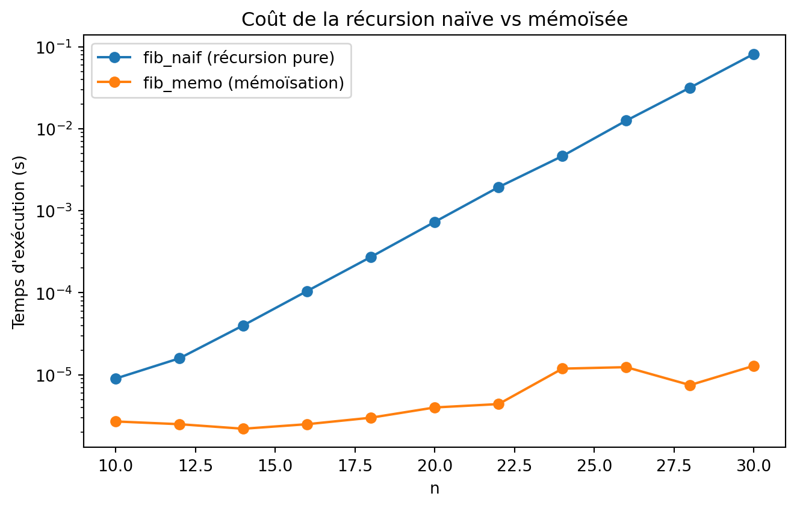

15Fonctions qui s’appellent elles-mêmes
2023-11-21
Note
Une fonction est récursive si, pour calculer son résultat, elle s’appelle elle-même sur une version “plus petite” du problème.
Exemple mathématique — la somme des \(n\) premiers entiers :
\[S(n) = \begin{cases} 0 & \text{si } n = 0 \\ n + S(n-1) & \text{si } n > 0 \end{cases}\]
\(S\) est définie en fonction d’elle-même : c’est une récurrence.
15Chaque appel réduit le problème (n diminue) jusqu’à atteindre un cas trivial (n == 0) qu’on sait résoudre directement.
Une fonction récursive comporte toujours deux parties :
--------------------------------------------------------------------------- RecursionError Traceback (most recent call last) Cell In[2], line 4 1 def somme_sans_arret(n): 2 return n + somme_sans_arret(n - 1) # ne s'arrête jamais ! 3 ----> 4 somme_sans_arret(5) Cell In[2], line 2, in somme_sans_arret(n) 1 def somme_sans_arret(n): ----> 2 return n + somme_sans_arret(n - 1) # ne s'arrête jamais ! Cell In[2], line 2, in somme_sans_arret(n) 1 def somme_sans_arret(n): ----> 2 return n + somme_sans_arret(n - 1) # ne s'arrête jamais ! Cell In[2], line 2, in somme_sans_arret(n) 1 def somme_sans_arret(n): ----> 2 return n + somme_sans_arret(n - 1) # ne s'arrête jamais ! Cell In[2], line 2, in somme_sans_arret(n) 1 def somme_sans_arret(n): ----> 2 return n + somme_sans_arret(n - 1) # ne s'arrête jamais ! Cell In[2], line 2, in somme_sans_arret(n) 1 def somme_sans_arret(n): ----> 2 return n + somme_sans_arret(n - 1) # ne s'arrête jamais ! Cell In[2], line 2, in somme_sans_arret(n) 1 def somme_sans_arret(n): ----> 2 return n + somme_sans_arret(n - 1) # ne s'arrête jamais ! Cell In[2], line 2, in somme_sans_arret(n) 1 def somme_sans_arret(n): ----> 2 return n + somme_sans_arret(n - 1) # ne s'arrête jamais ! Cell In[2], line 2, in somme_sans_arret(n) 1 def somme_sans_arret(n): ----> 2 return n + somme_sans_arret(n - 1) # ne s'arrête jamais ! Cell In[2], line 2, in somme_sans_arret(n) 1 def somme_sans_arret(n): ----> 2 return n + somme_sans_arret(n - 1) # ne s'arrête jamais ! Cell In[2], line 2, in somme_sans_arret(n) 1 def somme_sans_arret(n): ----> 2 return n + somme_sans_arret(n - 1) # ne s'arrête jamais ! Cell In[2], line 2, in somme_sans_arret(n) 1 def somme_sans_arret(n): ----> 2 return n + somme_sans_arret(n - 1) # ne s'arrête jamais ! Cell In[2], line 2, in somme_sans_arret(n) 1 def somme_sans_arret(n): ----> 2 return n + somme_sans_arret(n - 1) # ne s'arrête jamais ! Cell In[2], line 2, in somme_sans_arret(n) 1 def somme_sans_arret(n): ----> 2 return n + somme_sans_arret(n - 1) # ne s'arrête jamais ! Cell In[2], line 2, in somme_sans_arret(n) 1 def somme_sans_arret(n): ----> 2 return n + somme_sans_arret(n - 1) # ne s'arrête jamais ! Cell In[2], line 2, in somme_sans_arret(n) 1 def somme_sans_arret(n): ----> 2 return n + somme_sans_arret(n - 1) # ne s'arrête jamais ! Cell In[2], line 2, in somme_sans_arret(n) 1 def somme_sans_arret(n): ----> 2 return n + somme_sans_arret(n - 1) # ne s'arrête jamais ! Cell In[2], line 2, in somme_sans_arret(n) 1 def somme_sans_arret(n): ----> 2 return n + somme_sans_arret(n - 1) # ne s'arrête jamais ! Cell In[2], line 2, in somme_sans_arret(n) 1 def somme_sans_arret(n): ----> 2 return n + somme_sans_arret(n - 1) # ne s'arrête jamais ! Cell In[2], line 2, in somme_sans_arret(n) 1 def somme_sans_arret(n): ----> 2 return n + somme_sans_arret(n - 1) # ne s'arrête jamais ! Cell In[2], line 2, in somme_sans_arret(n) 1 def somme_sans_arret(n): ----> 2 return n + somme_sans_arret(n - 1) # ne s'arrête jamais ! Cell In[2], line 2, in somme_sans_arret(n) 1 def somme_sans_arret(n): ----> 2 return n + somme_sans_arret(n - 1) # ne s'arrête jamais ! Cell In[2], line 2, in somme_sans_arret(n) 1 def somme_sans_arret(n): ----> 2 return n + somme_sans_arret(n - 1) # ne s'arrête jamais ! Cell In[2], line 2, in somme_sans_arret(n) 1 def somme_sans_arret(n): ----> 2 return n + somme_sans_arret(n - 1) # ne s'arrête jamais ! Cell In[2], line 2, in somme_sans_arret(n) 1 def somme_sans_arret(n): ----> 2 return n + somme_sans_arret(n - 1) # ne s'arrête jamais ! Cell In[2], line 2, in somme_sans_arret(n) 1 def somme_sans_arret(n): ----> 2 return n + somme_sans_arret(n - 1) # ne s'arrête jamais ! Cell In[2], line 2, in somme_sans_arret(n) 1 def somme_sans_arret(n): ----> 2 return n + somme_sans_arret(n - 1) # ne s'arrête jamais ! Cell In[2], line 2, in somme_sans_arret(n) 1 def somme_sans_arret(n): ----> 2 return n + somme_sans_arret(n - 1) # ne s'arrête jamais ! Cell In[2], line 2, in somme_sans_arret(n) 1 def somme_sans_arret(n): ----> 2 return n + somme_sans_arret(n - 1) # ne s'arrête jamais ! Cell In[2], line 2, in somme_sans_arret(n) 1 def somme_sans_arret(n): ----> 2 return n + somme_sans_arret(n - 1) # ne s'arrête jamais ! Cell In[2], line 2, in somme_sans_arret(n) 1 def somme_sans_arret(n): ----> 2 return n + somme_sans_arret(n - 1) # ne s'arrête jamais ! Cell In[2], line 2, in somme_sans_arret(n) 1 def somme_sans_arret(n): ----> 2 return n + somme_sans_arret(n - 1) # ne s'arrête jamais ! Cell In[2], line 2, in somme_sans_arret(n) 1 def somme_sans_arret(n): ----> 2 return n + somme_sans_arret(n - 1) # ne s'arrête jamais ! Cell In[2], line 2, in somme_sans_arret(n) 1 def somme_sans_arret(n): ----> 2 return n + somme_sans_arret(n - 1) # ne s'arrête jamais ! Cell In[2], line 2, in somme_sans_arret(n) 1 def somme_sans_arret(n): ----> 2 return n + somme_sans_arret(n - 1) # ne s'arrête jamais ! Cell In[2], line 2, in somme_sans_arret(n) 1 def somme_sans_arret(n): ----> 2 return n + somme_sans_arret(n - 1) # ne s'arrête jamais ! Cell In[2], line 2, in somme_sans_arret(n) 1 def somme_sans_arret(n): ----> 2 return n + somme_sans_arret(n - 1) # ne s'arrête jamais ! Cell In[2], line 2, in somme_sans_arret(n) 1 def somme_sans_arret(n): ----> 2 return n + somme_sans_arret(n - 1) # ne s'arrête jamais ! Cell In[2], line 2, in somme_sans_arret(n) 1 def somme_sans_arret(n): ----> 2 return n + somme_sans_arret(n - 1) # ne s'arrête jamais ! Cell In[2], line 2, in somme_sans_arret(n) 1 def somme_sans_arret(n): ----> 2 return n + somme_sans_arret(n - 1) # ne s'arrête jamais ! Cell In[2], line 2, in somme_sans_arret(n) 1 def somme_sans_arret(n): ----> 2 return n + somme_sans_arret(n - 1) # ne s'arrête jamais ! Cell In[2], line 2, in somme_sans_arret(n) 1 def somme_sans_arret(n): ----> 2 return n + somme_sans_arret(n - 1) # ne s'arrête jamais ! Cell In[2], line 2, in somme_sans_arret(n) 1 def somme_sans_arret(n): ----> 2 return n + somme_sans_arret(n - 1) # ne s'arrête jamais ! Cell In[2], line 2, in somme_sans_arret(n) 1 def somme_sans_arret(n): ----> 2 return n + somme_sans_arret(n - 1) # ne s'arrête jamais ! Cell In[2], line 2, in somme_sans_arret(n) 1 def somme_sans_arret(n): ----> 2 return n + somme_sans_arret(n - 1) # ne s'arrête jamais ! Cell In[2], line 2, in somme_sans_arret(n) 1 def somme_sans_arret(n): ----> 2 return n + somme_sans_arret(n - 1) # ne s'arrête jamais ! Cell In[2], line 2, in somme_sans_arret(n) 1 def somme_sans_arret(n): ----> 2 return n + somme_sans_arret(n - 1) # ne s'arrête jamais ! Cell In[2], line 2, in somme_sans_arret(n) 1 def somme_sans_arret(n): ----> 2 return n + somme_sans_arret(n - 1) # ne s'arrête jamais ! Cell In[2], line 2, in somme_sans_arret(n) 1 def somme_sans_arret(n): ----> 2 return n + somme_sans_arret(n - 1) # ne s'arrête jamais ! Cell In[2], line 2, in somme_sans_arret(n) 1 def somme_sans_arret(n): ----> 2 return n + somme_sans_arret(n - 1) # ne s'arrête jamais ! Cell In[2], line 2, in somme_sans_arret(n) 1 def somme_sans_arret(n): ----> 2 return n + somme_sans_arret(n - 1) # ne s'arrête jamais ! Cell In[2], line 2, in somme_sans_arret(n) 1 def somme_sans_arret(n): ----> 2 return n + somme_sans_arret(n - 1) # ne s'arrête jamais ! Cell In[2], line 2, in somme_sans_arret(n) 1 def somme_sans_arret(n): ----> 2 return n + somme_sans_arret(n - 1) # ne s'arrête jamais ! Cell In[2], line 2, in somme_sans_arret(n) 1 def somme_sans_arret(n): ----> 2 return n + somme_sans_arret(n - 1) # ne s'arrête jamais ! Cell In[2], line 2, in somme_sans_arret(n) 1 def somme_sans_arret(n): ----> 2 return n + somme_sans_arret(n - 1) # ne s'arrête jamais ! Cell In[2], line 2, in somme_sans_arret(n) 1 def somme_sans_arret(n): ----> 2 return n + somme_sans_arret(n - 1) # ne s'arrête jamais ! Cell In[2], line 2, in somme_sans_arret(n) 1 def somme_sans_arret(n): ----> 2 return n + somme_sans_arret(n - 1) # ne s'arrête jamais ! Cell In[2], line 2, in somme_sans_arret(n) 1 def somme_sans_arret(n): ----> 2 return n + somme_sans_arret(n - 1) # ne s'arrête jamais ! Cell In[2], line 2, in somme_sans_arret(n) 1 def somme_sans_arret(n): ----> 2 return n + somme_sans_arret(n - 1) # ne s'arrête jamais ! Cell In[2], line 2, in somme_sans_arret(n) 1 def somme_sans_arret(n): ----> 2 return n + somme_sans_arret(n - 1) # ne s'arrête jamais ! Cell In[2], line 2, in somme_sans_arret(n) 1 def somme_sans_arret(n): ----> 2 return n + somme_sans_arret(n - 1) # ne s'arrête jamais ! Cell In[2], line 2, in somme_sans_arret(n) 1 def somme_sans_arret(n): ----> 2 return n + somme_sans_arret(n - 1) # ne s'arrête jamais ! Cell In[2], line 2, in somme_sans_arret(n) 1 def somme_sans_arret(n): ----> 2 return n + somme_sans_arret(n - 1) # ne s'arrête jamais ! Cell In[2], line 2, in somme_sans_arret(n) 1 def somme_sans_arret(n): ----> 2 return n + somme_sans_arret(n - 1) # ne s'arrête jamais ! Cell In[2], line 2, in somme_sans_arret(n) 1 def somme_sans_arret(n): ----> 2 return n + somme_sans_arret(n - 1) # ne s'arrête jamais ! Cell In[2], line 2, in somme_sans_arret(n) 1 def somme_sans_arret(n): ----> 2 return n + somme_sans_arret(n - 1) # ne s'arrête jamais ! Cell In[2], line 2, in somme_sans_arret(n) 1 def somme_sans_arret(n): ----> 2 return n + somme_sans_arret(n - 1) # ne s'arrête jamais ! Cell In[2], line 2, in somme_sans_arret(n) 1 def somme_sans_arret(n): ----> 2 return n + somme_sans_arret(n - 1) # ne s'arrête jamais ! Cell In[2], line 2, in somme_sans_arret(n) 1 def somme_sans_arret(n): ----> 2 return n + somme_sans_arret(n - 1) # ne s'arrête jamais ! Cell In[2], line 2, in somme_sans_arret(n) 1 def somme_sans_arret(n): ----> 2 return n + somme_sans_arret(n - 1) # ne s'arrête jamais ! Cell In[2], line 2, in somme_sans_arret(n) 1 def somme_sans_arret(n): ----> 2 return n + somme_sans_arret(n - 1) # ne s'arrête jamais ! Cell In[2], line 2, in somme_sans_arret(n) 1 def somme_sans_arret(n): ----> 2 return n + somme_sans_arret(n - 1) # ne s'arrête jamais ! Cell In[2], line 2, in somme_sans_arret(n) 1 def somme_sans_arret(n): ----> 2 return n + somme_sans_arret(n - 1) # ne s'arrête jamais ! Cell In[2], line 2, in somme_sans_arret(n) 1 def somme_sans_arret(n): ----> 2 return n + somme_sans_arret(n - 1) # ne s'arrête jamais ! Cell In[2], line 2, in somme_sans_arret(n) 1 def somme_sans_arret(n): ----> 2 return n + somme_sans_arret(n - 1) # ne s'arrête jamais ! Cell In[2], line 2, in somme_sans_arret(n) 1 def somme_sans_arret(n): ----> 2 return n + somme_sans_arret(n - 1) # ne s'arrête jamais ! Cell In[2], line 2, in somme_sans_arret(n) 1 def somme_sans_arret(n): ----> 2 return n + somme_sans_arret(n - 1) # ne s'arrête jamais ! Cell In[2], line 2, in somme_sans_arret(n) 1 def somme_sans_arret(n): ----> 2 return n + somme_sans_arret(n - 1) # ne s'arrête jamais ! Cell In[2], line 2, in somme_sans_arret(n) 1 def somme_sans_arret(n): ----> 2 return n + somme_sans_arret(n - 1) # ne s'arrête jamais ! Cell In[2], line 2, in somme_sans_arret(n) 1 def somme_sans_arret(n): ----> 2 return n + somme_sans_arret(n - 1) # ne s'arrête jamais ! Cell In[2], line 2, in somme_sans_arret(n) 1 def somme_sans_arret(n): ----> 2 return n + somme_sans_arret(n - 1) # ne s'arrête jamais ! Cell In[2], line 2, in somme_sans_arret(n) 1 def somme_sans_arret(n): ----> 2 return n + somme_sans_arret(n - 1) # ne s'arrête jamais ! Cell In[2], line 2, in somme_sans_arret(n) 1 def somme_sans_arret(n): ----> 2 return n + somme_sans_arret(n - 1) # ne s'arrête jamais ! Cell In[2], line 2, in somme_sans_arret(n) 1 def somme_sans_arret(n): ----> 2 return n + somme_sans_arret(n - 1) # ne s'arrête jamais ! Cell In[2], line 2, in somme_sans_arret(n) 1 def somme_sans_arret(n): ----> 2 return n + somme_sans_arret(n - 1) # ne s'arrête jamais ! Cell In[2], line 2, in somme_sans_arret(n) 1 def somme_sans_arret(n): ----> 2 return n + somme_sans_arret(n - 1) # ne s'arrête jamais ! Cell In[2], line 2, in somme_sans_arret(n) 1 def somme_sans_arret(n): ----> 2 return n + somme_sans_arret(n - 1) # ne s'arrête jamais ! Cell In[2], line 2, in somme_sans_arret(n) 1 def somme_sans_arret(n): ----> 2 return n + somme_sans_arret(n - 1) # ne s'arrête jamais ! Cell In[2], line 2, in somme_sans_arret(n) 1 def somme_sans_arret(n): ----> 2 return n + somme_sans_arret(n - 1) # ne s'arrête jamais ! Cell In[2], line 2, in somme_sans_arret(n) 1 def somme_sans_arret(n): ----> 2 return n + somme_sans_arret(n - 1) # ne s'arrête jamais ! Cell In[2], line 2, in somme_sans_arret(n) 1 def somme_sans_arret(n): ----> 2 return n + somme_sans_arret(n - 1) # ne s'arrête jamais ! Cell In[2], line 2, in somme_sans_arret(n) 1 def somme_sans_arret(n): ----> 2 return n + somme_sans_arret(n - 1) # ne s'arrête jamais ! Cell In[2], line 2, in somme_sans_arret(n) 1 def somme_sans_arret(n): ----> 2 return n + somme_sans_arret(n - 1) # ne s'arrête jamais ! Cell In[2], line 2, in somme_sans_arret(n) 1 def somme_sans_arret(n): ----> 2 return n + somme_sans_arret(n - 1) # ne s'arrête jamais ! Cell In[2], line 2, in somme_sans_arret(n) 1 def somme_sans_arret(n): ----> 2 return n + somme_sans_arret(n - 1) # ne s'arrête jamais ! Cell In[2], line 2, in somme_sans_arret(n) 1 def somme_sans_arret(n): ----> 2 return n + somme_sans_arret(n - 1) # ne s'arrête jamais ! Cell In[2], line 2, in somme_sans_arret(n) 1 def somme_sans_arret(n): ----> 2 return n + somme_sans_arret(n - 1) # ne s'arrête jamais ! Cell In[2], line 2, in somme_sans_arret(n) 1 def somme_sans_arret(n): ----> 2 return n + somme_sans_arret(n - 1) # ne s'arrête jamais ! Cell In[2], line 2, in somme_sans_arret(n) 1 def somme_sans_arret(n): ----> 2 return n + somme_sans_arret(n - 1) # ne s'arrête jamais ! Cell In[2], line 2, in somme_sans_arret(n) 1 def somme_sans_arret(n): ----> 2 return n + somme_sans_arret(n - 1) # ne s'arrête jamais ! Cell In[2], line 2, in somme_sans_arret(n) 1 def somme_sans_arret(n): ----> 2 return n + somme_sans_arret(n - 1) # ne s'arrête jamais ! Cell In[2], line 2, in somme_sans_arret(n) 1 def somme_sans_arret(n): ----> 2 return n + somme_sans_arret(n - 1) # ne s'arrête jamais ! Cell In[2], line 2, in somme_sans_arret(n) 1 def somme_sans_arret(n): ----> 2 return n + somme_sans_arret(n - 1) # ne s'arrête jamais ! Cell In[2], line 2, in somme_sans_arret(n) 1 def somme_sans_arret(n): ----> 2 return n + somme_sans_arret(n - 1) # ne s'arrête jamais ! Cell In[2], line 2, in somme_sans_arret(n) 1 def somme_sans_arret(n): ----> 2 return n + somme_sans_arret(n - 1) # ne s'arrête jamais ! Cell In[2], line 2, in somme_sans_arret(n) 1 def somme_sans_arret(n): ----> 2 return n + somme_sans_arret(n - 1) # ne s'arrête jamais ! Cell In[2], line 2, in somme_sans_arret(n) 1 def somme_sans_arret(n): ----> 2 return n + somme_sans_arret(n - 1) # ne s'arrête jamais ! Cell In[2], line 2, in somme_sans_arret(n) 1 def somme_sans_arret(n): ----> 2 return n + somme_sans_arret(n - 1) # ne s'arrête jamais ! Cell In[2], line 2, in somme_sans_arret(n) 1 def somme_sans_arret(n): ----> 2 return n + somme_sans_arret(n - 1) # ne s'arrête jamais ! Cell In[2], line 2, in somme_sans_arret(n) 1 def somme_sans_arret(n): ----> 2 return n + somme_sans_arret(n - 1) # ne s'arrête jamais ! Cell In[2], line 2, in somme_sans_arret(n) 1 def somme_sans_arret(n): ----> 2 return n + somme_sans_arret(n - 1) # ne s'arrête jamais ! Cell In[2], line 2, in somme_sans_arret(n) 1 def somme_sans_arret(n): ----> 2 return n + somme_sans_arret(n - 1) # ne s'arrête jamais ! Cell In[2], line 2, in somme_sans_arret(n) 1 def somme_sans_arret(n): ----> 2 return n + somme_sans_arret(n - 1) # ne s'arrête jamais ! Cell In[2], line 2, in somme_sans_arret(n) 1 def somme_sans_arret(n): ----> 2 return n + somme_sans_arret(n - 1) # ne s'arrête jamais ! Cell In[2], line 2, in somme_sans_arret(n) 1 def somme_sans_arret(n): ----> 2 return n + somme_sans_arret(n - 1) # ne s'arrête jamais ! Cell In[2], line 2, in somme_sans_arret(n) 1 def somme_sans_arret(n): ----> 2 return n + somme_sans_arret(n - 1) # ne s'arrête jamais ! Cell In[2], line 2, in somme_sans_arret(n) 1 def somme_sans_arret(n): ----> 2 return n + somme_sans_arret(n - 1) # ne s'arrête jamais ! Cell In[2], line 2, in somme_sans_arret(n) 1 def somme_sans_arret(n): ----> 2 return n + somme_sans_arret(n - 1) # ne s'arrête jamais ! Cell In[2], line 2, in somme_sans_arret(n) 1 def somme_sans_arret(n): ----> 2 return n + somme_sans_arret(n - 1) # ne s'arrête jamais ! Cell In[2], line 2, in somme_sans_arret(n) 1 def somme_sans_arret(n): ----> 2 return n + somme_sans_arret(n - 1) # ne s'arrête jamais ! Cell In[2], line 2, in somme_sans_arret(n) 1 def somme_sans_arret(n): ----> 2 return n + somme_sans_arret(n - 1) # ne s'arrête jamais ! Cell In[2], line 2, in somme_sans_arret(n) 1 def somme_sans_arret(n): ----> 2 return n + somme_sans_arret(n - 1) # ne s'arrête jamais ! Cell In[2], line 2, in somme_sans_arret(n) 1 def somme_sans_arret(n): ----> 2 return n + somme_sans_arret(n - 1) # ne s'arrête jamais ! Cell In[2], line 2, in somme_sans_arret(n) 1 def somme_sans_arret(n): ----> 2 return n + somme_sans_arret(n - 1) # ne s'arrête jamais ! Cell In[2], line 2, in somme_sans_arret(n) 1 def somme_sans_arret(n): ----> 2 return n + somme_sans_arret(n - 1) # ne s'arrête jamais ! Cell In[2], line 2, in somme_sans_arret(n) 1 def somme_sans_arret(n): ----> 2 return n + somme_sans_arret(n - 1) # ne s'arrête jamais ! Cell In[2], line 2, in somme_sans_arret(n) 1 def somme_sans_arret(n): ----> 2 return n + somme_sans_arret(n - 1) # ne s'arrête jamais ! Cell In[2], line 2, in somme_sans_arret(n) 1 def somme_sans_arret(n): ----> 2 return n + somme_sans_arret(n - 1) # ne s'arrête jamais ! Cell In[2], line 2, in somme_sans_arret(n) 1 def somme_sans_arret(n): ----> 2 return n + somme_sans_arret(n - 1) # ne s'arrête jamais ! Cell In[2], line 2, in somme_sans_arret(n) 1 def somme_sans_arret(n): ----> 2 return n + somme_sans_arret(n - 1) # ne s'arrête jamais ! Cell In[2], line 2, in somme_sans_arret(n) 1 def somme_sans_arret(n): ----> 2 return n + somme_sans_arret(n - 1) # ne s'arrête jamais ! Cell In[2], line 2, in somme_sans_arret(n) 1 def somme_sans_arret(n): ----> 2 return n + somme_sans_arret(n - 1) # ne s'arrête jamais ! Cell In[2], line 2, in somme_sans_arret(n) 1 def somme_sans_arret(n): ----> 2 return n + somme_sans_arret(n - 1) # ne s'arrête jamais ! Cell In[2], line 2, in somme_sans_arret(n) 1 def somme_sans_arret(n): ----> 2 return n + somme_sans_arret(n - 1) # ne s'arrête jamais ! Cell In[2], line 2, in somme_sans_arret(n) 1 def somme_sans_arret(n): ----> 2 return n + somme_sans_arret(n - 1) # ne s'arrête jamais ! Cell In[2], line 2, in somme_sans_arret(n) 1 def somme_sans_arret(n): ----> 2 return n + somme_sans_arret(n - 1) # ne s'arrête jamais ! Cell In[2], line 2, in somme_sans_arret(n) 1 def somme_sans_arret(n): ----> 2 return n + somme_sans_arret(n - 1) # ne s'arrête jamais ! Cell In[2], line 2, in somme_sans_arret(n) 1 def somme_sans_arret(n): ----> 2 return n + somme_sans_arret(n - 1) # ne s'arrête jamais ! Cell In[2], line 2, in somme_sans_arret(n) 1 def somme_sans_arret(n): ----> 2 return n + somme_sans_arret(n - 1) # ne s'arrête jamais ! Cell In[2], line 2, in somme_sans_arret(n) 1 def somme_sans_arret(n): ----> 2 return n + somme_sans_arret(n - 1) # ne s'arrête jamais ! Cell In[2], line 2, in somme_sans_arret(n) 1 def somme_sans_arret(n): ----> 2 return n + somme_sans_arret(n - 1) # ne s'arrête jamais ! Cell In[2], line 2, in somme_sans_arret(n) 1 def somme_sans_arret(n): ----> 2 return n + somme_sans_arret(n - 1) # ne s'arrête jamais ! Cell In[2], line 2, in somme_sans_arret(n) 1 def somme_sans_arret(n): ----> 2 return n + somme_sans_arret(n - 1) # ne s'arrête jamais ! Cell In[2], line 2, in somme_sans_arret(n) 1 def somme_sans_arret(n): ----> 2 return n + somme_sans_arret(n - 1) # ne s'arrête jamais ! Cell In[2], line 2, in somme_sans_arret(n) 1 def somme_sans_arret(n): ----> 2 return n + somme_sans_arret(n - 1) # ne s'arrête jamais ! Cell In[2], line 2, in somme_sans_arret(n) 1 def somme_sans_arret(n): ----> 2 return n + somme_sans_arret(n - 1) # ne s'arrête jamais ! Cell In[2], line 2, in somme_sans_arret(n) 1 def somme_sans_arret(n): ----> 2 return n + somme_sans_arret(n - 1) # ne s'arrête jamais ! Cell In[2], line 2, in somme_sans_arret(n) 1 def somme_sans_arret(n): ----> 2 return n + somme_sans_arret(n - 1) # ne s'arrête jamais ! Cell In[2], line 2, in somme_sans_arret(n) 1 def somme_sans_arret(n): ----> 2 return n + somme_sans_arret(n - 1) # ne s'arrête jamais ! Cell In[2], line 2, in somme_sans_arret(n) 1 def somme_sans_arret(n): ----> 2 return n + somme_sans_arret(n - 1) # ne s'arrête jamais ! Cell In[2], line 2, in somme_sans_arret(n) 1 def somme_sans_arret(n): ----> 2 return n + somme_sans_arret(n - 1) # ne s'arrête jamais ! Cell In[2], line 2, in somme_sans_arret(n) 1 def somme_sans_arret(n): ----> 2 return n + somme_sans_arret(n - 1) # ne s'arrête jamais ! Cell In[2], line 2, in somme_sans_arret(n) 1 def somme_sans_arret(n): ----> 2 return n + somme_sans_arret(n - 1) # ne s'arrête jamais ! Cell In[2], line 2, in somme_sans_arret(n) 1 def somme_sans_arret(n): ----> 2 return n + somme_sans_arret(n - 1) # ne s'arrête jamais ! Cell In[2], line 2, in somme_sans_arret(n) 1 def somme_sans_arret(n): ----> 2 return n + somme_sans_arret(n - 1) # ne s'arrête jamais ! Cell In[2], line 2, in somme_sans_arret(n) 1 def somme_sans_arret(n): ----> 2 return n + somme_sans_arret(n - 1) # ne s'arrête jamais ! Cell In[2], line 2, in somme_sans_arret(n) 1 def somme_sans_arret(n): ----> 2 return n + somme_sans_arret(n - 1) # ne s'arrête jamais ! Cell In[2], line 2, in somme_sans_arret(n) 1 def somme_sans_arret(n): ----> 2 return n + somme_sans_arret(n - 1) # ne s'arrête jamais ! Cell In[2], line 2, in somme_sans_arret(n) 1 def somme_sans_arret(n): ----> 2 return n + somme_sans_arret(n - 1) # ne s'arrête jamais ! Cell In[2], line 2, in somme_sans_arret(n) 1 def somme_sans_arret(n): ----> 2 return n + somme_sans_arret(n - 1) # ne s'arrête jamais ! Cell In[2], line 2, in somme_sans_arret(n) 1 def somme_sans_arret(n): ----> 2 return n + somme_sans_arret(n - 1) # ne s'arrête jamais ! Cell In[2], line 2, in somme_sans_arret(n) 1 def somme_sans_arret(n): ----> 2 return n + somme_sans_arret(n - 1) # ne s'arrête jamais ! Cell In[2], line 2, in somme_sans_arret(n) 1 def somme_sans_arret(n): ----> 2 return n + somme_sans_arret(n - 1) # ne s'arrête jamais ! Cell In[2], line 2, in somme_sans_arret(n) 1 def somme_sans_arret(n): ----> 2 return n + somme_sans_arret(n - 1) # ne s'arrête jamais ! Cell In[2], line 2, in somme_sans_arret(n) 1 def somme_sans_arret(n): ----> 2 return n + somme_sans_arret(n - 1) # ne s'arrête jamais ! Cell In[2], line 2, in somme_sans_arret(n) 1 def somme_sans_arret(n): ----> 2 return n + somme_sans_arret(n - 1) # ne s'arrête jamais ! Cell In[2], line 2, in somme_sans_arret(n) 1 def somme_sans_arret(n): ----> 2 return n + somme_sans_arret(n - 1) # ne s'arrête jamais ! Cell In[2], line 2, in somme_sans_arret(n) 1 def somme_sans_arret(n): ----> 2 return n + somme_sans_arret(n - 1) # ne s'arrête jamais ! Cell In[2], line 2, in somme_sans_arret(n) 1 def somme_sans_arret(n): ----> 2 return n + somme_sans_arret(n - 1) # ne s'arrête jamais ! Cell In[2], line 2, in somme_sans_arret(n) 1 def somme_sans_arret(n): ----> 2 return n + somme_sans_arret(n - 1) # ne s'arrête jamais ! Cell In[2], line 2, in somme_sans_arret(n) 1 def somme_sans_arret(n): ----> 2 return n + somme_sans_arret(n - 1) # ne s'arrête jamais ! Cell In[2], line 2, in somme_sans_arret(n) 1 def somme_sans_arret(n): ----> 2 return n + somme_sans_arret(n - 1) # ne s'arrête jamais ! Cell In[2], line 2, in somme_sans_arret(n) 1 def somme_sans_arret(n): ----> 2 return n + somme_sans_arret(n - 1) # ne s'arrête jamais ! Cell In[2], line 2, in somme_sans_arret(n) 1 def somme_sans_arret(n): ----> 2 return n + somme_sans_arret(n - 1) # ne s'arrête jamais ! Cell In[2], line 2, in somme_sans_arret(n) 1 def somme_sans_arret(n): ----> 2 return n + somme_sans_arret(n - 1) # ne s'arrête jamais ! Cell In[2], line 2, in somme_sans_arret(n) 1 def somme_sans_arret(n): ----> 2 return n + somme_sans_arret(n - 1) # ne s'arrête jamais ! Cell In[2], line 2, in somme_sans_arret(n) 1 def somme_sans_arret(n): ----> 2 return n + somme_sans_arret(n - 1) # ne s'arrête jamais ! Cell In[2], line 2, in somme_sans_arret(n) 1 def somme_sans_arret(n): ----> 2 return n + somme_sans_arret(n - 1) # ne s'arrête jamais ! Cell In[2], line 2, in somme_sans_arret(n) 1 def somme_sans_arret(n): ----> 2 return n + somme_sans_arret(n - 1) # ne s'arrête jamais ! Cell In[2], line 2, in somme_sans_arret(n) 1 def somme_sans_arret(n): ----> 2 return n + somme_sans_arret(n - 1) # ne s'arrête jamais ! Cell In[2], line 2, in somme_sans_arret(n) 1 def somme_sans_arret(n): ----> 2 return n + somme_sans_arret(n - 1) # ne s'arrête jamais ! Cell In[2], line 2, in somme_sans_arret(n) 1 def somme_sans_arret(n): ----> 2 return n + somme_sans_arret(n - 1) # ne s'arrête jamais ! Cell In[2], line 2, in somme_sans_arret(n) 1 def somme_sans_arret(n): ----> 2 return n + somme_sans_arret(n - 1) # ne s'arrête jamais ! Cell In[2], line 2, in somme_sans_arret(n) 1 def somme_sans_arret(n): ----> 2 return n + somme_sans_arret(n - 1) # ne s'arrête jamais ! Cell In[2], line 2, in somme_sans_arret(n) 1 def somme_sans_arret(n): ----> 2 return n + somme_sans_arret(n - 1) # ne s'arrête jamais ! Cell In[2], line 2, in somme_sans_arret(n) 1 def somme_sans_arret(n): ----> 2 return n + somme_sans_arret(n - 1) # ne s'arrête jamais ! Cell In[2], line 2, in somme_sans_arret(n) 1 def somme_sans_arret(n): ----> 2 return n + somme_sans_arret(n - 1) # ne s'arrête jamais ! Cell In[2], line 2, in somme_sans_arret(n) 1 def somme_sans_arret(n): ----> 2 return n + somme_sans_arret(n - 1) # ne s'arrête jamais ! Cell In[2], line 2, in somme_sans_arret(n) 1 def somme_sans_arret(n): ----> 2 return n + somme_sans_arret(n - 1) # ne s'arrête jamais ! Cell In[2], line 2, in somme_sans_arret(n) 1 def somme_sans_arret(n): ----> 2 return n + somme_sans_arret(n - 1) # ne s'arrête jamais ! Cell In[2], line 2, in somme_sans_arret(n) 1 def somme_sans_arret(n): ----> 2 return n + somme_sans_arret(n - 1) # ne s'arrête jamais ! Cell In[2], line 2, in somme_sans_arret(n) 1 def somme_sans_arret(n): ----> 2 return n + somme_sans_arret(n - 1) # ne s'arrête jamais ! Cell In[2], line 2, in somme_sans_arret(n) 1 def somme_sans_arret(n): ----> 2 return n + somme_sans_arret(n - 1) # ne s'arrête jamais ! Cell In[2], line 2, in somme_sans_arret(n) 1 def somme_sans_arret(n): ----> 2 return n + somme_sans_arret(n - 1) # ne s'arrête jamais ! Cell In[2], line 2, in somme_sans_arret(n) 1 def somme_sans_arret(n): ----> 2 return n + somme_sans_arret(n - 1) # ne s'arrête jamais ! Cell In[2], line 2, in somme_sans_arret(n) 1 def somme_sans_arret(n): ----> 2 return n + somme_sans_arret(n - 1) # ne s'arrête jamais ! Cell In[2], line 2, in somme_sans_arret(n) 1 def somme_sans_arret(n): ----> 2 return n + somme_sans_arret(n - 1) # ne s'arrête jamais ! Cell In[2], line 2, in somme_sans_arret(n) 1 def somme_sans_arret(n): ----> 2 return n + somme_sans_arret(n - 1) # ne s'arrête jamais ! Cell In[2], line 2, in somme_sans_arret(n) 1 def somme_sans_arret(n): ----> 2 return n + somme_sans_arret(n - 1) # ne s'arrête jamais ! Cell In[2], line 2, in somme_sans_arret(n) 1 def somme_sans_arret(n): ----> 2 return n + somme_sans_arret(n - 1) # ne s'arrête jamais ! Cell In[2], line 2, in somme_sans_arret(n) 1 def somme_sans_arret(n): ----> 2 return n + somme_sans_arret(n - 1) # ne s'arrête jamais ! Cell In[2], line 2, in somme_sans_arret(n) 1 def somme_sans_arret(n): ----> 2 return n + somme_sans_arret(n - 1) # ne s'arrête jamais ! Cell In[2], line 2, in somme_sans_arret(n) 1 def somme_sans_arret(n): ----> 2 return n + somme_sans_arret(n - 1) # ne s'arrête jamais ! Cell In[2], line 2, in somme_sans_arret(n) 1 def somme_sans_arret(n): ----> 2 return n + somme_sans_arret(n - 1) # ne s'arrête jamais ! Cell In[2], line 2, in somme_sans_arret(n) 1 def somme_sans_arret(n): ----> 2 return n + somme_sans_arret(n - 1) # ne s'arrête jamais ! Cell In[2], line 2, in somme_sans_arret(n) 1 def somme_sans_arret(n): ----> 2 return n + somme_sans_arret(n - 1) # ne s'arrête jamais ! Cell In[2], line 2, in somme_sans_arret(n) 1 def somme_sans_arret(n): ----> 2 return n + somme_sans_arret(n - 1) # ne s'arrête jamais ! Cell In[2], line 2, in somme_sans_arret(n) 1 def somme_sans_arret(n): ----> 2 return n + somme_sans_arret(n - 1) # ne s'arrête jamais ! Cell In[2], line 2, in somme_sans_arret(n) 1 def somme_sans_arret(n): ----> 2 return n + somme_sans_arret(n - 1) # ne s'arrête jamais ! Cell In[2], line 2, in somme_sans_arret(n) 1 def somme_sans_arret(n): ----> 2 return n + somme_sans_arret(n - 1) # ne s'arrête jamais ! Cell In[2], line 2, in somme_sans_arret(n) 1 def somme_sans_arret(n): ----> 2 return n + somme_sans_arret(n - 1) # ne s'arrête jamais ! Cell In[2], line 2, in somme_sans_arret(n) 1 def somme_sans_arret(n): ----> 2 return n + somme_sans_arret(n - 1) # ne s'arrête jamais ! Cell In[2], line 2, in somme_sans_arret(n) 1 def somme_sans_arret(n): ----> 2 return n + somme_sans_arret(n - 1) # ne s'arrête jamais ! Cell In[2], line 2, in somme_sans_arret(n) 1 def somme_sans_arret(n): ----> 2 return n + somme_sans_arret(n - 1) # ne s'arrête jamais ! Cell In[2], line 2, in somme_sans_arret(n) 1 def somme_sans_arret(n): ----> 2 return n + somme_sans_arret(n - 1) # ne s'arrête jamais ! Cell In[2], line 2, in somme_sans_arret(n) 1 def somme_sans_arret(n): ----> 2 return n + somme_sans_arret(n - 1) # ne s'arrête jamais ! Cell In[2], line 2, in somme_sans_arret(n) 1 def somme_sans_arret(n): ----> 2 return n + somme_sans_arret(n - 1) # ne s'arrête jamais ! Cell In[2], line 2, in somme_sans_arret(n) 1 def somme_sans_arret(n): ----> 2 return n + somme_sans_arret(n - 1) # ne s'arrête jamais ! Cell In[2], line 2, in somme_sans_arret(n) 1 def somme_sans_arret(n): ----> 2 return n + somme_sans_arret(n - 1) # ne s'arrête jamais ! Cell In[2], line 2, in somme_sans_arret(n) 1 def somme_sans_arret(n): ----> 2 return n + somme_sans_arret(n - 1) # ne s'arrête jamais ! Cell In[2], line 2, in somme_sans_arret(n) 1 def somme_sans_arret(n): ----> 2 return n + somme_sans_arret(n - 1) # ne s'arrête jamais ! Cell In[2], line 2, in somme_sans_arret(n) 1 def somme_sans_arret(n): ----> 2 return n + somme_sans_arret(n - 1) # ne s'arrête jamais ! Cell In[2], line 2, in somme_sans_arret(n) 1 def somme_sans_arret(n): ----> 2 return n + somme_sans_arret(n - 1) # ne s'arrête jamais ! Cell In[2], line 2, in somme_sans_arret(n) 1 def somme_sans_arret(n): ----> 2 return n + somme_sans_arret(n - 1) # ne s'arrête jamais ! Cell In[2], line 2, in somme_sans_arret(n) 1 def somme_sans_arret(n): ----> 2 return n + somme_sans_arret(n - 1) # ne s'arrête jamais ! Cell In[2], line 2, in somme_sans_arret(n) 1 def somme_sans_arret(n): ----> 2 return n + somme_sans_arret(n - 1) # ne s'arrête jamais ! Cell In[2], line 2, in somme_sans_arret(n) 1 def somme_sans_arret(n): ----> 2 return n + somme_sans_arret(n - 1) # ne s'arrête jamais ! Cell In[2], line 2, in somme_sans_arret(n) 1 def somme_sans_arret(n): ----> 2 return n + somme_sans_arret(n - 1) # ne s'arrête jamais ! Cell In[2], line 2, in somme_sans_arret(n) 1 def somme_sans_arret(n): ----> 2 return n + somme_sans_arret(n - 1) # ne s'arrête jamais ! Cell In[2], line 2, in somme_sans_arret(n) 1 def somme_sans_arret(n): ----> 2 return n + somme_sans_arret(n - 1) # ne s'arrête jamais ! Cell In[2], line 2, in somme_sans_arret(n) 1 def somme_sans_arret(n): ----> 2 return n + somme_sans_arret(n - 1) # ne s'arrête jamais ! Cell In[2], line 2, in somme_sans_arret(n) 1 def somme_sans_arret(n): ----> 2 return n + somme_sans_arret(n - 1) # ne s'arrête jamais ! Cell In[2], line 2, in somme_sans_arret(n) 1 def somme_sans_arret(n): ----> 2 return n + somme_sans_arret(n - 1) # ne s'arrête jamais ! Cell In[2], line 2, in somme_sans_arret(n) 1 def somme_sans_arret(n): ----> 2 return n + somme_sans_arret(n - 1) # ne s'arrête jamais ! Cell In[2], line 2, in somme_sans_arret(n) 1 def somme_sans_arret(n): ----> 2 return n + somme_sans_arret(n - 1) # ne s'arrête jamais ! Cell In[2], line 2, in somme_sans_arret(n) 1 def somme_sans_arret(n): ----> 2 return n + somme_sans_arret(n - 1) # ne s'arrête jamais ! Cell In[2], line 2, in somme_sans_arret(n) 1 def somme_sans_arret(n): ----> 2 return n + somme_sans_arret(n - 1) # ne s'arrête jamais ! Cell In[2], line 2, in somme_sans_arret(n) 1 def somme_sans_arret(n): ----> 2 return n + somme_sans_arret(n - 1) # ne s'arrête jamais ! Cell In[2], line 2, in somme_sans_arret(n) 1 def somme_sans_arret(n): ----> 2 return n + somme_sans_arret(n - 1) # ne s'arrête jamais ! Cell In[2], line 2, in somme_sans_arret(n) 1 def somme_sans_arret(n): ----> 2 return n + somme_sans_arret(n - 1) # ne s'arrête jamais ! Cell In[2], line 2, in somme_sans_arret(n) 1 def somme_sans_arret(n): ----> 2 return n + somme_sans_arret(n - 1) # ne s'arrête jamais ! Cell In[2], line 2, in somme_sans_arret(n) 1 def somme_sans_arret(n): ----> 2 return n + somme_sans_arret(n - 1) # ne s'arrête jamais ! Cell In[2], line 2, in somme_sans_arret(n) 1 def somme_sans_arret(n): ----> 2 return n + somme_sans_arret(n - 1) # ne s'arrête jamais ! Cell In[2], line 2, in somme_sans_arret(n) 1 def somme_sans_arret(n): ----> 2 return n + somme_sans_arret(n - 1) # ne s'arrête jamais ! Cell In[2], line 2, in somme_sans_arret(n) 1 def somme_sans_arret(n): ----> 2 return n + somme_sans_arret(n - 1) # ne s'arrête jamais ! Cell In[2], line 2, in somme_sans_arret(n) 1 def somme_sans_arret(n): ----> 2 return n + somme_sans_arret(n - 1) # ne s'arrête jamais ! Cell In[2], line 2, in somme_sans_arret(n) 1 def somme_sans_arret(n): ----> 2 return n + somme_sans_arret(n - 1) # ne s'arrête jamais ! Cell In[2], line 2, in somme_sans_arret(n) 1 def somme_sans_arret(n): ----> 2 return n + somme_sans_arret(n - 1) # ne s'arrête jamais ! Cell In[2], line 2, in somme_sans_arret(n) 1 def somme_sans_arret(n): ----> 2 return n + somme_sans_arret(n - 1) # ne s'arrête jamais ! Cell In[2], line 2, in somme_sans_arret(n) 1 def somme_sans_arret(n): ----> 2 return n + somme_sans_arret(n - 1) # ne s'arrête jamais ! Cell In[2], line 2, in somme_sans_arret(n) 1 def somme_sans_arret(n): ----> 2 return n + somme_sans_arret(n - 1) # ne s'arrête jamais ! Cell In[2], line 2, in somme_sans_arret(n) 1 def somme_sans_arret(n): ----> 2 return n + somme_sans_arret(n - 1) # ne s'arrête jamais ! Cell In[2], line 2, in somme_sans_arret(n) 1 def somme_sans_arret(n): ----> 2 return n + somme_sans_arret(n - 1) # ne s'arrête jamais ! Cell In[2], line 2, in somme_sans_arret(n) 1 def somme_sans_arret(n): ----> 2 return n + somme_sans_arret(n - 1) # ne s'arrête jamais ! Cell In[2], line 2, in somme_sans_arret(n) 1 def somme_sans_arret(n): ----> 2 return n + somme_sans_arret(n - 1) # ne s'arrête jamais ! Cell In[2], line 2, in somme_sans_arret(n) 1 def somme_sans_arret(n): ----> 2 return n + somme_sans_arret(n - 1) # ne s'arrête jamais ! Cell In[2], line 2, in somme_sans_arret(n) 1 def somme_sans_arret(n): ----> 2 return n + somme_sans_arret(n - 1) # ne s'arrête jamais ! Cell In[2], line 2, in somme_sans_arret(n) 1 def somme_sans_arret(n): ----> 2 return n + somme_sans_arret(n - 1) # ne s'arrête jamais ! Cell In[2], line 2, in somme_sans_arret(n) 1 def somme_sans_arret(n): ----> 2 return n + somme_sans_arret(n - 1) # ne s'arrête jamais ! Cell In[2], line 2, in somme_sans_arret(n) 1 def somme_sans_arret(n): ----> 2 return n + somme_sans_arret(n - 1) # ne s'arrête jamais ! Cell In[2], line 2, in somme_sans_arret(n) 1 def somme_sans_arret(n): ----> 2 return n + somme_sans_arret(n - 1) # ne s'arrête jamais ! Cell In[2], line 2, in somme_sans_arret(n) 1 def somme_sans_arret(n): ----> 2 return n + somme_sans_arret(n - 1) # ne s'arrête jamais ! Cell In[2], line 2, in somme_sans_arret(n) 1 def somme_sans_arret(n): ----> 2 return n + somme_sans_arret(n - 1) # ne s'arrête jamais ! Cell In[2], line 2, in somme_sans_arret(n) 1 def somme_sans_arret(n): ----> 2 return n + somme_sans_arret(n - 1) # ne s'arrête jamais ! Cell In[2], line 2, in somme_sans_arret(n) 1 def somme_sans_arret(n): ----> 2 return n + somme_sans_arret(n - 1) # ne s'arrête jamais ! Cell In[2], line 2, in somme_sans_arret(n) 1 def somme_sans_arret(n): ----> 2 return n + somme_sans_arret(n - 1) # ne s'arrête jamais ! Cell In[2], line 2, in somme_sans_arret(n) 1 def somme_sans_arret(n): ----> 2 return n + somme_sans_arret(n - 1) # ne s'arrête jamais ! Cell In[2], line 2, in somme_sans_arret(n) 1 def somme_sans_arret(n): ----> 2 return n + somme_sans_arret(n - 1) # ne s'arrête jamais ! Cell In[2], line 2, in somme_sans_arret(n) 1 def somme_sans_arret(n): ----> 2 return n + somme_sans_arret(n - 1) # ne s'arrête jamais ! Cell In[2], line 2, in somme_sans_arret(n) 1 def somme_sans_arret(n): ----> 2 return n + somme_sans_arret(n - 1) # ne s'arrête jamais ! Cell In[2], line 2, in somme_sans_arret(n) 1 def somme_sans_arret(n): ----> 2 return n + somme_sans_arret(n - 1) # ne s'arrête jamais ! Cell In[2], line 2, in somme_sans_arret(n) 1 def somme_sans_arret(n): ----> 2 return n + somme_sans_arret(n - 1) # ne s'arrête jamais ! Cell In[2], line 2, in somme_sans_arret(n) 1 def somme_sans_arret(n): ----> 2 return n + somme_sans_arret(n - 1) # ne s'arrête jamais ! Cell In[2], line 2, in somme_sans_arret(n) 1 def somme_sans_arret(n): ----> 2 return n + somme_sans_arret(n - 1) # ne s'arrête jamais ! Cell In[2], line 2, in somme_sans_arret(n) 1 def somme_sans_arret(n): ----> 2 return n + somme_sans_arret(n - 1) # ne s'arrête jamais ! Cell In[2], line 2, in somme_sans_arret(n) 1 def somme_sans_arret(n): ----> 2 return n + somme_sans_arret(n - 1) # ne s'arrête jamais ! Cell In[2], line 2, in somme_sans_arret(n) 1 def somme_sans_arret(n): ----> 2 return n + somme_sans_arret(n - 1) # ne s'arrête jamais ! Cell In[2], line 2, in somme_sans_arret(n) 1 def somme_sans_arret(n): ----> 2 return n + somme_sans_arret(n - 1) # ne s'arrête jamais ! Cell In[2], line 2, in somme_sans_arret(n) 1 def somme_sans_arret(n): ----> 2 return n + somme_sans_arret(n - 1) # ne s'arrête jamais ! Cell In[2], line 2, in somme_sans_arret(n) 1 def somme_sans_arret(n): ----> 2 return n + somme_sans_arret(n - 1) # ne s'arrête jamais ! Cell In[2], line 2, in somme_sans_arret(n) 1 def somme_sans_arret(n): ----> 2 return n + somme_sans_arret(n - 1) # ne s'arrête jamais ! Cell In[2], line 2, in somme_sans_arret(n) 1 def somme_sans_arret(n): ----> 2 return n + somme_sans_arret(n - 1) # ne s'arrête jamais ! Cell In[2], line 2, in somme_sans_arret(n) 1 def somme_sans_arret(n): ----> 2 return n + somme_sans_arret(n - 1) # ne s'arrête jamais ! Cell In[2], line 2, in somme_sans_arret(n) 1 def somme_sans_arret(n): ----> 2 return n + somme_sans_arret(n - 1) # ne s'arrête jamais ! Cell In[2], line 2, in somme_sans_arret(n) 1 def somme_sans_arret(n): ----> 2 return n + somme_sans_arret(n - 1) # ne s'arrête jamais ! Cell In[2], line 2, in somme_sans_arret(n) 1 def somme_sans_arret(n): ----> 2 return n + somme_sans_arret(n - 1) # ne s'arrête jamais ! Cell In[2], line 2, in somme_sans_arret(n) 1 def somme_sans_arret(n): ----> 2 return n + somme_sans_arret(n - 1) # ne s'arrête jamais ! Cell In[2], line 2, in somme_sans_arret(n) 1 def somme_sans_arret(n): ----> 2 return n + somme_sans_arret(n - 1) # ne s'arrête jamais ! Cell In[2], line 2, in somme_sans_arret(n) 1 def somme_sans_arret(n): ----> 2 return n + somme_sans_arret(n - 1) # ne s'arrête jamais ! Cell In[2], line 2, in somme_sans_arret(n) 1 def somme_sans_arret(n): ----> 2 return n + somme_sans_arret(n - 1) # ne s'arrête jamais ! Cell In[2], line 2, in somme_sans_arret(n) 1 def somme_sans_arret(n): ----> 2 return n + somme_sans_arret(n - 1) # ne s'arrête jamais ! Cell In[2], line 2, in somme_sans_arret(n) 1 def somme_sans_arret(n): ----> 2 return n + somme_sans_arret(n - 1) # ne s'arrête jamais ! Cell In[2], line 2, in somme_sans_arret(n) 1 def somme_sans_arret(n): ----> 2 return n + somme_sans_arret(n - 1) # ne s'arrête jamais ! Cell In[2], line 2, in somme_sans_arret(n) 1 def somme_sans_arret(n): ----> 2 return n + somme_sans_arret(n - 1) # ne s'arrête jamais ! Cell In[2], line 2, in somme_sans_arret(n) 1 def somme_sans_arret(n): ----> 2 return n + somme_sans_arret(n - 1) # ne s'arrête jamais ! Cell In[2], line 2, in somme_sans_arret(n) 1 def somme_sans_arret(n): ----> 2 return n + somme_sans_arret(n - 1) # ne s'arrête jamais ! Cell In[2], line 2, in somme_sans_arret(n) 1 def somme_sans_arret(n): ----> 2 return n + somme_sans_arret(n - 1) # ne s'arrête jamais ! Cell In[2], line 2, in somme_sans_arret(n) 1 def somme_sans_arret(n): ----> 2 return n + somme_sans_arret(n - 1) # ne s'arrête jamais ! Cell In[2], line 2, in somme_sans_arret(n) 1 def somme_sans_arret(n): ----> 2 return n + somme_sans_arret(n - 1) # ne s'arrête jamais ! Cell In[2], line 2, in somme_sans_arret(n) 1 def somme_sans_arret(n): ----> 2 return n + somme_sans_arret(n - 1) # ne s'arrête jamais ! Cell In[2], line 2, in somme_sans_arret(n) 1 def somme_sans_arret(n): ----> 2 return n + somme_sans_arret(n - 1) # ne s'arrête jamais ! Cell In[2], line 2, in somme_sans_arret(n) 1 def somme_sans_arret(n): ----> 2 return n + somme_sans_arret(n - 1) # ne s'arrête jamais ! Cell In[2], line 2, in somme_sans_arret(n) 1 def somme_sans_arret(n): ----> 2 return n + somme_sans_arret(n - 1) # ne s'arrête jamais ! Cell In[2], line 2, in somme_sans_arret(n) 1 def somme_sans_arret(n): ----> 2 return n + somme_sans_arret(n - 1) # ne s'arrête jamais ! Cell In[2], line 2, in somme_sans_arret(n) 1 def somme_sans_arret(n): ----> 2 return n + somme_sans_arret(n - 1) # ne s'arrête jamais ! Cell In[2], line 2, in somme_sans_arret(n) 1 def somme_sans_arret(n): ----> 2 return n + somme_sans_arret(n - 1) # ne s'arrête jamais ! Cell In[2], line 2, in somme_sans_arret(n) 1 def somme_sans_arret(n): ----> 2 return n + somme_sans_arret(n - 1) # ne s'arrête jamais ! Cell In[2], line 2, in somme_sans_arret(n) 1 def somme_sans_arret(n): ----> 2 return n + somme_sans_arret(n - 1) # ne s'arrête jamais ! Cell In[2], line 2, in somme_sans_arret(n) 1 def somme_sans_arret(n): ----> 2 return n + somme_sans_arret(n - 1) # ne s'arrête jamais ! Cell In[2], line 2, in somme_sans_arret(n) 1 def somme_sans_arret(n): ----> 2 return n + somme_sans_arret(n - 1) # ne s'arrête jamais ! Cell In[2], line 2, in somme_sans_arret(n) 1 def somme_sans_arret(n): ----> 2 return n + somme_sans_arret(n - 1) # ne s'arrête jamais ! Cell In[2], line 2, in somme_sans_arret(n) 1 def somme_sans_arret(n): ----> 2 return n + somme_sans_arret(n - 1) # ne s'arrête jamais ! Cell In[2], line 2, in somme_sans_arret(n) 1 def somme_sans_arret(n): ----> 2 return n + somme_sans_arret(n - 1) # ne s'arrête jamais ! Cell In[2], line 2, in somme_sans_arret(n) 1 def somme_sans_arret(n): ----> 2 return n + somme_sans_arret(n - 1) # ne s'arrête jamais ! Cell In[2], line 2, in somme_sans_arret(n) 1 def somme_sans_arret(n): ----> 2 return n + somme_sans_arret(n - 1) # ne s'arrête jamais ! Cell In[2], line 2, in somme_sans_arret(n) 1 def somme_sans_arret(n): ----> 2 return n + somme_sans_arret(n - 1) # ne s'arrête jamais ! Cell In[2], line 2, in somme_sans_arret(n) 1 def somme_sans_arret(n): ----> 2 return n + somme_sans_arret(n - 1) # ne s'arrête jamais ! Cell In[2], line 2, in somme_sans_arret(n) 1 def somme_sans_arret(n): ----> 2 return n + somme_sans_arret(n - 1) # ne s'arrête jamais ! Cell In[2], line 2, in somme_sans_arret(n) 1 def somme_sans_arret(n): ----> 2 return n + somme_sans_arret(n - 1) # ne s'arrête jamais ! Cell In[2], line 2, in somme_sans_arret(n) 1 def somme_sans_arret(n): ----> 2 return n + somme_sans_arret(n - 1) # ne s'arrête jamais ! Cell In[2], line 2, in somme_sans_arret(n) 1 def somme_sans_arret(n): ----> 2 return n + somme_sans_arret(n - 1) # ne s'arrête jamais ! Cell In[2], line 2, in somme_sans_arret(n) 1 def somme_sans_arret(n): ----> 2 return n + somme_sans_arret(n - 1) # ne s'arrête jamais ! Cell In[2], line 2, in somme_sans_arret(n) 1 def somme_sans_arret(n): ----> 2 return n + somme_sans_arret(n - 1) # ne s'arrête jamais ! Cell In[2], line 2, in somme_sans_arret(n) 1 def somme_sans_arret(n): ----> 2 return n + somme_sans_arret(n - 1) # ne s'arrête jamais ! Cell In[2], line 2, in somme_sans_arret(n) 1 def somme_sans_arret(n): ----> 2 return n + somme_sans_arret(n - 1) # ne s'arrête jamais ! Cell In[2], line 2, in somme_sans_arret(n) 1 def somme_sans_arret(n): ----> 2 return n + somme_sans_arret(n - 1) # ne s'arrête jamais ! Cell In[2], line 2, in somme_sans_arret(n) 1 def somme_sans_arret(n): ----> 2 return n + somme_sans_arret(n - 1) # ne s'arrête jamais ! Cell In[2], line 2, in somme_sans_arret(n) 1 def somme_sans_arret(n): ----> 2 return n + somme_sans_arret(n - 1) # ne s'arrête jamais ! Cell In[2], line 2, in somme_sans_arret(n) 1 def somme_sans_arret(n): ----> 2 return n + somme_sans_arret(n - 1) # ne s'arrête jamais ! Cell In[2], line 2, in somme_sans_arret(n) 1 def somme_sans_arret(n): ----> 2 return n + somme_sans_arret(n - 1) # ne s'arrête jamais ! Cell In[2], line 2, in somme_sans_arret(n) 1 def somme_sans_arret(n): ----> 2 return n + somme_sans_arret(n - 1) # ne s'arrête jamais ! Cell In[2], line 2, in somme_sans_arret(n) 1 def somme_sans_arret(n): ----> 2 return n + somme_sans_arret(n - 1) # ne s'arrête jamais ! Cell In[2], line 2, in somme_sans_arret(n) 1 def somme_sans_arret(n): ----> 2 return n + somme_sans_arret(n - 1) # ne s'arrête jamais ! Cell In[2], line 2, in somme_sans_arret(n) 1 def somme_sans_arret(n): ----> 2 return n + somme_sans_arret(n - 1) # ne s'arrête jamais ! Cell In[2], line 2, in somme_sans_arret(n) 1 def somme_sans_arret(n): ----> 2 return n + somme_sans_arret(n - 1) # ne s'arrête jamais ! Cell In[2], line 2, in somme_sans_arret(n) 1 def somme_sans_arret(n): ----> 2 return n + somme_sans_arret(n - 1) # ne s'arrête jamais ! Cell In[2], line 2, in somme_sans_arret(n) 1 def somme_sans_arret(n): ----> 2 return n + somme_sans_arret(n - 1) # ne s'arrête jamais ! Cell In[2], line 2, in somme_sans_arret(n) 1 def somme_sans_arret(n): ----> 2 return n + somme_sans_arret(n - 1) # ne s'arrête jamais ! Cell In[2], line 2, in somme_sans_arret(n) 1 def somme_sans_arret(n): ----> 2 return n + somme_sans_arret(n - 1) # ne s'arrête jamais ! Cell In[2], line 2, in somme_sans_arret(n) 1 def somme_sans_arret(n): ----> 2 return n + somme_sans_arret(n - 1) # ne s'arrête jamais ! Cell In[2], line 2, in somme_sans_arret(n) 1 def somme_sans_arret(n): ----> 2 return n + somme_sans_arret(n - 1) # ne s'arrête jamais ! Cell In[2], line 2, in somme_sans_arret(n) 1 def somme_sans_arret(n): ----> 2 return n + somme_sans_arret(n - 1) # ne s'arrête jamais ! Cell In[2], line 2, in somme_sans_arret(n) 1 def somme_sans_arret(n): ----> 2 return n + somme_sans_arret(n - 1) # ne s'arrête jamais ! Cell In[2], line 2, in somme_sans_arret(n) 1 def somme_sans_arret(n): ----> 2 return n + somme_sans_arret(n - 1) # ne s'arrête jamais ! Cell In[2], line 2, in somme_sans_arret(n) 1 def somme_sans_arret(n): ----> 2 return n + somme_sans_arret(n - 1) # ne s'arrête jamais ! Cell In[2], line 2, in somme_sans_arret(n) 1 def somme_sans_arret(n): ----> 2 return n + somme_sans_arret(n - 1) # ne s'arrête jamais ! Cell In[2], line 2, in somme_sans_arret(n) 1 def somme_sans_arret(n): ----> 2 return n + somme_sans_arret(n - 1) # ne s'arrête jamais ! Cell In[2], line 2, in somme_sans_arret(n) 1 def somme_sans_arret(n): ----> 2 return n + somme_sans_arret(n - 1) # ne s'arrête jamais ! Cell In[2], line 2, in somme_sans_arret(n) 1 def somme_sans_arret(n): ----> 2 return n + somme_sans_arret(n - 1) # ne s'arrête jamais ! Cell In[2], line 2, in somme_sans_arret(n) 1 def somme_sans_arret(n): ----> 2 return n + somme_sans_arret(n - 1) # ne s'arrête jamais ! Cell In[2], line 2, in somme_sans_arret(n) 1 def somme_sans_arret(n): ----> 2 return n + somme_sans_arret(n - 1) # ne s'arrête jamais ! Cell In[2], line 2, in somme_sans_arret(n) 1 def somme_sans_arret(n): ----> 2 return n + somme_sans_arret(n - 1) # ne s'arrête jamais ! Cell In[2], line 2, in somme_sans_arret(n) 1 def somme_sans_arret(n): ----> 2 return n + somme_sans_arret(n - 1) # ne s'arrête jamais ! Cell In[2], line 2, in somme_sans_arret(n) 1 def somme_sans_arret(n): ----> 2 return n + somme_sans_arret(n - 1) # ne s'arrête jamais ! Cell In[2], line 2, in somme_sans_arret(n) 1 def somme_sans_arret(n): ----> 2 return n + somme_sans_arret(n - 1) # ne s'arrête jamais ! Cell In[2], line 2, in somme_sans_arret(n) 1 def somme_sans_arret(n): ----> 2 return n + somme_sans_arret(n - 1) # ne s'arrête jamais ! Cell In[2], line 2, in somme_sans_arret(n) 1 def somme_sans_arret(n): ----> 2 return n + somme_sans_arret(n - 1) # ne s'arrête jamais ! Cell In[2], line 2, in somme_sans_arret(n) 1 def somme_sans_arret(n): ----> 2 return n + somme_sans_arret(n - 1) # ne s'arrête jamais ! Cell In[2], line 2, in somme_sans_arret(n) 1 def somme_sans_arret(n): ----> 2 return n + somme_sans_arret(n - 1) # ne s'arrête jamais ! Cell In[2], line 2, in somme_sans_arret(n) 1 def somme_sans_arret(n): ----> 2 return n + somme_sans_arret(n - 1) # ne s'arrête jamais ! Cell In[2], line 2, in somme_sans_arret(n) 1 def somme_sans_arret(n): ----> 2 return n + somme_sans_arret(n - 1) # ne s'arrête jamais ! Cell In[2], line 2, in somme_sans_arret(n) 1 def somme_sans_arret(n): ----> 2 return n + somme_sans_arret(n - 1) # ne s'arrête jamais ! Cell In[2], line 2, in somme_sans_arret(n) 1 def somme_sans_arret(n): ----> 2 return n + somme_sans_arret(n - 1) # ne s'arrête jamais ! Cell In[2], line 2, in somme_sans_arret(n) 1 def somme_sans_arret(n): ----> 2 return n + somme_sans_arret(n - 1) # ne s'arrête jamais ! Cell In[2], line 2, in somme_sans_arret(n) 1 def somme_sans_arret(n): ----> 2 return n + somme_sans_arret(n - 1) # ne s'arrête jamais ! Cell In[2], line 2, in somme_sans_arret(n) 1 def somme_sans_arret(n): ----> 2 return n + somme_sans_arret(n - 1) # ne s'arrête jamais ! Cell In[2], line 2, in somme_sans_arret(n) 1 def somme_sans_arret(n): ----> 2 return n + somme_sans_arret(n - 1) # ne s'arrête jamais ! Cell In[2], line 2, in somme_sans_arret(n) 1 def somme_sans_arret(n): ----> 2 return n + somme_sans_arret(n - 1) # ne s'arrête jamais ! Cell In[2], line 2, in somme_sans_arret(n) 1 def somme_sans_arret(n): ----> 2 return n + somme_sans_arret(n - 1) # ne s'arrête jamais ! Cell In[2], line 2, in somme_sans_arret(n) 1 def somme_sans_arret(n): ----> 2 return n + somme_sans_arret(n - 1) # ne s'arrête jamais ! Cell In[2], line 2, in somme_sans_arret(n) 1 def somme_sans_arret(n): ----> 2 return n + somme_sans_arret(n - 1) # ne s'arrête jamais ! Cell In[2], line 2, in somme_sans_arret(n) 1 def somme_sans_arret(n): ----> 2 return n + somme_sans_arret(n - 1) # ne s'arrête jamais ! Cell In[2], line 2, in somme_sans_arret(n) 1 def somme_sans_arret(n): ----> 2 return n + somme_sans_arret(n - 1) # ne s'arrête jamais ! Cell In[2], line 2, in somme_sans_arret(n) 1 def somme_sans_arret(n): ----> 2 return n + somme_sans_arret(n - 1) # ne s'arrête jamais ! Cell In[2], line 2, in somme_sans_arret(n) 1 def somme_sans_arret(n): ----> 2 return n + somme_sans_arret(n - 1) # ne s'arrête jamais ! Cell In[2], line 2, in somme_sans_arret(n) 1 def somme_sans_arret(n): ----> 2 return n + somme_sans_arret(n - 1) # ne s'arrête jamais ! Cell In[2], line 2, in somme_sans_arret(n) 1 def somme_sans_arret(n): ----> 2 return n + somme_sans_arret(n - 1) # ne s'arrête jamais ! Cell In[2], line 2, in somme_sans_arret(n) 1 def somme_sans_arret(n): ----> 2 return n + somme_sans_arret(n - 1) # ne s'arrête jamais ! Cell In[2], line 2, in somme_sans_arret(n) 1 def somme_sans_arret(n): ----> 2 return n + somme_sans_arret(n - 1) # ne s'arrête jamais ! Cell In[2], line 2, in somme_sans_arret(n) 1 def somme_sans_arret(n): ----> 2 return n + somme_sans_arret(n - 1) # ne s'arrête jamais ! Cell In[2], line 2, in somme_sans_arret(n) 1 def somme_sans_arret(n): ----> 2 return n + somme_sans_arret(n - 1) # ne s'arrête jamais ! Cell In[2], line 2, in somme_sans_arret(n) 1 def somme_sans_arret(n): ----> 2 return n + somme_sans_arret(n - 1) # ne s'arrête jamais ! Cell In[2], line 2, in somme_sans_arret(n) 1 def somme_sans_arret(n): ----> 2 return n + somme_sans_arret(n - 1) # ne s'arrête jamais ! Cell In[2], line 2, in somme_sans_arret(n) 1 def somme_sans_arret(n): ----> 2 return n + somme_sans_arret(n - 1) # ne s'arrête jamais ! Cell In[2], line 2, in somme_sans_arret(n) 1 def somme_sans_arret(n): ----> 2 return n + somme_sans_arret(n - 1) # ne s'arrête jamais ! Cell In[2], line 2, in somme_sans_arret(n) 1 def somme_sans_arret(n): ----> 2 return n + somme_sans_arret(n - 1) # ne s'arrête jamais ! Cell In[2], line 2, in somme_sans_arret(n) 1 def somme_sans_arret(n): ----> 2 return n + somme_sans_arret(n - 1) # ne s'arrête jamais ! Cell In[2], line 2, in somme_sans_arret(n) 1 def somme_sans_arret(n): ----> 2 return n + somme_sans_arret(n - 1) # ne s'arrête jamais ! Cell In[2], line 2, in somme_sans_arret(n) 1 def somme_sans_arret(n): ----> 2 return n + somme_sans_arret(n - 1) # ne s'arrête jamais ! Cell In[2], line 2, in somme_sans_arret(n) 1 def somme_sans_arret(n): ----> 2 return n + somme_sans_arret(n - 1) # ne s'arrête jamais ! Cell In[2], line 2, in somme_sans_arret(n) 1 def somme_sans_arret(n): ----> 2 return n + somme_sans_arret(n - 1) # ne s'arrête jamais ! Cell In[2], line 2, in somme_sans_arret(n) 1 def somme_sans_arret(n): ----> 2 return n + somme_sans_arret(n - 1) # ne s'arrête jamais ! Cell In[2], line 2, in somme_sans_arret(n) 1 def somme_sans_arret(n): ----> 2 return n + somme_sans_arret(n - 1) # ne s'arrête jamais ! Cell In[2], line 2, in somme_sans_arret(n) 1 def somme_sans_arret(n): ----> 2 return n + somme_sans_arret(n - 1) # ne s'arrête jamais ! Cell In[2], line 2, in somme_sans_arret(n) 1 def somme_sans_arret(n): ----> 2 return n + somme_sans_arret(n - 1) # ne s'arrête jamais ! Cell In[2], line 2, in somme_sans_arret(n) 1 def somme_sans_arret(n): ----> 2 return n + somme_sans_arret(n - 1) # ne s'arrête jamais ! Cell In[2], line 2, in somme_sans_arret(n) 1 def somme_sans_arret(n): ----> 2 return n + somme_sans_arret(n - 1) # ne s'arrête jamais ! Cell In[2], line 2, in somme_sans_arret(n) 1 def somme_sans_arret(n): ----> 2 return n + somme_sans_arret(n - 1) # ne s'arrête jamais ! Cell In[2], line 2, in somme_sans_arret(n) 1 def somme_sans_arret(n): ----> 2 return n + somme_sans_arret(n - 1) # ne s'arrête jamais ! Cell In[2], line 2, in somme_sans_arret(n) 1 def somme_sans_arret(n): ----> 2 return n + somme_sans_arret(n - 1) # ne s'arrête jamais ! Cell In[2], line 2, in somme_sans_arret(n) 1 def somme_sans_arret(n): ----> 2 return n + somme_sans_arret(n - 1) # ne s'arrête jamais ! Cell In[2], line 2, in somme_sans_arret(n) 1 def somme_sans_arret(n): ----> 2 return n + somme_sans_arret(n - 1) # ne s'arrête jamais ! Cell In[2], line 2, in somme_sans_arret(n) 1 def somme_sans_arret(n): ----> 2 return n + somme_sans_arret(n - 1) # ne s'arrête jamais ! Cell In[2], line 2, in somme_sans_arret(n) 1 def somme_sans_arret(n): ----> 2 return n + somme_sans_arret(n - 1) # ne s'arrête jamais ! Cell In[2], line 2, in somme_sans_arret(n) 1 def somme_sans_arret(n): ----> 2 return n + somme_sans_arret(n - 1) # ne s'arrête jamais ! Cell In[2], line 2, in somme_sans_arret(n) 1 def somme_sans_arret(n): ----> 2 return n + somme_sans_arret(n - 1) # ne s'arrête jamais ! Cell In[2], line 2, in somme_sans_arret(n) 1 def somme_sans_arret(n): ----> 2 return n + somme_sans_arret(n - 1) # ne s'arrête jamais ! Cell In[2], line 2, in somme_sans_arret(n) 1 def somme_sans_arret(n): ----> 2 return n + somme_sans_arret(n - 1) # ne s'arrête jamais ! Cell In[2], line 2, in somme_sans_arret(n) 1 def somme_sans_arret(n): ----> 2 return n + somme_sans_arret(n - 1) # ne s'arrête jamais ! Cell In[2], line 2, in somme_sans_arret(n) 1 def somme_sans_arret(n): ----> 2 return n + somme_sans_arret(n - 1) # ne s'arrête jamais ! Cell In[2], line 2, in somme_sans_arret(n) 1 def somme_sans_arret(n): ----> 2 return n + somme_sans_arret(n - 1) # ne s'arrête jamais ! Cell In[2], line 2, in somme_sans_arret(n) 1 def somme_sans_arret(n): ----> 2 return n + somme_sans_arret(n - 1) # ne s'arrête jamais ! Cell In[2], line 2, in somme_sans_arret(n) 1 def somme_sans_arret(n): ----> 2 return n + somme_sans_arret(n - 1) # ne s'arrête jamais ! Cell In[2], line 2, in somme_sans_arret(n) 1 def somme_sans_arret(n): ----> 2 return n + somme_sans_arret(n - 1) # ne s'arrête jamais ! Cell In[2], line 2, in somme_sans_arret(n) 1 def somme_sans_arret(n): ----> 2 return n + somme_sans_arret(n - 1) # ne s'arrête jamais ! Cell In[2], line 2, in somme_sans_arret(n) 1 def somme_sans_arret(n): ----> 2 return n + somme_sans_arret(n - 1) # ne s'arrête jamais ! Cell In[2], line 2, in somme_sans_arret(n) 1 def somme_sans_arret(n): ----> 2 return n + somme_sans_arret(n - 1) # ne s'arrête jamais ! Cell In[2], line 2, in somme_sans_arret(n) 1 def somme_sans_arret(n): ----> 2 return n + somme_sans_arret(n - 1) # ne s'arrête jamais ! Cell In[2], line 2, in somme_sans_arret(n) 1 def somme_sans_arret(n): ----> 2 return n + somme_sans_arret(n - 1) # ne s'arrête jamais ! Cell In[2], line 2, in somme_sans_arret(n) 1 def somme_sans_arret(n): ----> 2 return n + somme_sans_arret(n - 1) # ne s'arrête jamais ! Cell In[2], line 2, in somme_sans_arret(n) 1 def somme_sans_arret(n): ----> 2 return n + somme_sans_arret(n - 1) # ne s'arrête jamais ! Cell In[2], line 2, in somme_sans_arret(n) 1 def somme_sans_arret(n): ----> 2 return n + somme_sans_arret(n - 1) # ne s'arrête jamais ! Cell In[2], line 2, in somme_sans_arret(n) 1 def somme_sans_arret(n): ----> 2 return n + somme_sans_arret(n - 1) # ne s'arrête jamais ! Cell In[2], line 2, in somme_sans_arret(n) 1 def somme_sans_arret(n): ----> 2 return n + somme_sans_arret(n - 1) # ne s'arrête jamais ! Cell In[2], line 2, in somme_sans_arret(n) 1 def somme_sans_arret(n): ----> 2 return n + somme_sans_arret(n - 1) # ne s'arrête jamais ! Cell In[2], line 2, in somme_sans_arret(n) 1 def somme_sans_arret(n): ----> 2 return n + somme_sans_arret(n - 1) # ne s'arrête jamais ! Cell In[2], line 2, in somme_sans_arret(n) 1 def somme_sans_arret(n): ----> 2 return n + somme_sans_arret(n - 1) # ne s'arrête jamais ! Cell In[2], line 2, in somme_sans_arret(n) 1 def somme_sans_arret(n): ----> 2 return n + somme_sans_arret(n - 1) # ne s'arrête jamais ! Cell In[2], line 2, in somme_sans_arret(n) 1 def somme_sans_arret(n): ----> 2 return n + somme_sans_arret(n - 1) # ne s'arrête jamais ! Cell In[2], line 2, in somme_sans_arret(n) 1 def somme_sans_arret(n): ----> 2 return n + somme_sans_arret(n - 1) # ne s'arrête jamais ! Cell In[2], line 2, in somme_sans_arret(n) 1 def somme_sans_arret(n): ----> 2 return n + somme_sans_arret(n - 1) # ne s'arrête jamais ! Cell In[2], line 2, in somme_sans_arret(n) 1 def somme_sans_arret(n): ----> 2 return n + somme_sans_arret(n - 1) # ne s'arrête jamais ! Cell In[2], line 2, in somme_sans_arret(n) 1 def somme_sans_arret(n): ----> 2 return n + somme_sans_arret(n - 1) # ne s'arrête jamais ! Cell In[2], line 2, in somme_sans_arret(n) 1 def somme_sans_arret(n): ----> 2 return n + somme_sans_arret(n - 1) # ne s'arrête jamais ! Cell In[2], line 2, in somme_sans_arret(n) 1 def somme_sans_arret(n): ----> 2 return n + somme_sans_arret(n - 1) # ne s'arrête jamais ! Cell In[2], line 2, in somme_sans_arret(n) 1 def somme_sans_arret(n): ----> 2 return n + somme_sans_arret(n - 1) # ne s'arrête jamais ! Cell In[2], line 2, in somme_sans_arret(n) 1 def somme_sans_arret(n): ----> 2 return n + somme_sans_arret(n - 1) # ne s'arrête jamais ! Cell In[2], line 2, in somme_sans_arret(n) 1 def somme_sans_arret(n): ----> 2 return n + somme_sans_arret(n - 1) # ne s'arrête jamais ! Cell In[2], line 2, in somme_sans_arret(n) 1 def somme_sans_arret(n): ----> 2 return n + somme_sans_arret(n - 1) # ne s'arrête jamais ! Cell In[2], line 2, in somme_sans_arret(n) 1 def somme_sans_arret(n): ----> 2 return n + somme_sans_arret(n - 1) # ne s'arrête jamais ! Cell In[2], line 2, in somme_sans_arret(n) 1 def somme_sans_arret(n): ----> 2 return n + somme_sans_arret(n - 1) # ne s'arrête jamais ! Cell In[2], line 2, in somme_sans_arret(n) 1 def somme_sans_arret(n): ----> 2 return n + somme_sans_arret(n - 1) # ne s'arrête jamais ! Cell In[2], line 2, in somme_sans_arret(n) 1 def somme_sans_arret(n): ----> 2 return n + somme_sans_arret(n - 1) # ne s'arrête jamais ! Cell In[2], line 2, in somme_sans_arret(n) 1 def somme_sans_arret(n): ----> 2 return n + somme_sans_arret(n - 1) # ne s'arrête jamais ! Cell In[2], line 2, in somme_sans_arret(n) 1 def somme_sans_arret(n): ----> 2 return n + somme_sans_arret(n - 1) # ne s'arrête jamais ! Cell In[2], line 2, in somme_sans_arret(n) 1 def somme_sans_arret(n): ----> 2 return n + somme_sans_arret(n - 1) # ne s'arrête jamais ! Cell In[2], line 2, in somme_sans_arret(n) 1 def somme_sans_arret(n): ----> 2 return n + somme_sans_arret(n - 1) # ne s'arrête jamais ! Cell In[2], line 2, in somme_sans_arret(n) 1 def somme_sans_arret(n): ----> 2 return n + somme_sans_arret(n - 1) # ne s'arrête jamais ! Cell In[2], line 2, in somme_sans_arret(n) 1 def somme_sans_arret(n): ----> 2 return n + somme_sans_arret(n - 1) # ne s'arrête jamais ! Cell In[2], line 2, in somme_sans_arret(n) 1 def somme_sans_arret(n): ----> 2 return n + somme_sans_arret(n - 1) # ne s'arrête jamais ! Cell In[2], line 2, in somme_sans_arret(n) 1 def somme_sans_arret(n): ----> 2 return n + somme_sans_arret(n - 1) # ne s'arrête jamais ! Cell In[2], line 2, in somme_sans_arret(n) 1 def somme_sans_arret(n): ----> 2 return n + somme_sans_arret(n - 1) # ne s'arrête jamais ! Cell In[2], line 2, in somme_sans_arret(n) 1 def somme_sans_arret(n): ----> 2 return n + somme_sans_arret(n - 1) # ne s'arrête jamais ! Cell In[2], line 2, in somme_sans_arret(n) 1 def somme_sans_arret(n): ----> 2 return n + somme_sans_arret(n - 1) # ne s'arrête jamais ! Cell In[2], line 2, in somme_sans_arret(n) 1 def somme_sans_arret(n): ----> 2 return n + somme_sans_arret(n - 1) # ne s'arrête jamais ! Cell In[2], line 2, in somme_sans_arret(n) 1 def somme_sans_arret(n): ----> 2 return n + somme_sans_arret(n - 1) # ne s'arrête jamais ! Cell In[2], line 2, in somme_sans_arret(n) 1 def somme_sans_arret(n): ----> 2 return n + somme_sans_arret(n - 1) # ne s'arrête jamais ! Cell In[2], line 2, in somme_sans_arret(n) 1 def somme_sans_arret(n): ----> 2 return n + somme_sans_arret(n - 1) # ne s'arrête jamais ! Cell In[2], line 2, in somme_sans_arret(n) 1 def somme_sans_arret(n): ----> 2 return n + somme_sans_arret(n - 1) # ne s'arrête jamais ! Cell In[2], line 2, in somme_sans_arret(n) 1 def somme_sans_arret(n): ----> 2 return n + somme_sans_arret(n - 1) # ne s'arrête jamais ! Cell In[2], line 2, in somme_sans_arret(n) 1 def somme_sans_arret(n): ----> 2 return n + somme_sans_arret(n - 1) # ne s'arrête jamais ! Cell In[2], line 2, in somme_sans_arret(n) 1 def somme_sans_arret(n): ----> 2 return n + somme_sans_arret(n - 1) # ne s'arrête jamais ! Cell In[2], line 2, in somme_sans_arret(n) 1 def somme_sans_arret(n): ----> 2 return n + somme_sans_arret(n - 1) # ne s'arrête jamais ! Cell In[2], line 2, in somme_sans_arret(n) 1 def somme_sans_arret(n): ----> 2 return n + somme_sans_arret(n - 1) # ne s'arrête jamais ! Cell In[2], line 2, in somme_sans_arret(n) 1 def somme_sans_arret(n): ----> 2 return n + somme_sans_arret(n - 1) # ne s'arrête jamais ! Cell In[2], line 2, in somme_sans_arret(n) 1 def somme_sans_arret(n): ----> 2 return n + somme_sans_arret(n - 1) # ne s'arrête jamais ! Cell In[2], line 2, in somme_sans_arret(n) 1 def somme_sans_arret(n): ----> 2 return n + somme_sans_arret(n - 1) # ne s'arrête jamais ! Cell In[2], line 2, in somme_sans_arret(n) 1 def somme_sans_arret(n): ----> 2 return n + somme_sans_arret(n - 1) # ne s'arrête jamais ! Cell In[2], line 2, in somme_sans_arret(n) 1 def somme_sans_arret(n): ----> 2 return n + somme_sans_arret(n - 1) # ne s'arrête jamais ! Cell In[2], line 2, in somme_sans_arret(n) 1 def somme_sans_arret(n): ----> 2 return n + somme_sans_arret(n - 1) # ne s'arrête jamais ! Cell In[2], line 2, in somme_sans_arret(n) 1 def somme_sans_arret(n): ----> 2 return n + somme_sans_arret(n - 1) # ne s'arrête jamais ! Cell In[2], line 2, in somme_sans_arret(n) 1 def somme_sans_arret(n): ----> 2 return n + somme_sans_arret(n - 1) # ne s'arrête jamais ! Cell In[2], line 2, in somme_sans_arret(n) 1 def somme_sans_arret(n): ----> 2 return n + somme_sans_arret(n - 1) # ne s'arrête jamais ! Cell In[2], line 2, in somme_sans_arret(n) 1 def somme_sans_arret(n): ----> 2 return n + somme_sans_arret(n - 1) # ne s'arrête jamais ! Cell In[2], line 2, in somme_sans_arret(n) 1 def somme_sans_arret(n): ----> 2 return n + somme_sans_arret(n - 1) # ne s'arrête jamais ! Cell In[2], line 2, in somme_sans_arret(n) 1 def somme_sans_arret(n): ----> 2 return n + somme_sans_arret(n - 1) # ne s'arrête jamais ! Cell In[2], line 2, in somme_sans_arret(n) 1 def somme_sans_arret(n): ----> 2 return n + somme_sans_arret(n - 1) # ne s'arrête jamais ! Cell In[2], line 2, in somme_sans_arret(n) 1 def somme_sans_arret(n): ----> 2 return n + somme_sans_arret(n - 1) # ne s'arrête jamais ! Cell In[2], line 2, in somme_sans_arret(n) 1 def somme_sans_arret(n): ----> 2 return n + somme_sans_arret(n - 1) # ne s'arrête jamais ! Cell In[2], line 2, in somme_sans_arret(n) 1 def somme_sans_arret(n): ----> 2 return n + somme_sans_arret(n - 1) # ne s'arrête jamais ! Cell In[2], line 2, in somme_sans_arret(n) 1 def somme_sans_arret(n): ----> 2 return n + somme_sans_arret(n - 1) # ne s'arrête jamais ! Cell In[2], line 2, in somme_sans_arret(n) 1 def somme_sans_arret(n): ----> 2 return n + somme_sans_arret(n - 1) # ne s'arrête jamais ! Cell In[2], line 2, in somme_sans_arret(n) 1 def somme_sans_arret(n): ----> 2 return n + somme_sans_arret(n - 1) # ne s'arrête jamais ! Cell In[2], line 2, in somme_sans_arret(n) 1 def somme_sans_arret(n): ----> 2 return n + somme_sans_arret(n - 1) # ne s'arrête jamais ! Cell In[2], line 2, in somme_sans_arret(n) 1 def somme_sans_arret(n): ----> 2 return n + somme_sans_arret(n - 1) # ne s'arrête jamais ! Cell In[2], line 2, in somme_sans_arret(n) 1 def somme_sans_arret(n): ----> 2 return n + somme_sans_arret(n - 1) # ne s'arrête jamais ! Cell In[2], line 2, in somme_sans_arret(n) 1 def somme_sans_arret(n): ----> 2 return n + somme_sans_arret(n - 1) # ne s'arrête jamais ! Cell In[2], line 2, in somme_sans_arret(n) 1 def somme_sans_arret(n): ----> 2 return n + somme_sans_arret(n - 1) # ne s'arrête jamais ! Cell In[2], line 2, in somme_sans_arret(n) 1 def somme_sans_arret(n): ----> 2 return n + somme_sans_arret(n - 1) # ne s'arrête jamais ! Cell In[2], line 2, in somme_sans_arret(n) 1 def somme_sans_arret(n): ----> 2 return n + somme_sans_arret(n - 1) # ne s'arrête jamais ! Cell In[2], line 2, in somme_sans_arret(n) 1 def somme_sans_arret(n): ----> 2 return n + somme_sans_arret(n - 1) # ne s'arrête jamais ! Cell In[2], line 2, in somme_sans_arret(n) 1 def somme_sans_arret(n): ----> 2 return n + somme_sans_arret(n - 1) # ne s'arrête jamais ! Cell In[2], line 2, in somme_sans_arret(n) 1 def somme_sans_arret(n): ----> 2 return n + somme_sans_arret(n - 1) # ne s'arrête jamais ! Cell In[2], line 2, in somme_sans_arret(n) 1 def somme_sans_arret(n): ----> 2 return n + somme_sans_arret(n - 1) # ne s'arrête jamais ! Cell In[2], line 2, in somme_sans_arret(n) 1 def somme_sans_arret(n): ----> 2 return n + somme_sans_arret(n - 1) # ne s'arrête jamais ! Cell In[2], line 2, in somme_sans_arret(n) 1 def somme_sans_arret(n): ----> 2 return n + somme_sans_arret(n - 1) # ne s'arrête jamais ! Cell In[2], line 2, in somme_sans_arret(n) 1 def somme_sans_arret(n): ----> 2 return n + somme_sans_arret(n - 1) # ne s'arrête jamais ! Cell In[2], line 2, in somme_sans_arret(n) 1 def somme_sans_arret(n): ----> 2 return n + somme_sans_arret(n - 1) # ne s'arrête jamais ! Cell In[2], line 2, in somme_sans_arret(n) 1 def somme_sans_arret(n): ----> 2 return n + somme_sans_arret(n - 1) # ne s'arrête jamais ! Cell In[2], line 2, in somme_sans_arret(n) 1 def somme_sans_arret(n): ----> 2 return n + somme_sans_arret(n - 1) # ne s'arrête jamais ! Cell In[2], line 2, in somme_sans_arret(n) 1 def somme_sans_arret(n): ----> 2 return n + somme_sans_arret(n - 1) # ne s'arrête jamais ! Cell In[2], line 2, in somme_sans_arret(n) 1 def somme_sans_arret(n): ----> 2 return n + somme_sans_arret(n - 1) # ne s'arrête jamais ! Cell In[2], line 2, in somme_sans_arret(n) 1 def somme_sans_arret(n): ----> 2 return n + somme_sans_arret(n - 1) # ne s'arrête jamais ! Cell In[2], line 2, in somme_sans_arret(n) 1 def somme_sans_arret(n): ----> 2 return n + somme_sans_arret(n - 1) # ne s'arrête jamais ! Cell In[2], line 2, in somme_sans_arret(n) 1 def somme_sans_arret(n): ----> 2 return n + somme_sans_arret(n - 1) # ne s'arrête jamais ! Cell In[2], line 2, in somme_sans_arret(n) 1 def somme_sans_arret(n): ----> 2 return n + somme_sans_arret(n - 1) # ne s'arrête jamais ! Cell In[2], line 2, in somme_sans_arret(n) 1 def somme_sans_arret(n): ----> 2 return n + somme_sans_arret(n - 1) # ne s'arrête jamais ! Cell In[2], line 2, in somme_sans_arret(n) 1 def somme_sans_arret(n): ----> 2 return n + somme_sans_arret(n - 1) # ne s'arrête jamais ! Cell In[2], line 2, in somme_sans_arret(n) 1 def somme_sans_arret(n): ----> 2 return n + somme_sans_arret(n - 1) # ne s'arrête jamais ! Cell In[2], line 2, in somme_sans_arret(n) 1 def somme_sans_arret(n): ----> 2 return n + somme_sans_arret(n - 1) # ne s'arrête jamais ! Cell In[2], line 2, in somme_sans_arret(n) 1 def somme_sans_arret(n): ----> 2 return n + somme_sans_arret(n - 1) # ne s'arrête jamais ! Cell In[2], line 2, in somme_sans_arret(n) 1 def somme_sans_arret(n): ----> 2 return n + somme_sans_arret(n - 1) # ne s'arrête jamais ! Cell In[2], line 2, in somme_sans_arret(n) 1 def somme_sans_arret(n): ----> 2 return n + somme_sans_arret(n - 1) # ne s'arrête jamais ! Cell In[2], line 2, in somme_sans_arret(n) 1 def somme_sans_arret(n): ----> 2 return n + somme_sans_arret(n - 1) # ne s'arrête jamais ! Cell In[2], line 2, in somme_sans_arret(n) 1 def somme_sans_arret(n): ----> 2 return n + somme_sans_arret(n - 1) # ne s'arrête jamais ! Cell In[2], line 2, in somme_sans_arret(n) 1 def somme_sans_arret(n): ----> 2 return n + somme_sans_arret(n - 1) # ne s'arrête jamais ! Cell In[2], line 2, in somme_sans_arret(n) 1 def somme_sans_arret(n): ----> 2 return n + somme_sans_arret(n - 1) # ne s'arrête jamais ! Cell In[2], line 2, in somme_sans_arret(n) 1 def somme_sans_arret(n): ----> 2 return n + somme_sans_arret(n - 1) # ne s'arrête jamais ! Cell In[2], line 2, in somme_sans_arret(n) 1 def somme_sans_arret(n): ----> 2 return n + somme_sans_arret(n - 1) # ne s'arrête jamais ! Cell In[2], line 2, in somme_sans_arret(n) 1 def somme_sans_arret(n): ----> 2 return n + somme_sans_arret(n - 1) # ne s'arrête jamais ! Cell In[2], line 2, in somme_sans_arret(n) 1 def somme_sans_arret(n): ----> 2 return n + somme_sans_arret(n - 1) # ne s'arrête jamais ! Cell In[2], line 2, in somme_sans_arret(n) 1 def somme_sans_arret(n): ----> 2 return n + somme_sans_arret(n - 1) # ne s'arrête jamais ! Cell In[2], line 2, in somme_sans_arret(n) 1 def somme_sans_arret(n): ----> 2 return n + somme_sans_arret(n - 1) # ne s'arrête jamais ! Cell In[2], line 2, in somme_sans_arret(n) 1 def somme_sans_arret(n): ----> 2 return n + somme_sans_arret(n - 1) # ne s'arrête jamais ! Cell In[2], line 2, in somme_sans_arret(n) 1 def somme_sans_arret(n): ----> 2 return n + somme_sans_arret(n - 1) # ne s'arrête jamais ! Cell In[2], line 2, in somme_sans_arret(n) 1 def somme_sans_arret(n): ----> 2 return n + somme_sans_arret(n - 1) # ne s'arrête jamais ! Cell In[2], line 2, in somme_sans_arret(n) 1 def somme_sans_arret(n): ----> 2 return n + somme_sans_arret(n - 1) # ne s'arrête jamais ! Cell In[2], line 2, in somme_sans_arret(n) 1 def somme_sans_arret(n): ----> 2 return n + somme_sans_arret(n - 1) # ne s'arrête jamais ! Cell In[2], line 2, in somme_sans_arret(n) 1 def somme_sans_arret(n): ----> 2 return n + somme_sans_arret(n - 1) # ne s'arrête jamais ! Cell In[2], line 2, in somme_sans_arret(n) 1 def somme_sans_arret(n): ----> 2 return n + somme_sans_arret(n - 1) # ne s'arrête jamais ! Cell In[2], line 2, in somme_sans_arret(n) 1 def somme_sans_arret(n): ----> 2 return n + somme_sans_arret(n - 1) # ne s'arrête jamais ! Cell In[2], line 2, in somme_sans_arret(n) 1 def somme_sans_arret(n): ----> 2 return n + somme_sans_arret(n - 1) # ne s'arrête jamais ! Cell In[2], line 2, in somme_sans_arret(n) 1 def somme_sans_arret(n): ----> 2 return n + somme_sans_arret(n - 1) # ne s'arrête jamais ! Cell In[2], line 2, in somme_sans_arret(n) 1 def somme_sans_arret(n): ----> 2 return n + somme_sans_arret(n - 1) # ne s'arrête jamais ! Cell In[2], line 2, in somme_sans_arret(n) 1 def somme_sans_arret(n): ----> 2 return n + somme_sans_arret(n - 1) # ne s'arrête jamais ! Cell In[2], line 2, in somme_sans_arret(n) 1 def somme_sans_arret(n): ----> 2 return n + somme_sans_arret(n - 1) # ne s'arrête jamais ! Cell In[2], line 2, in somme_sans_arret(n) 1 def somme_sans_arret(n): ----> 2 return n + somme_sans_arret(n - 1) # ne s'arrête jamais ! Cell In[2], line 2, in somme_sans_arret(n) 1 def somme_sans_arret(n): ----> 2 return n + somme_sans_arret(n - 1) # ne s'arrête jamais ! Cell In[2], line 2, in somme_sans_arret(n) 1 def somme_sans_arret(n): ----> 2 return n + somme_sans_arret(n - 1) # ne s'arrête jamais ! Cell In[2], line 2, in somme_sans_arret(n) 1 def somme_sans_arret(n): ----> 2 return n + somme_sans_arret(n - 1) # ne s'arrête jamais ! Cell In[2], line 2, in somme_sans_arret(n) 1 def somme_sans_arret(n): ----> 2 return n + somme_sans_arret(n - 1) # ne s'arrête jamais ! Cell In[2], line 2, in somme_sans_arret(n) 1 def somme_sans_arret(n): ----> 2 return n + somme_sans_arret(n - 1) # ne s'arrête jamais ! Cell In[2], line 2, in somme_sans_arret(n) 1 def somme_sans_arret(n): ----> 2 return n + somme_sans_arret(n - 1) # ne s'arrête jamais ! Cell In[2], line 2, in somme_sans_arret(n) 1 def somme_sans_arret(n): ----> 2 return n + somme_sans_arret(n - 1) # ne s'arrête jamais ! Cell In[2], line 2, in somme_sans_arret(n) 1 def somme_sans_arret(n): ----> 2 return n + somme_sans_arret(n - 1) # ne s'arrête jamais ! Cell In[2], line 2, in somme_sans_arret(n) 1 def somme_sans_arret(n): ----> 2 return n + somme_sans_arret(n - 1) # ne s'arrête jamais ! Cell In[2], line 2, in somme_sans_arret(n) 1 def somme_sans_arret(n): ----> 2 return n + somme_sans_arret(n - 1) # ne s'arrête jamais ! Cell In[2], line 2, in somme_sans_arret(n) 1 def somme_sans_arret(n): ----> 2 return n + somme_sans_arret(n - 1) # ne s'arrête jamais ! Cell In[2], line 2, in somme_sans_arret(n) 1 def somme_sans_arret(n): ----> 2 return n + somme_sans_arret(n - 1) # ne s'arrête jamais ! Cell In[2], line 2, in somme_sans_arret(n) 1 def somme_sans_arret(n): ----> 2 return n + somme_sans_arret(n - 1) # ne s'arrête jamais ! Cell In[2], line 2, in somme_sans_arret(n) 1 def somme_sans_arret(n): ----> 2 return n + somme_sans_arret(n - 1) # ne s'arrête jamais ! Cell In[2], line 2, in somme_sans_arret(n) 1 def somme_sans_arret(n): ----> 2 return n + somme_sans_arret(n - 1) # ne s'arrête jamais ! Cell In[2], line 2, in somme_sans_arret(n) 1 def somme_sans_arret(n): ----> 2 return n + somme_sans_arret(n - 1) # ne s'arrête jamais ! Cell In[2], line 2, in somme_sans_arret(n) 1 def somme_sans_arret(n): ----> 2 return n + somme_sans_arret(n - 1) # ne s'arrête jamais ! Cell In[2], line 2, in somme_sans_arret(n) 1 def somme_sans_arret(n): ----> 2 return n + somme_sans_arret(n - 1) # ne s'arrête jamais ! Cell In[2], line 2, in somme_sans_arret(n) 1 def somme_sans_arret(n): ----> 2 return n + somme_sans_arret(n - 1) # ne s'arrête jamais ! Cell In[2], line 2, in somme_sans_arret(n) 1 def somme_sans_arret(n): ----> 2 return n + somme_sans_arret(n - 1) # ne s'arrête jamais ! Cell In[2], line 2, in somme_sans_arret(n) 1 def somme_sans_arret(n): ----> 2 return n + somme_sans_arret(n - 1) # ne s'arrête jamais ! Cell In[2], line 2, in somme_sans_arret(n) 1 def somme_sans_arret(n): ----> 2 return n + somme_sans_arret(n - 1) # ne s'arrête jamais ! Cell In[2], line 2, in somme_sans_arret(n) 1 def somme_sans_arret(n): ----> 2 return n + somme_sans_arret(n - 1) # ne s'arrête jamais ! Cell In[2], line 2, in somme_sans_arret(n) 1 def somme_sans_arret(n): ----> 2 return n + somme_sans_arret(n - 1) # ne s'arrête jamais ! Cell In[2], line 2, in somme_sans_arret(n) 1 def somme_sans_arret(n): ----> 2 return n + somme_sans_arret(n - 1) # ne s'arrête jamais ! Cell In[2], line 2, in somme_sans_arret(n) 1 def somme_sans_arret(n): ----> 2 return n + somme_sans_arret(n - 1) # ne s'arrête jamais ! Cell In[2], line 2, in somme_sans_arret(n) 1 def somme_sans_arret(n): ----> 2 return n + somme_sans_arret(n - 1) # ne s'arrête jamais ! Cell In[2], line 2, in somme_sans_arret(n) 1 def somme_sans_arret(n): ----> 2 return n + somme_sans_arret(n - 1) # ne s'arrête jamais ! Cell In[2], line 2, in somme_sans_arret(n) 1 def somme_sans_arret(n): ----> 2 return n + somme_sans_arret(n - 1) # ne s'arrête jamais ! Cell In[2], line 2, in somme_sans_arret(n) 1 def somme_sans_arret(n): ----> 2 return n + somme_sans_arret(n - 1) # ne s'arrête jamais ! Cell In[2], line 2, in somme_sans_arret(n) 1 def somme_sans_arret(n): ----> 2 return n + somme_sans_arret(n - 1) # ne s'arrête jamais ! Cell In[2], line 2, in somme_sans_arret(n) 1 def somme_sans_arret(n): ----> 2 return n + somme_sans_arret(n - 1) # ne s'arrête jamais ! Cell In[2], line 2, in somme_sans_arret(n) 1 def somme_sans_arret(n): ----> 2 return n + somme_sans_arret(n - 1) # ne s'arrête jamais ! Cell In[2], line 2, in somme_sans_arret(n) 1 def somme_sans_arret(n): ----> 2 return n + somme_sans_arret(n - 1) # ne s'arrête jamais ! Cell In[2], line 2, in somme_sans_arret(n) 1 def somme_sans_arret(n): ----> 2 return n + somme_sans_arret(n - 1) # ne s'arrête jamais ! Cell In[2], line 2, in somme_sans_arret(n) 1 def somme_sans_arret(n): ----> 2 return n + somme_sans_arret(n - 1) # ne s'arrête jamais ! Cell In[2], line 2, in somme_sans_arret(n) 1 def somme_sans_arret(n): ----> 2 return n + somme_sans_arret(n - 1) # ne s'arrête jamais ! Cell In[2], line 2, in somme_sans_arret(n) 1 def somme_sans_arret(n): ----> 2 return n + somme_sans_arret(n - 1) # ne s'arrête jamais ! Cell In[2], line 2, in somme_sans_arret(n) 1 def somme_sans_arret(n): ----> 2 return n + somme_sans_arret(n - 1) # ne s'arrête jamais ! Cell In[2], line 2, in somme_sans_arret(n) 1 def somme_sans_arret(n): ----> 2 return n + somme_sans_arret(n - 1) # ne s'arrête jamais ! Cell In[2], line 2, in somme_sans_arret(n) 1 def somme_sans_arret(n): ----> 2 return n + somme_sans_arret(n - 1) # ne s'arrête jamais ! Cell In[2], line 2, in somme_sans_arret(n) 1 def somme_sans_arret(n): ----> 2 return n + somme_sans_arret(n - 1) # ne s'arrête jamais ! Cell In[2], line 2, in somme_sans_arret(n) 1 def somme_sans_arret(n): ----> 2 return n + somme_sans_arret(n - 1) # ne s'arrête jamais ! Cell In[2], line 2, in somme_sans_arret(n) 1 def somme_sans_arret(n): ----> 2 return n + somme_sans_arret(n - 1) # ne s'arrête jamais ! Cell In[2], line 2, in somme_sans_arret(n) 1 def somme_sans_arret(n): ----> 2 return n + somme_sans_arret(n - 1) # ne s'arrête jamais ! Cell In[2], line 2, in somme_sans_arret(n) 1 def somme_sans_arret(n): ----> 2 return n + somme_sans_arret(n - 1) # ne s'arrête jamais ! Cell In[2], line 2, in somme_sans_arret(n) 1 def somme_sans_arret(n): ----> 2 return n + somme_sans_arret(n - 1) # ne s'arrête jamais ! Cell In[2], line 2, in somme_sans_arret(n) 1 def somme_sans_arret(n): ----> 2 return n + somme_sans_arret(n - 1) # ne s'arrête jamais ! Cell In[2], line 2, in somme_sans_arret(n) 1 def somme_sans_arret(n): ----> 2 return n + somme_sans_arret(n - 1) # ne s'arrête jamais ! Cell In[2], line 2, in somme_sans_arret(n) 1 def somme_sans_arret(n): ----> 2 return n + somme_sans_arret(n - 1) # ne s'arrête jamais ! Cell In[2], line 2, in somme_sans_arret(n) 1 def somme_sans_arret(n): ----> 2 return n + somme_sans_arret(n - 1) # ne s'arrête jamais ! Cell In[2], line 2, in somme_sans_arret(n) 1 def somme_sans_arret(n): ----> 2 return n + somme_sans_arret(n - 1) # ne s'arrête jamais ! Cell In[2], line 2, in somme_sans_arret(n) 1 def somme_sans_arret(n): ----> 2 return n + somme_sans_arret(n - 1) # ne s'arrête jamais ! Cell In[2], line 2, in somme_sans_arret(n) 1 def somme_sans_arret(n): ----> 2 return n + somme_sans_arret(n - 1) # ne s'arrête jamais ! Cell In[2], line 2, in somme_sans_arret(n) 1 def somme_sans_arret(n): ----> 2 return n + somme_sans_arret(n - 1) # ne s'arrête jamais ! Cell In[2], line 2, in somme_sans_arret(n) 1 def somme_sans_arret(n): ----> 2 return n + somme_sans_arret(n - 1) # ne s'arrête jamais ! Cell In[2], line 2, in somme_sans_arret(n) 1 def somme_sans_arret(n): ----> 2 return n + somme_sans_arret(n - 1) # ne s'arrête jamais ! Cell In[2], line 2, in somme_sans_arret(n) 1 def somme_sans_arret(n): ----> 2 return n + somme_sans_arret(n - 1) # ne s'arrête jamais ! Cell In[2], line 2, in somme_sans_arret(n) 1 def somme_sans_arret(n): ----> 2 return n + somme_sans_arret(n - 1) # ne s'arrête jamais ! Cell In[2], line 2, in somme_sans_arret(n) 1 def somme_sans_arret(n): ----> 2 return n + somme_sans_arret(n - 1) # ne s'arrête jamais ! Cell In[2], line 2, in somme_sans_arret(n) 1 def somme_sans_arret(n): ----> 2 return n + somme_sans_arret(n - 1) # ne s'arrête jamais ! Cell In[2], line 2, in somme_sans_arret(n) 1 def somme_sans_arret(n): ----> 2 return n + somme_sans_arret(n - 1) # ne s'arrête jamais ! Cell In[2], line 2, in somme_sans_arret(n) 1 def somme_sans_arret(n): ----> 2 return n + somme_sans_arret(n - 1) # ne s'arrête jamais ! Cell In[2], line 2, in somme_sans_arret(n) 1 def somme_sans_arret(n): ----> 2 return n + somme_sans_arret(n - 1) # ne s'arrête jamais ! Cell In[2], line 2, in somme_sans_arret(n) 1 def somme_sans_arret(n): ----> 2 return n + somme_sans_arret(n - 1) # ne s'arrête jamais ! Cell In[2], line 2, in somme_sans_arret(n) 1 def somme_sans_arret(n): ----> 2 return n + somme_sans_arret(n - 1) # ne s'arrête jamais ! Cell In[2], line 2, in somme_sans_arret(n) 1 def somme_sans_arret(n): ----> 2 return n + somme_sans_arret(n - 1) # ne s'arrête jamais ! Cell In[2], line 2, in somme_sans_arret(n) 1 def somme_sans_arret(n): ----> 2 return n + somme_sans_arret(n - 1) # ne s'arrête jamais ! Cell In[2], line 2, in somme_sans_arret(n) 1 def somme_sans_arret(n): ----> 2 return n + somme_sans_arret(n - 1) # ne s'arrête jamais ! Cell In[2], line 2, in somme_sans_arret(n) 1 def somme_sans_arret(n): ----> 2 return n + somme_sans_arret(n - 1) # ne s'arrête jamais ! Cell In[2], line 2, in somme_sans_arret(n) 1 def somme_sans_arret(n): ----> 2 return n + somme_sans_arret(n - 1) # ne s'arrête jamais ! Cell In[2], line 2, in somme_sans_arret(n) 1 def somme_sans_arret(n): ----> 2 return n + somme_sans_arret(n - 1) # ne s'arrête jamais ! Cell In[2], line 2, in somme_sans_arret(n) 1 def somme_sans_arret(n): ----> 2 return n + somme_sans_arret(n - 1) # ne s'arrête jamais ! Cell In[2], line 2, in somme_sans_arret(n) 1 def somme_sans_arret(n): ----> 2 return n + somme_sans_arret(n - 1) # ne s'arrête jamais ! Cell In[2], line 2, in somme_sans_arret(n) 1 def somme_sans_arret(n): ----> 2 return n + somme_sans_arret(n - 1) # ne s'arrête jamais ! Cell In[2], line 2, in somme_sans_arret(n) 1 def somme_sans_arret(n): ----> 2 return n + somme_sans_arret(n - 1) # ne s'arrête jamais ! Cell In[2], line 2, in somme_sans_arret(n) 1 def somme_sans_arret(n): ----> 2 return n + somme_sans_arret(n - 1) # ne s'arrête jamais ! Cell In[2], line 2, in somme_sans_arret(n) 1 def somme_sans_arret(n): ----> 2 return n + somme_sans_arret(n - 1) # ne s'arrête jamais ! Cell In[2], line 2, in somme_sans_arret(n) 1 def somme_sans_arret(n): ----> 2 return n + somme_sans_arret(n - 1) # ne s'arrête jamais ! Cell In[2], line 2, in somme_sans_arret(n) 1 def somme_sans_arret(n): ----> 2 return n + somme_sans_arret(n - 1) # ne s'arrête jamais ! Cell In[2], line 2, in somme_sans_arret(n) 1 def somme_sans_arret(n): ----> 2 return n + somme_sans_arret(n - 1) # ne s'arrête jamais ! Cell In[2], line 2, in somme_sans_arret(n) 1 def somme_sans_arret(n): ----> 2 return n + somme_sans_arret(n - 1) # ne s'arrête jamais ! Cell In[2], line 2, in somme_sans_arret(n) 1 def somme_sans_arret(n): ----> 2 return n + somme_sans_arret(n - 1) # ne s'arrête jamais ! Cell In[2], line 2, in somme_sans_arret(n) 1 def somme_sans_arret(n): ----> 2 return n + somme_sans_arret(n - 1) # ne s'arrête jamais ! Cell In[2], line 2, in somme_sans_arret(n) 1 def somme_sans_arret(n): ----> 2 return n + somme_sans_arret(n - 1) # ne s'arrête jamais ! Cell In[2], line 2, in somme_sans_arret(n) 1 def somme_sans_arret(n): ----> 2 return n + somme_sans_arret(n - 1) # ne s'arrête jamais ! Cell In[2], line 2, in somme_sans_arret(n) 1 def somme_sans_arret(n): ----> 2 return n + somme_sans_arret(n - 1) # ne s'arrête jamais ! Cell In[2], line 2, in somme_sans_arret(n) 1 def somme_sans_arret(n): ----> 2 return n + somme_sans_arret(n - 1) # ne s'arrête jamais ! Cell In[2], line 2, in somme_sans_arret(n) 1 def somme_sans_arret(n): ----> 2 return n + somme_sans_arret(n - 1) # ne s'arrête jamais ! Cell In[2], line 2, in somme_sans_arret(n) 1 def somme_sans_arret(n): ----> 2 return n + somme_sans_arret(n - 1) # ne s'arrête jamais ! Cell In[2], line 2, in somme_sans_arret(n) 1 def somme_sans_arret(n): ----> 2 return n + somme_sans_arret(n - 1) # ne s'arrête jamais ! Cell In[2], line 2, in somme_sans_arret(n) 1 def somme_sans_arret(n): ----> 2 return n + somme_sans_arret(n - 1) # ne s'arrête jamais ! Cell In[2], line 2, in somme_sans_arret(n) 1 def somme_sans_arret(n): ----> 2 return n + somme_sans_arret(n - 1) # ne s'arrête jamais ! Cell In[2], line 2, in somme_sans_arret(n) 1 def somme_sans_arret(n): ----> 2 return n + somme_sans_arret(n - 1) # ne s'arrête jamais ! Cell In[2], line 2, in somme_sans_arret(n) 1 def somme_sans_arret(n): ----> 2 return n + somme_sans_arret(n - 1) # ne s'arrête jamais ! Cell In[2], line 2, in somme_sans_arret(n) 1 def somme_sans_arret(n): ----> 2 return n + somme_sans_arret(n - 1) # ne s'arrête jamais ! Cell In[2], line 2, in somme_sans_arret(n) 1 def somme_sans_arret(n): ----> 2 return n + somme_sans_arret(n - 1) # ne s'arrête jamais ! Cell In[2], line 2, in somme_sans_arret(n) 1 def somme_sans_arret(n): ----> 2 return n + somme_sans_arret(n - 1) # ne s'arrête jamais ! Cell In[2], line 2, in somme_sans_arret(n) 1 def somme_sans_arret(n): ----> 2 return n + somme_sans_arret(n - 1) # ne s'arrête jamais ! Cell In[2], line 2, in somme_sans_arret(n) 1 def somme_sans_arret(n): ----> 2 return n + somme_sans_arret(n - 1) # ne s'arrête jamais ! Cell In[2], line 2, in somme_sans_arret(n) 1 def somme_sans_arret(n): ----> 2 return n + somme_sans_arret(n - 1) # ne s'arrête jamais ! Cell In[2], line 2, in somme_sans_arret(n) 1 def somme_sans_arret(n): ----> 2 return n + somme_sans_arret(n - 1) # ne s'arrête jamais ! Cell In[2], line 2, in somme_sans_arret(n) 1 def somme_sans_arret(n): ----> 2 return n + somme_sans_arret(n - 1) # ne s'arrête jamais ! Cell In[2], line 2, in somme_sans_arret(n) 1 def somme_sans_arret(n): ----> 2 return n + somme_sans_arret(n - 1) # ne s'arrête jamais ! Cell In[2], line 2, in somme_sans_arret(n) 1 def somme_sans_arret(n): ----> 2 return n + somme_sans_arret(n - 1) # ne s'arrête jamais ! Cell In[2], line 2, in somme_sans_arret(n) 1 def somme_sans_arret(n): ----> 2 return n + somme_sans_arret(n - 1) # ne s'arrête jamais ! Cell In[2], line 2, in somme_sans_arret(n) 1 def somme_sans_arret(n): ----> 2 return n + somme_sans_arret(n - 1) # ne s'arrête jamais ! Cell In[2], line 2, in somme_sans_arret(n) 1 def somme_sans_arret(n): ----> 2 return n + somme_sans_arret(n - 1) # ne s'arrête jamais ! Cell In[2], line 2, in somme_sans_arret(n) 1 def somme_sans_arret(n): ----> 2 return n + somme_sans_arret(n - 1) # ne s'arrête jamais ! Cell In[2], line 2, in somme_sans_arret(n) 1 def somme_sans_arret(n): ----> 2 return n + somme_sans_arret(n - 1) # ne s'arrête jamais ! Cell In[2], line 2, in somme_sans_arret(n) 1 def somme_sans_arret(n): ----> 2 return n + somme_sans_arret(n - 1) # ne s'arrête jamais ! Cell In[2], line 2, in somme_sans_arret(n) 1 def somme_sans_arret(n): ----> 2 return n + somme_sans_arret(n - 1) # ne s'arrête jamais ! Cell In[2], line 2, in somme_sans_arret(n) 1 def somme_sans_arret(n): ----> 2 return n + somme_sans_arret(n - 1) # ne s'arrête jamais ! Cell In[2], line 2, in somme_sans_arret(n) 1 def somme_sans_arret(n): ----> 2 return n + somme_sans_arret(n - 1) # ne s'arrête jamais ! Cell In[2], line 2, in somme_sans_arret(n) 1 def somme_sans_arret(n): ----> 2 return n + somme_sans_arret(n - 1) # ne s'arrête jamais ! Cell In[2], line 2, in somme_sans_arret(n) 1 def somme_sans_arret(n): ----> 2 return n + somme_sans_arret(n - 1) # ne s'arrête jamais ! Cell In[2], line 2, in somme_sans_arret(n) 1 def somme_sans_arret(n): ----> 2 return n + somme_sans_arret(n - 1) # ne s'arrête jamais ! Cell In[2], line 2, in somme_sans_arret(n) 1 def somme_sans_arret(n): ----> 2 return n + somme_sans_arret(n - 1) # ne s'arrête jamais ! Cell In[2], line 2, in somme_sans_arret(n) 1 def somme_sans_arret(n): ----> 2 return n + somme_sans_arret(n - 1) # ne s'arrête jamais ! Cell In[2], line 2, in somme_sans_arret(n) 1 def somme_sans_arret(n): ----> 2 return n + somme_sans_arret(n - 1) # ne s'arrête jamais ! Cell In[2], line 2, in somme_sans_arret(n) 1 def somme_sans_arret(n): ----> 2 return n + somme_sans_arret(n - 1) # ne s'arrête jamais ! Cell In[2], line 2, in somme_sans_arret(n) 1 def somme_sans_arret(n): ----> 2 return n + somme_sans_arret(n - 1) # ne s'arrête jamais ! Cell In[2], line 2, in somme_sans_arret(n) 1 def somme_sans_arret(n): ----> 2 return n + somme_sans_arret(n - 1) # ne s'arrête jamais ! Cell In[2], line 2, in somme_sans_arret(n) 1 def somme_sans_arret(n): ----> 2 return n + somme_sans_arret(n - 1) # ne s'arrête jamais ! Cell In[2], line 2, in somme_sans_arret(n) 1 def somme_sans_arret(n): ----> 2 return n + somme_sans_arret(n - 1) # ne s'arrête jamais ! Cell In[2], line 2, in somme_sans_arret(n) 1 def somme_sans_arret(n): ----> 2 return n + somme_sans_arret(n - 1) # ne s'arrête jamais ! Cell In[2], line 2, in somme_sans_arret(n) 1 def somme_sans_arret(n): ----> 2 return n + somme_sans_arret(n - 1) # ne s'arrête jamais ! Cell In[2], line 2, in somme_sans_arret(n) 1 def somme_sans_arret(n): ----> 2 return n + somme_sans_arret(n - 1) # ne s'arrête jamais ! Cell In[2], line 2, in somme_sans_arret(n) 1 def somme_sans_arret(n): ----> 2 return n + somme_sans_arret(n - 1) # ne s'arrête jamais ! Cell In[2], line 2, in somme_sans_arret(n) 1 def somme_sans_arret(n): ----> 2 return n + somme_sans_arret(n - 1) # ne s'arrête jamais ! Cell In[2], line 2, in somme_sans_arret(n) 1 def somme_sans_arret(n): ----> 2 return n + somme_sans_arret(n - 1) # ne s'arrête jamais ! Cell In[2], line 2, in somme_sans_arret(n) 1 def somme_sans_arret(n): ----> 2 return n + somme_sans_arret(n - 1) # ne s'arrête jamais ! Cell In[2], line 2, in somme_sans_arret(n) 1 def somme_sans_arret(n): ----> 2 return n + somme_sans_arret(n - 1) # ne s'arrête jamais ! Cell In[2], line 2, in somme_sans_arret(n) 1 def somme_sans_arret(n): ----> 2 return n + somme_sans_arret(n - 1) # ne s'arrête jamais ! Cell In[2], line 2, in somme_sans_arret(n) 1 def somme_sans_arret(n): ----> 2 return n + somme_sans_arret(n - 1) # ne s'arrête jamais ! Cell In[2], line 2, in somme_sans_arret(n) 1 def somme_sans_arret(n): ----> 2 return n + somme_sans_arret(n - 1) # ne s'arrête jamais ! Cell In[2], line 2, in somme_sans_arret(n) 1 def somme_sans_arret(n): ----> 2 return n + somme_sans_arret(n - 1) # ne s'arrête jamais ! Cell In[2], line 2, in somme_sans_arret(n) 1 def somme_sans_arret(n): ----> 2 return n + somme_sans_arret(n - 1) # ne s'arrête jamais ! Cell In[2], line 2, in somme_sans_arret(n) 1 def somme_sans_arret(n): ----> 2 return n + somme_sans_arret(n - 1) # ne s'arrête jamais ! Cell In[2], line 2, in somme_sans_arret(n) 1 def somme_sans_arret(n): ----> 2 return n + somme_sans_arret(n - 1) # ne s'arrête jamais ! Cell In[2], line 2, in somme_sans_arret(n) 1 def somme_sans_arret(n): ----> 2 return n + somme_sans_arret(n - 1) # ne s'arrête jamais ! Cell In[2], line 2, in somme_sans_arret(n) 1 def somme_sans_arret(n): ----> 2 return n + somme_sans_arret(n - 1) # ne s'arrête jamais ! Cell In[2], line 2, in somme_sans_arret(n) 1 def somme_sans_arret(n): ----> 2 return n + somme_sans_arret(n - 1) # ne s'arrête jamais ! Cell In[2], line 2, in somme_sans_arret(n) 1 def somme_sans_arret(n): ----> 2 return n + somme_sans_arret(n - 1) # ne s'arrête jamais ! Cell In[2], line 2, in somme_sans_arret(n) 1 def somme_sans_arret(n): ----> 2 return n + somme_sans_arret(n - 1) # ne s'arrête jamais ! Cell In[2], line 2, in somme_sans_arret(n) 1 def somme_sans_arret(n): ----> 2 return n + somme_sans_arret(n - 1) # ne s'arrête jamais ! Cell In[2], line 2, in somme_sans_arret(n) 1 def somme_sans_arret(n): ----> 2 return n + somme_sans_arret(n - 1) # ne s'arrête jamais ! Cell In[2], line 2, in somme_sans_arret(n) 1 def somme_sans_arret(n): ----> 2 return n + somme_sans_arret(n - 1) # ne s'arrête jamais ! Cell In[2], line 2, in somme_sans_arret(n) 1 def somme_sans_arret(n): ----> 2 return n + somme_sans_arret(n - 1) # ne s'arrête jamais ! Cell In[2], line 2, in somme_sans_arret(n) 1 def somme_sans_arret(n): ----> 2 return n + somme_sans_arret(n - 1) # ne s'arrête jamais ! Cell In[2], line 2, in somme_sans_arret(n) 1 def somme_sans_arret(n): ----> 2 return n + somme_sans_arret(n - 1) # ne s'arrête jamais ! Cell In[2], line 2, in somme_sans_arret(n) 1 def somme_sans_arret(n): ----> 2 return n + somme_sans_arret(n - 1) # ne s'arrête jamais ! Cell In[2], line 2, in somme_sans_arret(n) 1 def somme_sans_arret(n): ----> 2 return n + somme_sans_arret(n - 1) # ne s'arrête jamais ! Cell In[2], line 2, in somme_sans_arret(n) 1 def somme_sans_arret(n): ----> 2 return n + somme_sans_arret(n - 1) # ne s'arrête jamais ! Cell In[2], line 2, in somme_sans_arret(n) 1 def somme_sans_arret(n): ----> 2 return n + somme_sans_arret(n - 1) # ne s'arrête jamais ! Cell In[2], line 2, in somme_sans_arret(n) 1 def somme_sans_arret(n): ----> 2 return n + somme_sans_arret(n - 1) # ne s'arrête jamais ! Cell In[2], line 2, in somme_sans_arret(n) 1 def somme_sans_arret(n): ----> 2 return n + somme_sans_arret(n - 1) # ne s'arrête jamais ! Cell In[2], line 2, in somme_sans_arret(n) 1 def somme_sans_arret(n): ----> 2 return n + somme_sans_arret(n - 1) # ne s'arrête jamais ! Cell In[2], line 2, in somme_sans_arret(n) 1 def somme_sans_arret(n): ----> 2 return n + somme_sans_arret(n - 1) # ne s'arrête jamais ! Cell In[2], line 2, in somme_sans_arret(n) 1 def somme_sans_arret(n): ----> 2 return n + somme_sans_arret(n - 1) # ne s'arrête jamais ! Cell In[2], line 2, in somme_sans_arret(n) 1 def somme_sans_arret(n): ----> 2 return n + somme_sans_arret(n - 1) # ne s'arrête jamais ! Cell In[2], line 2, in somme_sans_arret(n) 1 def somme_sans_arret(n): ----> 2 return n + somme_sans_arret(n - 1) # ne s'arrête jamais ! Cell In[2], line 2, in somme_sans_arret(n) 1 def somme_sans_arret(n): ----> 2 return n + somme_sans_arret(n - 1) # ne s'arrête jamais ! Cell In[2], line 2, in somme_sans_arret(n) 1 def somme_sans_arret(n): ----> 2 return n + somme_sans_arret(n - 1) # ne s'arrête jamais ! Cell In[2], line 2, in somme_sans_arret(n) 1 def somme_sans_arret(n): ----> 2 return n + somme_sans_arret(n - 1) # ne s'arrête jamais ! Cell In[2], line 2, in somme_sans_arret(n) 1 def somme_sans_arret(n): ----> 2 return n + somme_sans_arret(n - 1) # ne s'arrête jamais ! Cell In[2], line 2, in somme_sans_arret(n) 1 def somme_sans_arret(n): ----> 2 return n + somme_sans_arret(n - 1) # ne s'arrête jamais ! Cell In[2], line 2, in somme_sans_arret(n) 1 def somme_sans_arret(n): ----> 2 return n + somme_sans_arret(n - 1) # ne s'arrête jamais ! Cell In[2], line 2, in somme_sans_arret(n) 1 def somme_sans_arret(n): ----> 2 return n + somme_sans_arret(n - 1) # ne s'arrête jamais ! Cell In[2], line 2, in somme_sans_arret(n) 1 def somme_sans_arret(n): ----> 2 return n + somme_sans_arret(n - 1) # ne s'arrête jamais ! Cell In[2], line 2, in somme_sans_arret(n) 1 def somme_sans_arret(n): ----> 2 return n + somme_sans_arret(n - 1) # ne s'arrête jamais ! Cell In[2], line 2, in somme_sans_arret(n) 1 def somme_sans_arret(n): ----> 2 return n + somme_sans_arret(n - 1) # ne s'arrête jamais ! Cell In[2], line 2, in somme_sans_arret(n) 1 def somme_sans_arret(n): ----> 2 return n + somme_sans_arret(n - 1) # ne s'arrête jamais ! Cell In[2], line 2, in somme_sans_arret(n) 1 def somme_sans_arret(n): ----> 2 return n + somme_sans_arret(n - 1) # ne s'arrête jamais ! Cell In[2], line 2, in somme_sans_arret(n) 1 def somme_sans_arret(n): ----> 2 return n + somme_sans_arret(n - 1) # ne s'arrête jamais ! Cell In[2], line 2, in somme_sans_arret(n) 1 def somme_sans_arret(n): ----> 2 return n + somme_sans_arret(n - 1) # ne s'arrête jamais ! Cell In[2], line 2, in somme_sans_arret(n) 1 def somme_sans_arret(n): ----> 2 return n + somme_sans_arret(n - 1) # ne s'arrête jamais ! Cell In[2], line 2, in somme_sans_arret(n) 1 def somme_sans_arret(n): ----> 2 return n + somme_sans_arret(n - 1) # ne s'arrête jamais ! Cell In[2], line 2, in somme_sans_arret(n) 1 def somme_sans_arret(n): ----> 2 return n + somme_sans_arret(n - 1) # ne s'arrête jamais ! Cell In[2], line 2, in somme_sans_arret(n) 1 def somme_sans_arret(n): ----> 2 return n + somme_sans_arret(n - 1) # ne s'arrête jamais ! Cell In[2], line 2, in somme_sans_arret(n) 1 def somme_sans_arret(n): ----> 2 return n + somme_sans_arret(n - 1) # ne s'arrête jamais ! Cell In[2], line 2, in somme_sans_arret(n) 1 def somme_sans_arret(n): ----> 2 return n + somme_sans_arret(n - 1) # ne s'arrête jamais ! Cell In[2], line 2, in somme_sans_arret(n) 1 def somme_sans_arret(n): ----> 2 return n + somme_sans_arret(n - 1) # ne s'arrête jamais ! Cell In[2], line 2, in somme_sans_arret(n) 1 def somme_sans_arret(n): ----> 2 return n + somme_sans_arret(n - 1) # ne s'arrête jamais ! Cell In[2], line 2, in somme_sans_arret(n) 1 def somme_sans_arret(n): ----> 2 return n + somme_sans_arret(n - 1) # ne s'arrête jamais ! Cell In[2], line 2, in somme_sans_arret(n) 1 def somme_sans_arret(n): ----> 2 return n + somme_sans_arret(n - 1) # ne s'arrête jamais ! Cell In[2], line 2, in somme_sans_arret(n) 1 def somme_sans_arret(n): ----> 2 return n + somme_sans_arret(n - 1) # ne s'arrête jamais ! Cell In[2], line 2, in somme_sans_arret(n) 1 def somme_sans_arret(n): ----> 2 return n + somme_sans_arret(n - 1) # ne s'arrête jamais ! Cell In[2], line 2, in somme_sans_arret(n) 1 def somme_sans_arret(n): ----> 2 return n + somme_sans_arret(n - 1) # ne s'arrête jamais ! Cell In[2], line 2, in somme_sans_arret(n) 1 def somme_sans_arret(n): ----> 2 return n + somme_sans_arret(n - 1) # ne s'arrête jamais ! Cell In[2], line 2, in somme_sans_arret(n) 1 def somme_sans_arret(n): ----> 2 return n + somme_sans_arret(n - 1) # ne s'arrête jamais ! Cell In[2], line 2, in somme_sans_arret(n) 1 def somme_sans_arret(n): ----> 2 return n + somme_sans_arret(n - 1) # ne s'arrête jamais ! Cell In[2], line 2, in somme_sans_arret(n) 1 def somme_sans_arret(n): ----> 2 return n + somme_sans_arret(n - 1) # ne s'arrête jamais ! Cell In[2], line 2, in somme_sans_arret(n) 1 def somme_sans_arret(n): ----> 2 return n + somme_sans_arret(n - 1) # ne s'arrête jamais ! Cell In[2], line 2, in somme_sans_arret(n) 1 def somme_sans_arret(n): ----> 2 return n + somme_sans_arret(n - 1) # ne s'arrête jamais ! Cell In[2], line 2, in somme_sans_arret(n) 1 def somme_sans_arret(n): ----> 2 return n + somme_sans_arret(n - 1) # ne s'arrête jamais ! Cell In[2], line 2, in somme_sans_arret(n) 1 def somme_sans_arret(n): ----> 2 return n + somme_sans_arret(n - 1) # ne s'arrête jamais ! Cell In[2], line 2, in somme_sans_arret(n) 1 def somme_sans_arret(n): ----> 2 return n + somme_sans_arret(n - 1) # ne s'arrête jamais ! Cell In[2], line 2, in somme_sans_arret(n) 1 def somme_sans_arret(n): ----> 2 return n + somme_sans_arret(n - 1) # ne s'arrête jamais ! Cell In[2], line 2, in somme_sans_arret(n) 1 def somme_sans_arret(n): ----> 2 return n + somme_sans_arret(n - 1) # ne s'arrête jamais ! Cell In[2], line 2, in somme_sans_arret(n) 1 def somme_sans_arret(n): ----> 2 return n + somme_sans_arret(n - 1) # ne s'arrête jamais ! Cell In[2], line 2, in somme_sans_arret(n) 1 def somme_sans_arret(n): ----> 2 return n + somme_sans_arret(n - 1) # ne s'arrête jamais ! Cell In[2], line 2, in somme_sans_arret(n) 1 def somme_sans_arret(n): ----> 2 return n + somme_sans_arret(n - 1) # ne s'arrête jamais ! Cell In[2], line 2, in somme_sans_arret(n) 1 def somme_sans_arret(n): ----> 2 return n + somme_sans_arret(n - 1) # ne s'arrête jamais ! Cell In[2], line 2, in somme_sans_arret(n) 1 def somme_sans_arret(n): ----> 2 return n + somme_sans_arret(n - 1) # ne s'arrête jamais ! Cell In[2], line 2, in somme_sans_arret(n) 1 def somme_sans_arret(n): ----> 2 return n + somme_sans_arret(n - 1) # ne s'arrête jamais ! Cell In[2], line 2, in somme_sans_arret(n) 1 def somme_sans_arret(n): ----> 2 return n + somme_sans_arret(n - 1) # ne s'arrête jamais ! Cell In[2], line 2, in somme_sans_arret(n) 1 def somme_sans_arret(n): ----> 2 return n + somme_sans_arret(n - 1) # ne s'arrête jamais ! Cell In[2], line 2, in somme_sans_arret(n) 1 def somme_sans_arret(n): ----> 2 return n + somme_sans_arret(n - 1) # ne s'arrête jamais ! Cell In[2], line 2, in somme_sans_arret(n) 1 def somme_sans_arret(n): ----> 2 return n + somme_sans_arret(n - 1) # ne s'arrête jamais ! Cell In[2], line 2, in somme_sans_arret(n) 1 def somme_sans_arret(n): ----> 2 return n + somme_sans_arret(n - 1) # ne s'arrête jamais ! Cell In[2], line 2, in somme_sans_arret(n) 1 def somme_sans_arret(n): ----> 2 return n + somme_sans_arret(n - 1) # ne s'arrête jamais ! Cell In[2], line 2, in somme_sans_arret(n) 1 def somme_sans_arret(n): ----> 2 return n + somme_sans_arret(n - 1) # ne s'arrête jamais ! Cell In[2], line 2, in somme_sans_arret(n) 1 def somme_sans_arret(n): ----> 2 return n + somme_sans_arret(n - 1) # ne s'arrête jamais ! Cell In[2], line 2, in somme_sans_arret(n) 1 def somme_sans_arret(n): ----> 2 return n + somme_sans_arret(n - 1) # ne s'arrête jamais ! Cell In[2], line 2, in somme_sans_arret(n) 1 def somme_sans_arret(n): ----> 2 return n + somme_sans_arret(n - 1) # ne s'arrête jamais ! Cell In[2], line 2, in somme_sans_arret(n) 1 def somme_sans_arret(n): ----> 2 return n + somme_sans_arret(n - 1) # ne s'arrête jamais ! Cell In[2], line 2, in somme_sans_arret(n) 1 def somme_sans_arret(n): ----> 2 return n + somme_sans_arret(n - 1) # ne s'arrête jamais ! Cell In[2], line 2, in somme_sans_arret(n) 1 def somme_sans_arret(n): ----> 2 return n + somme_sans_arret(n - 1) # ne s'arrête jamais ! Cell In[2], line 2, in somme_sans_arret(n) 1 def somme_sans_arret(n): ----> 2 return n + somme_sans_arret(n - 1) # ne s'arrête jamais ! Cell In[2], line 2, in somme_sans_arret(n) 1 def somme_sans_arret(n): ----> 2 return n + somme_sans_arret(n - 1) # ne s'arrête jamais ! Cell In[2], line 2, in somme_sans_arret(n) 1 def somme_sans_arret(n): ----> 2 return n + somme_sans_arret(n - 1) # ne s'arrête jamais ! Cell In[2], line 2, in somme_sans_arret(n) 1 def somme_sans_arret(n): ----> 2 return n + somme_sans_arret(n - 1) # ne s'arrête jamais ! Cell In[2], line 2, in somme_sans_arret(n) 1 def somme_sans_arret(n): ----> 2 return n + somme_sans_arret(n - 1) # ne s'arrête jamais ! Cell In[2], line 2, in somme_sans_arret(n) 1 def somme_sans_arret(n): ----> 2 return n + somme_sans_arret(n - 1) # ne s'arrête jamais ! Cell In[2], line 2, in somme_sans_arret(n) 1 def somme_sans_arret(n): ----> 2 return n + somme_sans_arret(n - 1) # ne s'arrête jamais ! Cell In[2], line 2, in somme_sans_arret(n) 1 def somme_sans_arret(n): ----> 2 return n + somme_sans_arret(n - 1) # ne s'arrête jamais ! Cell In[2], line 2, in somme_sans_arret(n) 1 def somme_sans_arret(n): ----> 2 return n + somme_sans_arret(n - 1) # ne s'arrête jamais ! Cell In[2], line 2, in somme_sans_arret(n) 1 def somme_sans_arret(n): ----> 2 return n + somme_sans_arret(n - 1) # ne s'arrête jamais ! Cell In[2], line 2, in somme_sans_arret(n) 1 def somme_sans_arret(n): ----> 2 return n + somme_sans_arret(n - 1) # ne s'arrête jamais ! Cell In[2], line 2, in somme_sans_arret(n) 1 def somme_sans_arret(n): ----> 2 return n + somme_sans_arret(n - 1) # ne s'arrête jamais ! Cell In[2], line 2, in somme_sans_arret(n) 1 def somme_sans_arret(n): ----> 2 return n + somme_sans_arret(n - 1) # ne s'arrête jamais ! Cell In[2], line 2, in somme_sans_arret(n) 1 def somme_sans_arret(n): ----> 2 return n + somme_sans_arret(n - 1) # ne s'arrête jamais ! Cell In[2], line 2, in somme_sans_arret(n) 1 def somme_sans_arret(n): ----> 2 return n + somme_sans_arret(n - 1) # ne s'arrête jamais ! Cell In[2], line 2, in somme_sans_arret(n) 1 def somme_sans_arret(n): ----> 2 return n + somme_sans_arret(n - 1) # ne s'arrête jamais ! Cell In[2], line 2, in somme_sans_arret(n) 1 def somme_sans_arret(n): ----> 2 return n + somme_sans_arret(n - 1) # ne s'arrête jamais ! Cell In[2], line 2, in somme_sans_arret(n) 1 def somme_sans_arret(n): ----> 2 return n + somme_sans_arret(n - 1) # ne s'arrête jamais ! Cell In[2], line 2, in somme_sans_arret(n) 1 def somme_sans_arret(n): ----> 2 return n + somme_sans_arret(n - 1) # ne s'arrête jamais ! Cell In[2], line 2, in somme_sans_arret(n) 1 def somme_sans_arret(n): ----> 2 return n + somme_sans_arret(n - 1) # ne s'arrête jamais ! Cell In[2], line 2, in somme_sans_arret(n) 1 def somme_sans_arret(n): ----> 2 return n + somme_sans_arret(n - 1) # ne s'arrête jamais ! Cell In[2], line 2, in somme_sans_arret(n) 1 def somme_sans_arret(n): ----> 2 return n + somme_sans_arret(n - 1) # ne s'arrête jamais ! Cell In[2], line 2, in somme_sans_arret(n) 1 def somme_sans_arret(n): ----> 2 return n + somme_sans_arret(n - 1) # ne s'arrête jamais ! Cell In[2], line 2, in somme_sans_arret(n) 1 def somme_sans_arret(n): ----> 2 return n + somme_sans_arret(n - 1) # ne s'arrête jamais ! Cell In[2], line 2, in somme_sans_arret(n) 1 def somme_sans_arret(n): ----> 2 return n + somme_sans_arret(n - 1) # ne s'arrête jamais ! Cell In[2], line 2, in somme_sans_arret(n) 1 def somme_sans_arret(n): ----> 2 return n + somme_sans_arret(n - 1) # ne s'arrête jamais ! Cell In[2], line 2, in somme_sans_arret(n) 1 def somme_sans_arret(n): ----> 2 return n + somme_sans_arret(n - 1) # ne s'arrête jamais ! Cell In[2], line 2, in somme_sans_arret(n) 1 def somme_sans_arret(n): ----> 2 return n + somme_sans_arret(n - 1) # ne s'arrête jamais ! Cell In[2], line 2, in somme_sans_arret(n) 1 def somme_sans_arret(n): ----> 2 return n + somme_sans_arret(n - 1) # ne s'arrête jamais ! Cell In[2], line 2, in somme_sans_arret(n) 1 def somme_sans_arret(n): ----> 2 return n + somme_sans_arret(n - 1) # ne s'arrête jamais ! Cell In[2], line 2, in somme_sans_arret(n) 1 def somme_sans_arret(n): ----> 2 return n + somme_sans_arret(n - 1) # ne s'arrête jamais ! Cell In[2], line 2, in somme_sans_arret(n) 1 def somme_sans_arret(n): ----> 2 return n + somme_sans_arret(n - 1) # ne s'arrête jamais ! Cell In[2], line 2, in somme_sans_arret(n) 1 def somme_sans_arret(n): ----> 2 return n + somme_sans_arret(n - 1) # ne s'arrête jamais ! Cell In[2], line 2, in somme_sans_arret(n) 1 def somme_sans_arret(n): ----> 2 return n + somme_sans_arret(n - 1) # ne s'arrête jamais ! Cell In[2], line 2, in somme_sans_arret(n) 1 def somme_sans_arret(n): ----> 2 return n + somme_sans_arret(n - 1) # ne s'arrête jamais ! Cell In[2], line 2, in somme_sans_arret(n) 1 def somme_sans_arret(n): ----> 2 return n + somme_sans_arret(n - 1) # ne s'arrête jamais ! Cell In[2], line 2, in somme_sans_arret(n) 1 def somme_sans_arret(n): ----> 2 return n + somme_sans_arret(n - 1) # ne s'arrête jamais ! Cell In[2], line 2, in somme_sans_arret(n) 1 def somme_sans_arret(n): ----> 2 return n + somme_sans_arret(n - 1) # ne s'arrête jamais ! Cell In[2], line 2, in somme_sans_arret(n) 1 def somme_sans_arret(n): ----> 2 return n + somme_sans_arret(n - 1) # ne s'arrête jamais ! Cell In[2], line 2, in somme_sans_arret(n) 1 def somme_sans_arret(n): ----> 2 return n + somme_sans_arret(n - 1) # ne s'arrête jamais ! Cell In[2], line 2, in somme_sans_arret(n) 1 def somme_sans_arret(n): ----> 2 return n + somme_sans_arret(n - 1) # ne s'arrête jamais ! Cell In[2], line 2, in somme_sans_arret(n) 1 def somme_sans_arret(n): ----> 2 return n + somme_sans_arret(n - 1) # ne s'arrête jamais ! Cell In[2], line 2, in somme_sans_arret(n) 1 def somme_sans_arret(n): ----> 2 return n + somme_sans_arret(n - 1) # ne s'arrête jamais ! Cell In[2], line 2, in somme_sans_arret(n) 1 def somme_sans_arret(n): ----> 2 return n + somme_sans_arret(n - 1) # ne s'arrête jamais ! Cell In[2], line 2, in somme_sans_arret(n) 1 def somme_sans_arret(n): ----> 2 return n + somme_sans_arret(n - 1) # ne s'arrête jamais ! Cell In[2], line 2, in somme_sans_arret(n) 1 def somme_sans_arret(n): ----> 2 return n + somme_sans_arret(n - 1) # ne s'arrête jamais ! Cell In[2], line 2, in somme_sans_arret(n) 1 def somme_sans_arret(n): ----> 2 return n + somme_sans_arret(n - 1) # ne s'arrête jamais ! Cell In[2], line 2, in somme_sans_arret(n) 1 def somme_sans_arret(n): ----> 2 return n + somme_sans_arret(n - 1) # ne s'arrête jamais ! Cell In[2], line 2, in somme_sans_arret(n) 1 def somme_sans_arret(n): ----> 2 return n + somme_sans_arret(n - 1) # ne s'arrête jamais ! Cell In[2], line 2, in somme_sans_arret(n) 1 def somme_sans_arret(n): ----> 2 return n + somme_sans_arret(n - 1) # ne s'arrête jamais ! Cell In[2], line 2, in somme_sans_arret(n) 1 def somme_sans_arret(n): ----> 2 return n + somme_sans_arret(n - 1) # ne s'arrête jamais ! Cell In[2], line 2, in somme_sans_arret(n) 1 def somme_sans_arret(n): ----> 2 return n + somme_sans_arret(n - 1) # ne s'arrête jamais ! Cell In[2], line 2, in somme_sans_arret(n) 1 def somme_sans_arret(n): ----> 2 return n + somme_sans_arret(n - 1) # ne s'arrête jamais ! Cell In[2], line 2, in somme_sans_arret(n) 1 def somme_sans_arret(n): ----> 2 return n + somme_sans_arret(n - 1) # ne s'arrête jamais ! Cell In[2], line 2, in somme_sans_arret(n) 1 def somme_sans_arret(n): ----> 2 return n + somme_sans_arret(n - 1) # ne s'arrête jamais ! Cell In[2], line 2, in somme_sans_arret(n) 1 def somme_sans_arret(n): ----> 2 return n + somme_sans_arret(n - 1) # ne s'arrête jamais ! Cell In[2], line 2, in somme_sans_arret(n) 1 def somme_sans_arret(n): ----> 2 return n + somme_sans_arret(n - 1) # ne s'arrête jamais ! Cell In[2], line 2, in somme_sans_arret(n) 1 def somme_sans_arret(n): ----> 2 return n + somme_sans_arret(n - 1) # ne s'arrête jamais ! Cell In[2], line 2, in somme_sans_arret(n) 1 def somme_sans_arret(n): ----> 2 return n + somme_sans_arret(n - 1) # ne s'arrête jamais ! Cell In[2], line 2, in somme_sans_arret(n) 1 def somme_sans_arret(n): ----> 2 return n + somme_sans_arret(n - 1) # ne s'arrête jamais ! Cell In[2], line 2, in somme_sans_arret(n) 1 def somme_sans_arret(n): ----> 2 return n + somme_sans_arret(n - 1) # ne s'arrête jamais ! Cell In[2], line 2, in somme_sans_arret(n) 1 def somme_sans_arret(n): ----> 2 return n + somme_sans_arret(n - 1) # ne s'arrête jamais ! Cell In[2], line 2, in somme_sans_arret(n) 1 def somme_sans_arret(n): ----> 2 return n + somme_sans_arret(n - 1) # ne s'arrête jamais ! Cell In[2], line 2, in somme_sans_arret(n) 1 def somme_sans_arret(n): ----> 2 return n + somme_sans_arret(n - 1) # ne s'arrête jamais ! Cell In[2], line 2, in somme_sans_arret(n) 1 def somme_sans_arret(n): ----> 2 return n + somme_sans_arret(n - 1) # ne s'arrête jamais ! Cell In[2], line 2, in somme_sans_arret(n) 1 def somme_sans_arret(n): ----> 2 return n + somme_sans_arret(n - 1) # ne s'arrête jamais ! Cell In[2], line 2, in somme_sans_arret(n) 1 def somme_sans_arret(n): ----> 2 return n + somme_sans_arret(n - 1) # ne s'arrête jamais ! Cell In[2], line 2, in somme_sans_arret(n) 1 def somme_sans_arret(n): ----> 2 return n + somme_sans_arret(n - 1) # ne s'arrête jamais ! Cell In[2], line 2, in somme_sans_arret(n) 1 def somme_sans_arret(n): ----> 2 return n + somme_sans_arret(n - 1) # ne s'arrête jamais ! Cell In[2], line 2, in somme_sans_arret(n) 1 def somme_sans_arret(n): ----> 2 return n + somme_sans_arret(n - 1) # ne s'arrête jamais ! Cell In[2], line 2, in somme_sans_arret(n) 1 def somme_sans_arret(n): ----> 2 return n + somme_sans_arret(n - 1) # ne s'arrête jamais ! Cell In[2], line 2, in somme_sans_arret(n) 1 def somme_sans_arret(n): ----> 2 return n + somme_sans_arret(n - 1) # ne s'arrête jamais ! Cell In[2], line 2, in somme_sans_arret(n) 1 def somme_sans_arret(n): ----> 2 return n + somme_sans_arret(n - 1) # ne s'arrête jamais ! Cell In[2], line 2, in somme_sans_arret(n) 1 def somme_sans_arret(n): ----> 2 return n + somme_sans_arret(n - 1) # ne s'arrête jamais ! Cell In[2], line 2, in somme_sans_arret(n) 1 def somme_sans_arret(n): ----> 2 return n + somme_sans_arret(n - 1) # ne s'arrête jamais ! Cell In[2], line 2, in somme_sans_arret(n) 1 def somme_sans_arret(n): ----> 2 return n + somme_sans_arret(n - 1) # ne s'arrête jamais ! Cell In[2], line 2, in somme_sans_arret(n) 1 def somme_sans_arret(n): ----> 2 return n + somme_sans_arret(n - 1) # ne s'arrête jamais ! Cell In[2], line 2, in somme_sans_arret(n) 1 def somme_sans_arret(n): ----> 2 return n + somme_sans_arret(n - 1) # ne s'arrête jamais ! Cell In[2], line 2, in somme_sans_arret(n) 1 def somme_sans_arret(n): ----> 2 return n + somme_sans_arret(n - 1) # ne s'arrête jamais ! Cell In[2], line 2, in somme_sans_arret(n) 1 def somme_sans_arret(n): ----> 2 return n + somme_sans_arret(n - 1) # ne s'arrête jamais ! Cell In[2], line 2, in somme_sans_arret(n) 1 def somme_sans_arret(n): ----> 2 return n + somme_sans_arret(n - 1) # ne s'arrête jamais ! Cell In[2], line 2, in somme_sans_arret(n) 1 def somme_sans_arret(n): ----> 2 return n + somme_sans_arret(n - 1) # ne s'arrête jamais ! Cell In[2], line 2, in somme_sans_arret(n) 1 def somme_sans_arret(n): ----> 2 return n + somme_sans_arret(n - 1) # ne s'arrête jamais ! Cell In[2], line 2, in somme_sans_arret(n) 1 def somme_sans_arret(n): ----> 2 return n + somme_sans_arret(n - 1) # ne s'arrête jamais ! Cell In[2], line 2, in somme_sans_arret(n) 1 def somme_sans_arret(n): ----> 2 return n + somme_sans_arret(n - 1) # ne s'arrête jamais ! Cell In[2], line 2, in somme_sans_arret(n) 1 def somme_sans_arret(n): ----> 2 return n + somme_sans_arret(n - 1) # ne s'arrête jamais ! Cell In[2], line 2, in somme_sans_arret(n) 1 def somme_sans_arret(n): ----> 2 return n + somme_sans_arret(n - 1) # ne s'arrête jamais ! Cell In[2], line 2, in somme_sans_arret(n) 1 def somme_sans_arret(n): ----> 2 return n + somme_sans_arret(n - 1) # ne s'arrête jamais ! Cell In[2], line 2, in somme_sans_arret(n) 1 def somme_sans_arret(n): ----> 2 return n + somme_sans_arret(n - 1) # ne s'arrête jamais ! Cell In[2], line 2, in somme_sans_arret(n) 1 def somme_sans_arret(n): ----> 2 return n + somme_sans_arret(n - 1) # ne s'arrête jamais ! Cell In[2], line 2, in somme_sans_arret(n) 1 def somme_sans_arret(n): ----> 2 return n + somme_sans_arret(n - 1) # ne s'arrête jamais ! Cell In[2], line 2, in somme_sans_arret(n) 1 def somme_sans_arret(n): ----> 2 return n + somme_sans_arret(n - 1) # ne s'arrête jamais ! Cell In[2], line 2, in somme_sans_arret(n) 1 def somme_sans_arret(n): ----> 2 return n + somme_sans_arret(n - 1) # ne s'arrête jamais ! Cell In[2], line 2, in somme_sans_arret(n) 1 def somme_sans_arret(n): ----> 2 return n + somme_sans_arret(n - 1) # ne s'arrête jamais ! Cell In[2], line 2, in somme_sans_arret(n) 1 def somme_sans_arret(n): ----> 2 return n + somme_sans_arret(n - 1) # ne s'arrête jamais ! Cell In[2], line 2, in somme_sans_arret(n) 1 def somme_sans_arret(n): ----> 2 return n + somme_sans_arret(n - 1) # ne s'arrête jamais ! Cell In[2], line 2, in somme_sans_arret(n) 1 def somme_sans_arret(n): ----> 2 return n + somme_sans_arret(n - 1) # ne s'arrête jamais ! Cell In[2], line 2, in somme_sans_arret(n) 1 def somme_sans_arret(n): ----> 2 return n + somme_sans_arret(n - 1) # ne s'arrête jamais ! Cell In[2], line 2, in somme_sans_arret(n) 1 def somme_sans_arret(n): ----> 2 return n + somme_sans_arret(n - 1) # ne s'arrête jamais ! Cell In[2], line 2, in somme_sans_arret(n) 1 def somme_sans_arret(n): ----> 2 return n + somme_sans_arret(n - 1) # ne s'arrête jamais ! Cell In[2], line 2, in somme_sans_arret(n) 1 def somme_sans_arret(n): ----> 2 return n + somme_sans_arret(n - 1) # ne s'arrête jamais ! Cell In[2], line 2, in somme_sans_arret(n) 1 def somme_sans_arret(n): ----> 2 return n + somme_sans_arret(n - 1) # ne s'arrête jamais ! Cell In[2], line 2, in somme_sans_arret(n) 1 def somme_sans_arret(n): ----> 2 return n + somme_sans_arret(n - 1) # ne s'arrête jamais ! Cell In[2], line 2, in somme_sans_arret(n) 1 def somme_sans_arret(n): ----> 2 return n + somme_sans_arret(n - 1) # ne s'arrête jamais ! Cell In[2], line 2, in somme_sans_arret(n) 1 def somme_sans_arret(n): ----> 2 return n + somme_sans_arret(n - 1) # ne s'arrête jamais ! Cell In[2], line 2, in somme_sans_arret(n) 1 def somme_sans_arret(n): ----> 2 return n + somme_sans_arret(n - 1) # ne s'arrête jamais ! Cell In[2], line 2, in somme_sans_arret(n) 1 def somme_sans_arret(n): ----> 2 return n + somme_sans_arret(n - 1) # ne s'arrête jamais ! Cell In[2], line 2, in somme_sans_arret(n) 1 def somme_sans_arret(n): ----> 2 return n + somme_sans_arret(n - 1) # ne s'arrête jamais ! Cell In[2], line 2, in somme_sans_arret(n) 1 def somme_sans_arret(n): ----> 2 return n + somme_sans_arret(n - 1) # ne s'arrête jamais ! Cell In[2], line 2, in somme_sans_arret(n) 1 def somme_sans_arret(n): ----> 2 return n + somme_sans_arret(n - 1) # ne s'arrête jamais ! Cell In[2], line 2, in somme_sans_arret(n) 1 def somme_sans_arret(n): ----> 2 return n + somme_sans_arret(n - 1) # ne s'arrête jamais ! Cell In[2], line 2, in somme_sans_arret(n) 1 def somme_sans_arret(n): ----> 2 return n + somme_sans_arret(n - 1) # ne s'arrête jamais ! Cell In[2], line 2, in somme_sans_arret(n) 1 def somme_sans_arret(n): ----> 2 return n + somme_sans_arret(n - 1) # ne s'arrête jamais ! Cell In[2], line 2, in somme_sans_arret(n) 1 def somme_sans_arret(n): ----> 2 return n + somme_sans_arret(n - 1) # ne s'arrête jamais ! Cell In[2], line 2, in somme_sans_arret(n) 1 def somme_sans_arret(n): ----> 2 return n + somme_sans_arret(n - 1) # ne s'arrête jamais ! Cell In[2], line 2, in somme_sans_arret(n) 1 def somme_sans_arret(n): ----> 2 return n + somme_sans_arret(n - 1) # ne s'arrête jamais ! Cell In[2], line 2, in somme_sans_arret(n) 1 def somme_sans_arret(n): ----> 2 return n + somme_sans_arret(n - 1) # ne s'arrête jamais ! Cell In[2], line 2, in somme_sans_arret(n) 1 def somme_sans_arret(n): ----> 2 return n + somme_sans_arret(n - 1) # ne s'arrête jamais ! Cell In[2], line 2, in somme_sans_arret(n) 1 def somme_sans_arret(n): ----> 2 return n + somme_sans_arret(n - 1) # ne s'arrête jamais ! Cell In[2], line 2, in somme_sans_arret(n) 1 def somme_sans_arret(n): ----> 2 return n + somme_sans_arret(n - 1) # ne s'arrête jamais ! Cell In[2], line 2, in somme_sans_arret(n) 1 def somme_sans_arret(n): ----> 2 return n + somme_sans_arret(n - 1) # ne s'arrête jamais ! Cell In[2], line 2, in somme_sans_arret(n) 1 def somme_sans_arret(n): ----> 2 return n + somme_sans_arret(n - 1) # ne s'arrête jamais ! Cell In[2], line 2, in somme_sans_arret(n) 1 def somme_sans_arret(n): ----> 2 return n + somme_sans_arret(n - 1) # ne s'arrête jamais ! Cell In[2], line 2, in somme_sans_arret(n) 1 def somme_sans_arret(n): ----> 2 return n + somme_sans_arret(n - 1) # ne s'arrête jamais ! Cell In[2], line 2, in somme_sans_arret(n) 1 def somme_sans_arret(n): ----> 2 return n + somme_sans_arret(n - 1) # ne s'arrête jamais ! Cell In[2], line 2, in somme_sans_arret(n) 1 def somme_sans_arret(n): ----> 2 return n + somme_sans_arret(n - 1) # ne s'arrête jamais ! Cell In[2], line 2, in somme_sans_arret(n) 1 def somme_sans_arret(n): ----> 2 return n + somme_sans_arret(n - 1) # ne s'arrête jamais ! Cell In[2], line 2, in somme_sans_arret(n) 1 def somme_sans_arret(n): ----> 2 return n + somme_sans_arret(n - 1) # ne s'arrête jamais ! Cell In[2], line 2, in somme_sans_arret(n) 1 def somme_sans_arret(n): ----> 2 return n + somme_sans_arret(n - 1) # ne s'arrête jamais ! Cell In[2], line 2, in somme_sans_arret(n) 1 def somme_sans_arret(n): ----> 2 return n + somme_sans_arret(n - 1) # ne s'arrête jamais ! Cell In[2], line 2, in somme_sans_arret(n) 1 def somme_sans_arret(n): ----> 2 return n + somme_sans_arret(n - 1) # ne s'arrête jamais ! Cell In[2], line 2, in somme_sans_arret(n) 1 def somme_sans_arret(n): ----> 2 return n + somme_sans_arret(n - 1) # ne s'arrête jamais ! Cell In[2], line 2, in somme_sans_arret(n) 1 def somme_sans_arret(n): ----> 2 return n + somme_sans_arret(n - 1) # ne s'arrête jamais ! Cell In[2], line 2, in somme_sans_arret(n) 1 def somme_sans_arret(n): ----> 2 return n + somme_sans_arret(n - 1) # ne s'arrête jamais ! Cell In[2], line 2, in somme_sans_arret(n) 1 def somme_sans_arret(n): ----> 2 return n + somme_sans_arret(n - 1) # ne s'arrête jamais ! Cell In[2], line 2, in somme_sans_arret(n) 1 def somme_sans_arret(n): ----> 2 return n + somme_sans_arret(n - 1) # ne s'arrête jamais ! Cell In[2], line 2, in somme_sans_arret(n) 1 def somme_sans_arret(n): ----> 2 return n + somme_sans_arret(n - 1) # ne s'arrête jamais ! Cell In[2], line 2, in somme_sans_arret(n) 1 def somme_sans_arret(n): ----> 2 return n + somme_sans_arret(n - 1) # ne s'arrête jamais ! Cell In[2], line 2, in somme_sans_arret(n) 1 def somme_sans_arret(n): ----> 2 return n + somme_sans_arret(n - 1) # ne s'arrête jamais ! Cell In[2], line 2, in somme_sans_arret(n) 1 def somme_sans_arret(n): ----> 2 return n + somme_sans_arret(n - 1) # ne s'arrête jamais ! Cell In[2], line 2, in somme_sans_arret(n) 1 def somme_sans_arret(n): ----> 2 return n + somme_sans_arret(n - 1) # ne s'arrête jamais ! Cell In[2], line 2, in somme_sans_arret(n) 1 def somme_sans_arret(n): ----> 2 return n + somme_sans_arret(n - 1) # ne s'arrête jamais ! Cell In[2], line 2, in somme_sans_arret(n) 1 def somme_sans_arret(n): ----> 2 return n + somme_sans_arret(n - 1) # ne s'arrête jamais ! Cell In[2], line 2, in somme_sans_arret(n) 1 def somme_sans_arret(n): ----> 2 return n + somme_sans_arret(n - 1) # ne s'arrête jamais ! Cell In[2], line 2, in somme_sans_arret(n) 1 def somme_sans_arret(n): ----> 2 return n + somme_sans_arret(n - 1) # ne s'arrête jamais ! Cell In[2], line 2, in somme_sans_arret(n) 1 def somme_sans_arret(n): ----> 2 return n + somme_sans_arret(n - 1) # ne s'arrête jamais ! Cell In[2], line 2, in somme_sans_arret(n) 1 def somme_sans_arret(n): ----> 2 return n + somme_sans_arret(n - 1) # ne s'arrête jamais ! Cell In[2], line 2, in somme_sans_arret(n) 1 def somme_sans_arret(n): ----> 2 return n + somme_sans_arret(n - 1) # ne s'arrête jamais ! Cell In[2], line 2, in somme_sans_arret(n) 1 def somme_sans_arret(n): ----> 2 return n + somme_sans_arret(n - 1) # ne s'arrête jamais ! Cell In[2], line 2, in somme_sans_arret(n) 1 def somme_sans_arret(n): ----> 2 return n + somme_sans_arret(n - 1) # ne s'arrête jamais ! Cell In[2], line 2, in somme_sans_arret(n) 1 def somme_sans_arret(n): ----> 2 return n + somme_sans_arret(n - 1) # ne s'arrête jamais ! Cell In[2], line 2, in somme_sans_arret(n) 1 def somme_sans_arret(n): ----> 2 return n + somme_sans_arret(n - 1) # ne s'arrête jamais ! Cell In[2], line 2, in somme_sans_arret(n) 1 def somme_sans_arret(n): ----> 2 return n + somme_sans_arret(n - 1) # ne s'arrête jamais ! Cell In[2], line 2, in somme_sans_arret(n) 1 def somme_sans_arret(n): ----> 2 return n + somme_sans_arret(n - 1) # ne s'arrête jamais ! Cell In[2], line 2, in somme_sans_arret(n) 1 def somme_sans_arret(n): ----> 2 return n + somme_sans_arret(n - 1) # ne s'arrête jamais ! Cell In[2], line 2, in somme_sans_arret(n) 1 def somme_sans_arret(n): ----> 2 return n + somme_sans_arret(n - 1) # ne s'arrête jamais ! Cell In[2], line 2, in somme_sans_arret(n) 1 def somme_sans_arret(n): ----> 2 return n + somme_sans_arret(n - 1) # ne s'arrête jamais ! Cell In[2], line 2, in somme_sans_arret(n) 1 def somme_sans_arret(n): ----> 2 return n + somme_sans_arret(n - 1) # ne s'arrête jamais ! Cell In[2], line 2, in somme_sans_arret(n) 1 def somme_sans_arret(n): ----> 2 return n + somme_sans_arret(n - 1) # ne s'arrête jamais ! Cell In[2], line 2, in somme_sans_arret(n) 1 def somme_sans_arret(n): ----> 2 return n + somme_sans_arret(n - 1) # ne s'arrête jamais ! Cell In[2], line 2, in somme_sans_arret(n) 1 def somme_sans_arret(n): ----> 2 return n + somme_sans_arret(n - 1) # ne s'arrête jamais ! Cell In[2], line 2, in somme_sans_arret(n) 1 def somme_sans_arret(n): ----> 2 return n + somme_sans_arret(n - 1) # ne s'arrête jamais ! Cell In[2], line 2, in somme_sans_arret(n) 1 def somme_sans_arret(n): ----> 2 return n + somme_sans_arret(n - 1) # ne s'arrête jamais ! Cell In[2], line 2, in somme_sans_arret(n) 1 def somme_sans_arret(n): ----> 2 return n + somme_sans_arret(n - 1) # ne s'arrête jamais ! Cell In[2], line 2, in somme_sans_arret(n) 1 def somme_sans_arret(n): ----> 2 return n + somme_sans_arret(n - 1) # ne s'arrête jamais ! Cell In[2], line 2, in somme_sans_arret(n) 1 def somme_sans_arret(n): ----> 2 return n + somme_sans_arret(n - 1) # ne s'arrête jamais ! Cell In[2], line 2, in somme_sans_arret(n) 1 def somme_sans_arret(n): ----> 2 return n + somme_sans_arret(n - 1) # ne s'arrête jamais ! Cell In[2], line 2, in somme_sans_arret(n) 1 def somme_sans_arret(n): ----> 2 return n + somme_sans_arret(n - 1) # ne s'arrête jamais ! Cell In[2], line 2, in somme_sans_arret(n) 1 def somme_sans_arret(n): ----> 2 return n + somme_sans_arret(n - 1) # ne s'arrête jamais ! Cell In[2], line 2, in somme_sans_arret(n) 1 def somme_sans_arret(n): ----> 2 return n + somme_sans_arret(n - 1) # ne s'arrête jamais ! Cell In[2], line 2, in somme_sans_arret(n) 1 def somme_sans_arret(n): ----> 2 return n + somme_sans_arret(n - 1) # ne s'arrête jamais ! Cell In[2], line 2, in somme_sans_arret(n) 1 def somme_sans_arret(n): ----> 2 return n + somme_sans_arret(n - 1) # ne s'arrête jamais ! Cell In[2], line 2, in somme_sans_arret(n) 1 def somme_sans_arret(n): ----> 2 return n + somme_sans_arret(n - 1) # ne s'arrête jamais ! Cell In[2], line 2, in somme_sans_arret(n) 1 def somme_sans_arret(n): ----> 2 return n + somme_sans_arret(n - 1) # ne s'arrête jamais ! Cell In[2], line 2, in somme_sans_arret(n) 1 def somme_sans_arret(n): ----> 2 return n + somme_sans_arret(n - 1) # ne s'arrête jamais ! Cell In[2], line 2, in somme_sans_arret(n) 1 def somme_sans_arret(n): ----> 2 return n + somme_sans_arret(n - 1) # ne s'arrête jamais ! Cell In[2], line 2, in somme_sans_arret(n) 1 def somme_sans_arret(n): ----> 2 return n + somme_sans_arret(n - 1) # ne s'arrête jamais ! Cell In[2], line 2, in somme_sans_arret(n) 1 def somme_sans_arret(n): ----> 2 return n + somme_sans_arret(n - 1) # ne s'arrête jamais ! Cell In[2], line 2, in somme_sans_arret(n) 1 def somme_sans_arret(n): ----> 2 return n + somme_sans_arret(n - 1) # ne s'arrête jamais ! Cell In[2], line 2, in somme_sans_arret(n) 1 def somme_sans_arret(n): ----> 2 return n + somme_sans_arret(n - 1) # ne s'arrête jamais ! Cell In[2], line 2, in somme_sans_arret(n) 1 def somme_sans_arret(n): ----> 2 return n + somme_sans_arret(n - 1) # ne s'arrête jamais ! Cell In[2], line 2, in somme_sans_arret(n) 1 def somme_sans_arret(n): ----> 2 return n + somme_sans_arret(n - 1) # ne s'arrête jamais ! Cell In[2], line 2, in somme_sans_arret(n) 1 def somme_sans_arret(n): ----> 2 return n + somme_sans_arret(n - 1) # ne s'arrête jamais ! Cell In[2], line 2, in somme_sans_arret(n) 1 def somme_sans_arret(n): ----> 2 return n + somme_sans_arret(n - 1) # ne s'arrête jamais ! Cell In[2], line 2, in somme_sans_arret(n) 1 def somme_sans_arret(n): ----> 2 return n + somme_sans_arret(n - 1) # ne s'arrête jamais ! Cell In[2], line 2, in somme_sans_arret(n) 1 def somme_sans_arret(n): ----> 2 return n + somme_sans_arret(n - 1) # ne s'arrête jamais ! Cell In[2], line 2, in somme_sans_arret(n) 1 def somme_sans_arret(n): ----> 2 return n + somme_sans_arret(n - 1) # ne s'arrête jamais ! Cell In[2], line 2, in somme_sans_arret(n) 1 def somme_sans_arret(n): ----> 2 return n + somme_sans_arret(n - 1) # ne s'arrête jamais ! Cell In[2], line 2, in somme_sans_arret(n) 1 def somme_sans_arret(n): ----> 2 return n + somme_sans_arret(n - 1) # ne s'arrête jamais ! Cell In[2], line 2, in somme_sans_arret(n) 1 def somme_sans_arret(n): ----> 2 return n + somme_sans_arret(n - 1) # ne s'arrête jamais ! Cell In[2], line 2, in somme_sans_arret(n) 1 def somme_sans_arret(n): ----> 2 return n + somme_sans_arret(n - 1) # ne s'arrête jamais ! Cell In[2], line 2, in somme_sans_arret(n) 1 def somme_sans_arret(n): ----> 2 return n + somme_sans_arret(n - 1) # ne s'arrête jamais ! Cell In[2], line 2, in somme_sans_arret(n) 1 def somme_sans_arret(n): ----> 2 return n + somme_sans_arret(n - 1) # ne s'arrête jamais ! Cell In[2], line 2, in somme_sans_arret(n) 1 def somme_sans_arret(n): ----> 2 return n + somme_sans_arret(n - 1) # ne s'arrête jamais ! Cell In[2], line 2, in somme_sans_arret(n) 1 def somme_sans_arret(n): ----> 2 return n + somme_sans_arret(n - 1) # ne s'arrête jamais ! Cell In[2], line 2, in somme_sans_arret(n) 1 def somme_sans_arret(n): ----> 2 return n + somme_sans_arret(n - 1) # ne s'arrête jamais ! Cell In[2], line 2, in somme_sans_arret(n) 1 def somme_sans_arret(n): ----> 2 return n + somme_sans_arret(n - 1) # ne s'arrête jamais ! Cell In[2], line 2, in somme_sans_arret(n) 1 def somme_sans_arret(n): ----> 2 return n + somme_sans_arret(n - 1) # ne s'arrête jamais ! Cell In[2], line 2, in somme_sans_arret(n) 1 def somme_sans_arret(n): ----> 2 return n + somme_sans_arret(n - 1) # ne s'arrête jamais ! Cell In[2], line 2, in somme_sans_arret(n) 1 def somme_sans_arret(n): ----> 2 return n + somme_sans_arret(n - 1) # ne s'arrête jamais ! Cell In[2], line 2, in somme_sans_arret(n) 1 def somme_sans_arret(n): ----> 2 return n + somme_sans_arret(n - 1) # ne s'arrête jamais ! Cell In[2], line 2, in somme_sans_arret(n) 1 def somme_sans_arret(n): ----> 2 return n + somme_sans_arret(n - 1) # ne s'arrête jamais ! Cell In[2], line 2, in somme_sans_arret(n) 1 def somme_sans_arret(n): ----> 2 return n + somme_sans_arret(n - 1) # ne s'arrête jamais ! Cell In[2], line 2, in somme_sans_arret(n) 1 def somme_sans_arret(n): ----> 2 return n + somme_sans_arret(n - 1) # ne s'arrête jamais ! Cell In[2], line 2, in somme_sans_arret(n) 1 def somme_sans_arret(n): ----> 2 return n + somme_sans_arret(n - 1) # ne s'arrête jamais ! Cell In[2], line 2, in somme_sans_arret(n) 1 def somme_sans_arret(n): ----> 2 return n + somme_sans_arret(n - 1) # ne s'arrête jamais ! Cell In[2], line 2, in somme_sans_arret(n) 1 def somme_sans_arret(n): ----> 2 return n + somme_sans_arret(n - 1) # ne s'arrête jamais ! Cell In[2], line 2, in somme_sans_arret(n) 1 def somme_sans_arret(n): ----> 2 return n + somme_sans_arret(n - 1) # ne s'arrête jamais ! Cell In[2], line 2, in somme_sans_arret(n) 1 def somme_sans_arret(n): ----> 2 return n + somme_sans_arret(n - 1) # ne s'arrête jamais ! Cell In[2], line 2, in somme_sans_arret(n) 1 def somme_sans_arret(n): ----> 2 return n + somme_sans_arret(n - 1) # ne s'arrête jamais ! Cell In[2], line 2, in somme_sans_arret(n) 1 def somme_sans_arret(n): ----> 2 return n + somme_sans_arret(n - 1) # ne s'arrête jamais ! Cell In[2], line 2, in somme_sans_arret(n) 1 def somme_sans_arret(n): ----> 2 return n + somme_sans_arret(n - 1) # ne s'arrête jamais ! Cell In[2], line 2, in somme_sans_arret(n) 1 def somme_sans_arret(n): ----> 2 return n + somme_sans_arret(n - 1) # ne s'arrête jamais ! Cell In[2], line 2, in somme_sans_arret(n) 1 def somme_sans_arret(n): ----> 2 return n + somme_sans_arret(n - 1) # ne s'arrête jamais ! Cell In[2], line 2, in somme_sans_arret(n) 1 def somme_sans_arret(n): ----> 2 return n + somme_sans_arret(n - 1) # ne s'arrête jamais ! Cell In[2], line 2, in somme_sans_arret(n) 1 def somme_sans_arret(n): ----> 2 return n + somme_sans_arret(n - 1) # ne s'arrête jamais ! Cell In[2], line 2, in somme_sans_arret(n) 1 def somme_sans_arret(n): ----> 2 return n + somme_sans_arret(n - 1) # ne s'arrête jamais ! Cell In[2], line 2, in somme_sans_arret(n) 1 def somme_sans_arret(n): ----> 2 return n + somme_sans_arret(n - 1) # ne s'arrête jamais ! Cell In[2], line 2, in somme_sans_arret(n) 1 def somme_sans_arret(n): ----> 2 return n + somme_sans_arret(n - 1) # ne s'arrête jamais ! Cell In[2], line 2, in somme_sans_arret(n) 1 def somme_sans_arret(n): ----> 2 return n + somme_sans_arret(n - 1) # ne s'arrête jamais ! Cell In[2], line 2, in somme_sans_arret(n) 1 def somme_sans_arret(n): ----> 2 return n + somme_sans_arret(n - 1) # ne s'arrête jamais ! Cell In[2], line 2, in somme_sans_arret(n) 1 def somme_sans_arret(n): ----> 2 return n + somme_sans_arret(n - 1) # ne s'arrête jamais ! Cell In[2], line 2, in somme_sans_arret(n) 1 def somme_sans_arret(n): ----> 2 return n + somme_sans_arret(n - 1) # ne s'arrête jamais ! RecursionError: maximum recursion depth exceeded
Sans condition d’arrêt, la fonction s’appelle indéfiniment — jusqu’à ce que Python lève une erreur.
Limite par défaut : 1000--------------------------------------------------------------------------- RecursionError Traceback (most recent call last) Cell In[3], line 4 1 import sys 2 print("Limite par défaut :", sys.getrecursionlimit()) 3 ----> 4 somme_recursive(5000) # dépasse la limite → RecursionError Cell In[1], line 4, in somme_recursive(n) 1 def somme_recursive(n): 2 if n == 0: 3 return 0 ----> 4 return n + somme_recursive(n - 1) Cell In[1], line 4, in somme_recursive(n) 1 def somme_recursive(n): 2 if n == 0: 3 return 0 ----> 4 return n + somme_recursive(n - 1) Cell In[1], line 4, in somme_recursive(n) 1 def somme_recursive(n): 2 if n == 0: 3 return 0 ----> 4 return n + somme_recursive(n - 1) Cell In[1], line 4, in somme_recursive(n) 1 def somme_recursive(n): 2 if n == 0: 3 return 0 ----> 4 return n + somme_recursive(n - 1) Cell In[1], line 4, in somme_recursive(n) 1 def somme_recursive(n): 2 if n == 0: 3 return 0 ----> 4 return n + somme_recursive(n - 1) Cell In[1], line 4, in somme_recursive(n) 1 def somme_recursive(n): 2 if n == 0: 3 return 0 ----> 4 return n + somme_recursive(n - 1) Cell In[1], line 4, in somme_recursive(n) 1 def somme_recursive(n): 2 if n == 0: 3 return 0 ----> 4 return n + somme_recursive(n - 1) Cell In[1], line 4, in somme_recursive(n) 1 def somme_recursive(n): 2 if n == 0: 3 return 0 ----> 4 return n + somme_recursive(n - 1) Cell In[1], line 4, in somme_recursive(n) 1 def somme_recursive(n): 2 if n == 0: 3 return 0 ----> 4 return n + somme_recursive(n - 1) Cell In[1], line 4, in somme_recursive(n) 1 def somme_recursive(n): 2 if n == 0: 3 return 0 ----> 4 return n + somme_recursive(n - 1) Cell In[1], line 4, in somme_recursive(n) 1 def somme_recursive(n): 2 if n == 0: 3 return 0 ----> 4 return n + somme_recursive(n - 1) Cell In[1], line 4, in somme_recursive(n) 1 def somme_recursive(n): 2 if n == 0: 3 return 0 ----> 4 return n + somme_recursive(n - 1) Cell In[1], line 4, in somme_recursive(n) 1 def somme_recursive(n): 2 if n == 0: 3 return 0 ----> 4 return n + somme_recursive(n - 1) Cell In[1], line 4, in somme_recursive(n) 1 def somme_recursive(n): 2 if n == 0: 3 return 0 ----> 4 return n + somme_recursive(n - 1) Cell In[1], line 4, in somme_recursive(n) 1 def somme_recursive(n): 2 if n == 0: 3 return 0 ----> 4 return n + somme_recursive(n - 1) Cell In[1], line 4, in somme_recursive(n) 1 def somme_recursive(n): 2 if n == 0: 3 return 0 ----> 4 return n + somme_recursive(n - 1) Cell In[1], line 4, in somme_recursive(n) 1 def somme_recursive(n): 2 if n == 0: 3 return 0 ----> 4 return n + somme_recursive(n - 1) Cell In[1], line 4, in somme_recursive(n) 1 def somme_recursive(n): 2 if n == 0: 3 return 0 ----> 4 return n + somme_recursive(n - 1) Cell In[1], line 4, in somme_recursive(n) 1 def somme_recursive(n): 2 if n == 0: 3 return 0 ----> 4 return n + somme_recursive(n - 1) Cell In[1], line 4, in somme_recursive(n) 1 def somme_recursive(n): 2 if n == 0: 3 return 0 ----> 4 return n + somme_recursive(n - 1) Cell In[1], line 4, in somme_recursive(n) 1 def somme_recursive(n): 2 if n == 0: 3 return 0 ----> 4 return n + somme_recursive(n - 1) Cell In[1], line 4, in somme_recursive(n) 1 def somme_recursive(n): 2 if n == 0: 3 return 0 ----> 4 return n + somme_recursive(n - 1) Cell In[1], line 4, in somme_recursive(n) 1 def somme_recursive(n): 2 if n == 0: 3 return 0 ----> 4 return n + somme_recursive(n - 1) Cell In[1], line 4, in somme_recursive(n) 1 def somme_recursive(n): 2 if n == 0: 3 return 0 ----> 4 return n + somme_recursive(n - 1) Cell In[1], line 4, in somme_recursive(n) 1 def somme_recursive(n): 2 if n == 0: 3 return 0 ----> 4 return n + somme_recursive(n - 1) Cell In[1], line 4, in somme_recursive(n) 1 def somme_recursive(n): 2 if n == 0: 3 return 0 ----> 4 return n + somme_recursive(n - 1) Cell In[1], line 4, in somme_recursive(n) 1 def somme_recursive(n): 2 if n == 0: 3 return 0 ----> 4 return n + somme_recursive(n - 1) Cell In[1], line 4, in somme_recursive(n) 1 def somme_recursive(n): 2 if n == 0: 3 return 0 ----> 4 return n + somme_recursive(n - 1) Cell In[1], line 4, in somme_recursive(n) 1 def somme_recursive(n): 2 if n == 0: 3 return 0 ----> 4 return n + somme_recursive(n - 1) Cell In[1], line 4, in somme_recursive(n) 1 def somme_recursive(n): 2 if n == 0: 3 return 0 ----> 4 return n + somme_recursive(n - 1) Cell In[1], line 4, in somme_recursive(n) 1 def somme_recursive(n): 2 if n == 0: 3 return 0 ----> 4 return n + somme_recursive(n - 1) Cell In[1], line 4, in somme_recursive(n) 1 def somme_recursive(n): 2 if n == 0: 3 return 0 ----> 4 return n + somme_recursive(n - 1) Cell In[1], line 4, in somme_recursive(n) 1 def somme_recursive(n): 2 if n == 0: 3 return 0 ----> 4 return n + somme_recursive(n - 1) Cell In[1], line 4, in somme_recursive(n) 1 def somme_recursive(n): 2 if n == 0: 3 return 0 ----> 4 return n + somme_recursive(n - 1) Cell In[1], line 4, in somme_recursive(n) 1 def somme_recursive(n): 2 if n == 0: 3 return 0 ----> 4 return n + somme_recursive(n - 1) Cell In[1], line 4, in somme_recursive(n) 1 def somme_recursive(n): 2 if n == 0: 3 return 0 ----> 4 return n + somme_recursive(n - 1) Cell In[1], line 4, in somme_recursive(n) 1 def somme_recursive(n): 2 if n == 0: 3 return 0 ----> 4 return n + somme_recursive(n - 1) Cell In[1], line 4, in somme_recursive(n) 1 def somme_recursive(n): 2 if n == 0: 3 return 0 ----> 4 return n + somme_recursive(n - 1) Cell In[1], line 4, in somme_recursive(n) 1 def somme_recursive(n): 2 if n == 0: 3 return 0 ----> 4 return n + somme_recursive(n - 1) Cell In[1], line 4, in somme_recursive(n) 1 def somme_recursive(n): 2 if n == 0: 3 return 0 ----> 4 return n + somme_recursive(n - 1) Cell In[1], line 4, in somme_recursive(n) 1 def somme_recursive(n): 2 if n == 0: 3 return 0 ----> 4 return n + somme_recursive(n - 1) Cell In[1], line 4, in somme_recursive(n) 1 def somme_recursive(n): 2 if n == 0: 3 return 0 ----> 4 return n + somme_recursive(n - 1) Cell In[1], line 4, in somme_recursive(n) 1 def somme_recursive(n): 2 if n == 0: 3 return 0 ----> 4 return n + somme_recursive(n - 1) Cell In[1], line 4, in somme_recursive(n) 1 def somme_recursive(n): 2 if n == 0: 3 return 0 ----> 4 return n + somme_recursive(n - 1) Cell In[1], line 4, in somme_recursive(n) 1 def somme_recursive(n): 2 if n == 0: 3 return 0 ----> 4 return n + somme_recursive(n - 1) Cell In[1], line 4, in somme_recursive(n) 1 def somme_recursive(n): 2 if n == 0: 3 return 0 ----> 4 return n + somme_recursive(n - 1) Cell In[1], line 4, in somme_recursive(n) 1 def somme_recursive(n): 2 if n == 0: 3 return 0 ----> 4 return n + somme_recursive(n - 1) Cell In[1], line 4, in somme_recursive(n) 1 def somme_recursive(n): 2 if n == 0: 3 return 0 ----> 4 return n + somme_recursive(n - 1) Cell In[1], line 4, in somme_recursive(n) 1 def somme_recursive(n): 2 if n == 0: 3 return 0 ----> 4 return n + somme_recursive(n - 1) Cell In[1], line 4, in somme_recursive(n) 1 def somme_recursive(n): 2 if n == 0: 3 return 0 ----> 4 return n + somme_recursive(n - 1) Cell In[1], line 4, in somme_recursive(n) 1 def somme_recursive(n): 2 if n == 0: 3 return 0 ----> 4 return n + somme_recursive(n - 1) Cell In[1], line 4, in somme_recursive(n) 1 def somme_recursive(n): 2 if n == 0: 3 return 0 ----> 4 return n + somme_recursive(n - 1) Cell In[1], line 4, in somme_recursive(n) 1 def somme_recursive(n): 2 if n == 0: 3 return 0 ----> 4 return n + somme_recursive(n - 1) Cell In[1], line 4, in somme_recursive(n) 1 def somme_recursive(n): 2 if n == 0: 3 return 0 ----> 4 return n + somme_recursive(n - 1) Cell In[1], line 4, in somme_recursive(n) 1 def somme_recursive(n): 2 if n == 0: 3 return 0 ----> 4 return n + somme_recursive(n - 1) Cell In[1], line 4, in somme_recursive(n) 1 def somme_recursive(n): 2 if n == 0: 3 return 0 ----> 4 return n + somme_recursive(n - 1) Cell In[1], line 4, in somme_recursive(n) 1 def somme_recursive(n): 2 if n == 0: 3 return 0 ----> 4 return n + somme_recursive(n - 1) Cell In[1], line 4, in somme_recursive(n) 1 def somme_recursive(n): 2 if n == 0: 3 return 0 ----> 4 return n + somme_recursive(n - 1) Cell In[1], line 4, in somme_recursive(n) 1 def somme_recursive(n): 2 if n == 0: 3 return 0 ----> 4 return n + somme_recursive(n - 1) Cell In[1], line 4, in somme_recursive(n) 1 def somme_recursive(n): 2 if n == 0: 3 return 0 ----> 4 return n + somme_recursive(n - 1) Cell In[1], line 4, in somme_recursive(n) 1 def somme_recursive(n): 2 if n == 0: 3 return 0 ----> 4 return n + somme_recursive(n - 1) Cell In[1], line 4, in somme_recursive(n) 1 def somme_recursive(n): 2 if n == 0: 3 return 0 ----> 4 return n + somme_recursive(n - 1) Cell In[1], line 4, in somme_recursive(n) 1 def somme_recursive(n): 2 if n == 0: 3 return 0 ----> 4 return n + somme_recursive(n - 1) Cell In[1], line 4, in somme_recursive(n) 1 def somme_recursive(n): 2 if n == 0: 3 return 0 ----> 4 return n + somme_recursive(n - 1) Cell In[1], line 4, in somme_recursive(n) 1 def somme_recursive(n): 2 if n == 0: 3 return 0 ----> 4 return n + somme_recursive(n - 1) Cell In[1], line 4, in somme_recursive(n) 1 def somme_recursive(n): 2 if n == 0: 3 return 0 ----> 4 return n + somme_recursive(n - 1) Cell In[1], line 4, in somme_recursive(n) 1 def somme_recursive(n): 2 if n == 0: 3 return 0 ----> 4 return n + somme_recursive(n - 1) Cell In[1], line 4, in somme_recursive(n) 1 def somme_recursive(n): 2 if n == 0: 3 return 0 ----> 4 return n + somme_recursive(n - 1) Cell In[1], line 4, in somme_recursive(n) 1 def somme_recursive(n): 2 if n == 0: 3 return 0 ----> 4 return n + somme_recursive(n - 1) Cell In[1], line 4, in somme_recursive(n) 1 def somme_recursive(n): 2 if n == 0: 3 return 0 ----> 4 return n + somme_recursive(n - 1) Cell In[1], line 4, in somme_recursive(n) 1 def somme_recursive(n): 2 if n == 0: 3 return 0 ----> 4 return n + somme_recursive(n - 1) Cell In[1], line 4, in somme_recursive(n) 1 def somme_recursive(n): 2 if n == 0: 3 return 0 ----> 4 return n + somme_recursive(n - 1) Cell In[1], line 4, in somme_recursive(n) 1 def somme_recursive(n): 2 if n == 0: 3 return 0 ----> 4 return n + somme_recursive(n - 1) Cell In[1], line 4, in somme_recursive(n) 1 def somme_recursive(n): 2 if n == 0: 3 return 0 ----> 4 return n + somme_recursive(n - 1) Cell In[1], line 4, in somme_recursive(n) 1 def somme_recursive(n): 2 if n == 0: 3 return 0 ----> 4 return n + somme_recursive(n - 1) Cell In[1], line 4, in somme_recursive(n) 1 def somme_recursive(n): 2 if n == 0: 3 return 0 ----> 4 return n + somme_recursive(n - 1) Cell In[1], line 4, in somme_recursive(n) 1 def somme_recursive(n): 2 if n == 0: 3 return 0 ----> 4 return n + somme_recursive(n - 1) Cell In[1], line 4, in somme_recursive(n) 1 def somme_recursive(n): 2 if n == 0: 3 return 0 ----> 4 return n + somme_recursive(n - 1) Cell In[1], line 4, in somme_recursive(n) 1 def somme_recursive(n): 2 if n == 0: 3 return 0 ----> 4 return n + somme_recursive(n - 1) Cell In[1], line 4, in somme_recursive(n) 1 def somme_recursive(n): 2 if n == 0: 3 return 0 ----> 4 return n + somme_recursive(n - 1) Cell In[1], line 4, in somme_recursive(n) 1 def somme_recursive(n): 2 if n == 0: 3 return 0 ----> 4 return n + somme_recursive(n - 1) Cell In[1], line 4, in somme_recursive(n) 1 def somme_recursive(n): 2 if n == 0: 3 return 0 ----> 4 return n + somme_recursive(n - 1) Cell In[1], line 4, in somme_recursive(n) 1 def somme_recursive(n): 2 if n == 0: 3 return 0 ----> 4 return n + somme_recursive(n - 1) Cell In[1], line 4, in somme_recursive(n) 1 def somme_recursive(n): 2 if n == 0: 3 return 0 ----> 4 return n + somme_recursive(n - 1) Cell In[1], line 4, in somme_recursive(n) 1 def somme_recursive(n): 2 if n == 0: 3 return 0 ----> 4 return n + somme_recursive(n - 1) Cell In[1], line 4, in somme_recursive(n) 1 def somme_recursive(n): 2 if n == 0: 3 return 0 ----> 4 return n + somme_recursive(n - 1) Cell In[1], line 4, in somme_recursive(n) 1 def somme_recursive(n): 2 if n == 0: 3 return 0 ----> 4 return n + somme_recursive(n - 1) Cell In[1], line 4, in somme_recursive(n) 1 def somme_recursive(n): 2 if n == 0: 3 return 0 ----> 4 return n + somme_recursive(n - 1) Cell In[1], line 4, in somme_recursive(n) 1 def somme_recursive(n): 2 if n == 0: 3 return 0 ----> 4 return n + somme_recursive(n - 1) Cell In[1], line 4, in somme_recursive(n) 1 def somme_recursive(n): 2 if n == 0: 3 return 0 ----> 4 return n + somme_recursive(n - 1) Cell In[1], line 4, in somme_recursive(n) 1 def somme_recursive(n): 2 if n == 0: 3 return 0 ----> 4 return n + somme_recursive(n - 1) Cell In[1], line 4, in somme_recursive(n) 1 def somme_recursive(n): 2 if n == 0: 3 return 0 ----> 4 return n + somme_recursive(n - 1) Cell In[1], line 4, in somme_recursive(n) 1 def somme_recursive(n): 2 if n == 0: 3 return 0 ----> 4 return n + somme_recursive(n - 1) Cell In[1], line 4, in somme_recursive(n) 1 def somme_recursive(n): 2 if n == 0: 3 return 0 ----> 4 return n + somme_recursive(n - 1) Cell In[1], line 4, in somme_recursive(n) 1 def somme_recursive(n): 2 if n == 0: 3 return 0 ----> 4 return n + somme_recursive(n - 1) Cell In[1], line 4, in somme_recursive(n) 1 def somme_recursive(n): 2 if n == 0: 3 return 0 ----> 4 return n + somme_recursive(n - 1) Cell In[1], line 4, in somme_recursive(n) 1 def somme_recursive(n): 2 if n == 0: 3 return 0 ----> 4 return n + somme_recursive(n - 1) Cell In[1], line 4, in somme_recursive(n) 1 def somme_recursive(n): 2 if n == 0: 3 return 0 ----> 4 return n + somme_recursive(n - 1) Cell In[1], line 4, in somme_recursive(n) 1 def somme_recursive(n): 2 if n == 0: 3 return 0 ----> 4 return n + somme_recursive(n - 1) Cell In[1], line 4, in somme_recursive(n) 1 def somme_recursive(n): 2 if n == 0: 3 return 0 ----> 4 return n + somme_recursive(n - 1) Cell In[1], line 4, in somme_recursive(n) 1 def somme_recursive(n): 2 if n == 0: 3 return 0 ----> 4 return n + somme_recursive(n - 1) Cell In[1], line 4, in somme_recursive(n) 1 def somme_recursive(n): 2 if n == 0: 3 return 0 ----> 4 return n + somme_recursive(n - 1) Cell In[1], line 4, in somme_recursive(n) 1 def somme_recursive(n): 2 if n == 0: 3 return 0 ----> 4 return n + somme_recursive(n - 1) Cell In[1], line 4, in somme_recursive(n) 1 def somme_recursive(n): 2 if n == 0: 3 return 0 ----> 4 return n + somme_recursive(n - 1) Cell In[1], line 4, in somme_recursive(n) 1 def somme_recursive(n): 2 if n == 0: 3 return 0 ----> 4 return n + somme_recursive(n - 1) Cell In[1], line 4, in somme_recursive(n) 1 def somme_recursive(n): 2 if n == 0: 3 return 0 ----> 4 return n + somme_recursive(n - 1) Cell In[1], line 4, in somme_recursive(n) 1 def somme_recursive(n): 2 if n == 0: 3 return 0 ----> 4 return n + somme_recursive(n - 1) Cell In[1], line 4, in somme_recursive(n) 1 def somme_recursive(n): 2 if n == 0: 3 return 0 ----> 4 return n + somme_recursive(n - 1) Cell In[1], line 4, in somme_recursive(n) 1 def somme_recursive(n): 2 if n == 0: 3 return 0 ----> 4 return n + somme_recursive(n - 1) Cell In[1], line 4, in somme_recursive(n) 1 def somme_recursive(n): 2 if n == 0: 3 return 0 ----> 4 return n + somme_recursive(n - 1) Cell In[1], line 4, in somme_recursive(n) 1 def somme_recursive(n): 2 if n == 0: 3 return 0 ----> 4 return n + somme_recursive(n - 1) Cell In[1], line 4, in somme_recursive(n) 1 def somme_recursive(n): 2 if n == 0: 3 return 0 ----> 4 return n + somme_recursive(n - 1) Cell In[1], line 4, in somme_recursive(n) 1 def somme_recursive(n): 2 if n == 0: 3 return 0 ----> 4 return n + somme_recursive(n - 1) Cell In[1], line 4, in somme_recursive(n) 1 def somme_recursive(n): 2 if n == 0: 3 return 0 ----> 4 return n + somme_recursive(n - 1) Cell In[1], line 4, in somme_recursive(n) 1 def somme_recursive(n): 2 if n == 0: 3 return 0 ----> 4 return n + somme_recursive(n - 1) Cell In[1], line 4, in somme_recursive(n) 1 def somme_recursive(n): 2 if n == 0: 3 return 0 ----> 4 return n + somme_recursive(n - 1) Cell In[1], line 4, in somme_recursive(n) 1 def somme_recursive(n): 2 if n == 0: 3 return 0 ----> 4 return n + somme_recursive(n - 1) Cell In[1], line 4, in somme_recursive(n) 1 def somme_recursive(n): 2 if n == 0: 3 return 0 ----> 4 return n + somme_recursive(n - 1) Cell In[1], line 4, in somme_recursive(n) 1 def somme_recursive(n): 2 if n == 0: 3 return 0 ----> 4 return n + somme_recursive(n - 1) Cell In[1], line 4, in somme_recursive(n) 1 def somme_recursive(n): 2 if n == 0: 3 return 0 ----> 4 return n + somme_recursive(n - 1) Cell In[1], line 4, in somme_recursive(n) 1 def somme_recursive(n): 2 if n == 0: 3 return 0 ----> 4 return n + somme_recursive(n - 1) Cell In[1], line 4, in somme_recursive(n) 1 def somme_recursive(n): 2 if n == 0: 3 return 0 ----> 4 return n + somme_recursive(n - 1) Cell In[1], line 4, in somme_recursive(n) 1 def somme_recursive(n): 2 if n == 0: 3 return 0 ----> 4 return n + somme_recursive(n - 1) Cell In[1], line 4, in somme_recursive(n) 1 def somme_recursive(n): 2 if n == 0: 3 return 0 ----> 4 return n + somme_recursive(n - 1) Cell In[1], line 4, in somme_recursive(n) 1 def somme_recursive(n): 2 if n == 0: 3 return 0 ----> 4 return n + somme_recursive(n - 1) Cell In[1], line 4, in somme_recursive(n) 1 def somme_recursive(n): 2 if n == 0: 3 return 0 ----> 4 return n + somme_recursive(n - 1) Cell In[1], line 4, in somme_recursive(n) 1 def somme_recursive(n): 2 if n == 0: 3 return 0 ----> 4 return n + somme_recursive(n - 1) Cell In[1], line 4, in somme_recursive(n) 1 def somme_recursive(n): 2 if n == 0: 3 return 0 ----> 4 return n + somme_recursive(n - 1) Cell In[1], line 4, in somme_recursive(n) 1 def somme_recursive(n): 2 if n == 0: 3 return 0 ----> 4 return n + somme_recursive(n - 1) Cell In[1], line 4, in somme_recursive(n) 1 def somme_recursive(n): 2 if n == 0: 3 return 0 ----> 4 return n + somme_recursive(n - 1) Cell In[1], line 4, in somme_recursive(n) 1 def somme_recursive(n): 2 if n == 0: 3 return 0 ----> 4 return n + somme_recursive(n - 1) Cell In[1], line 4, in somme_recursive(n) 1 def somme_recursive(n): 2 if n == 0: 3 return 0 ----> 4 return n + somme_recursive(n - 1) Cell In[1], line 4, in somme_recursive(n) 1 def somme_recursive(n): 2 if n == 0: 3 return 0 ----> 4 return n + somme_recursive(n - 1) Cell In[1], line 4, in somme_recursive(n) 1 def somme_recursive(n): 2 if n == 0: 3 return 0 ----> 4 return n + somme_recursive(n - 1) Cell In[1], line 4, in somme_recursive(n) 1 def somme_recursive(n): 2 if n == 0: 3 return 0 ----> 4 return n + somme_recursive(n - 1) Cell In[1], line 4, in somme_recursive(n) 1 def somme_recursive(n): 2 if n == 0: 3 return 0 ----> 4 return n + somme_recursive(n - 1) Cell In[1], line 4, in somme_recursive(n) 1 def somme_recursive(n): 2 if n == 0: 3 return 0 ----> 4 return n + somme_recursive(n - 1) Cell In[1], line 4, in somme_recursive(n) 1 def somme_recursive(n): 2 if n == 0: 3 return 0 ----> 4 return n + somme_recursive(n - 1) Cell In[1], line 4, in somme_recursive(n) 1 def somme_recursive(n): 2 if n == 0: 3 return 0 ----> 4 return n + somme_recursive(n - 1) Cell In[1], line 4, in somme_recursive(n) 1 def somme_recursive(n): 2 if n == 0: 3 return 0 ----> 4 return n + somme_recursive(n - 1) Cell In[1], line 4, in somme_recursive(n) 1 def somme_recursive(n): 2 if n == 0: 3 return 0 ----> 4 return n + somme_recursive(n - 1) Cell In[1], line 4, in somme_recursive(n) 1 def somme_recursive(n): 2 if n == 0: 3 return 0 ----> 4 return n + somme_recursive(n - 1) Cell In[1], line 4, in somme_recursive(n) 1 def somme_recursive(n): 2 if n == 0: 3 return 0 ----> 4 return n + somme_recursive(n - 1) Cell In[1], line 4, in somme_recursive(n) 1 def somme_recursive(n): 2 if n == 0: 3 return 0 ----> 4 return n + somme_recursive(n - 1) Cell In[1], line 4, in somme_recursive(n) 1 def somme_recursive(n): 2 if n == 0: 3 return 0 ----> 4 return n + somme_recursive(n - 1) Cell In[1], line 4, in somme_recursive(n) 1 def somme_recursive(n): 2 if n == 0: 3 return 0 ----> 4 return n + somme_recursive(n - 1) Cell In[1], line 4, in somme_recursive(n) 1 def somme_recursive(n): 2 if n == 0: 3 return 0 ----> 4 return n + somme_recursive(n - 1) Cell In[1], line 4, in somme_recursive(n) 1 def somme_recursive(n): 2 if n == 0: 3 return 0 ----> 4 return n + somme_recursive(n - 1) Cell In[1], line 4, in somme_recursive(n) 1 def somme_recursive(n): 2 if n == 0: 3 return 0 ----> 4 return n + somme_recursive(n - 1) Cell In[1], line 4, in somme_recursive(n) 1 def somme_recursive(n): 2 if n == 0: 3 return 0 ----> 4 return n + somme_recursive(n - 1) Cell In[1], line 4, in somme_recursive(n) 1 def somme_recursive(n): 2 if n == 0: 3 return 0 ----> 4 return n + somme_recursive(n - 1) Cell In[1], line 4, in somme_recursive(n) 1 def somme_recursive(n): 2 if n == 0: 3 return 0 ----> 4 return n + somme_recursive(n - 1) Cell In[1], line 4, in somme_recursive(n) 1 def somme_recursive(n): 2 if n == 0: 3 return 0 ----> 4 return n + somme_recursive(n - 1) Cell In[1], line 4, in somme_recursive(n) 1 def somme_recursive(n): 2 if n == 0: 3 return 0 ----> 4 return n + somme_recursive(n - 1) Cell In[1], line 4, in somme_recursive(n) 1 def somme_recursive(n): 2 if n == 0: 3 return 0 ----> 4 return n + somme_recursive(n - 1) Cell In[1], line 4, in somme_recursive(n) 1 def somme_recursive(n): 2 if n == 0: 3 return 0 ----> 4 return n + somme_recursive(n - 1) Cell In[1], line 4, in somme_recursive(n) 1 def somme_recursive(n): 2 if n == 0: 3 return 0 ----> 4 return n + somme_recursive(n - 1) Cell In[1], line 4, in somme_recursive(n) 1 def somme_recursive(n): 2 if n == 0: 3 return 0 ----> 4 return n + somme_recursive(n - 1) Cell In[1], line 4, in somme_recursive(n) 1 def somme_recursive(n): 2 if n == 0: 3 return 0 ----> 4 return n + somme_recursive(n - 1) Cell In[1], line 4, in somme_recursive(n) 1 def somme_recursive(n): 2 if n == 0: 3 return 0 ----> 4 return n + somme_recursive(n - 1) Cell In[1], line 4, in somme_recursive(n) 1 def somme_recursive(n): 2 if n == 0: 3 return 0 ----> 4 return n + somme_recursive(n - 1) Cell In[1], line 4, in somme_recursive(n) 1 def somme_recursive(n): 2 if n == 0: 3 return 0 ----> 4 return n + somme_recursive(n - 1) Cell In[1], line 4, in somme_recursive(n) 1 def somme_recursive(n): 2 if n == 0: 3 return 0 ----> 4 return n + somme_recursive(n - 1) Cell In[1], line 4, in somme_recursive(n) 1 def somme_recursive(n): 2 if n == 0: 3 return 0 ----> 4 return n + somme_recursive(n - 1) Cell In[1], line 4, in somme_recursive(n) 1 def somme_recursive(n): 2 if n == 0: 3 return 0 ----> 4 return n + somme_recursive(n - 1) Cell In[1], line 4, in somme_recursive(n) 1 def somme_recursive(n): 2 if n == 0: 3 return 0 ----> 4 return n + somme_recursive(n - 1) Cell In[1], line 4, in somme_recursive(n) 1 def somme_recursive(n): 2 if n == 0: 3 return 0 ----> 4 return n + somme_recursive(n - 1) Cell In[1], line 4, in somme_recursive(n) 1 def somme_recursive(n): 2 if n == 0: 3 return 0 ----> 4 return n + somme_recursive(n - 1) Cell In[1], line 4, in somme_recursive(n) 1 def somme_recursive(n): 2 if n == 0: 3 return 0 ----> 4 return n + somme_recursive(n - 1) Cell In[1], line 4, in somme_recursive(n) 1 def somme_recursive(n): 2 if n == 0: 3 return 0 ----> 4 return n + somme_recursive(n - 1) Cell In[1], line 4, in somme_recursive(n) 1 def somme_recursive(n): 2 if n == 0: 3 return 0 ----> 4 return n + somme_recursive(n - 1) Cell In[1], line 4, in somme_recursive(n) 1 def somme_recursive(n): 2 if n == 0: 3 return 0 ----> 4 return n + somme_recursive(n - 1) Cell In[1], line 4, in somme_recursive(n) 1 def somme_recursive(n): 2 if n == 0: 3 return 0 ----> 4 return n + somme_recursive(n - 1) Cell In[1], line 4, in somme_recursive(n) 1 def somme_recursive(n): 2 if n == 0: 3 return 0 ----> 4 return n + somme_recursive(n - 1) Cell In[1], line 4, in somme_recursive(n) 1 def somme_recursive(n): 2 if n == 0: 3 return 0 ----> 4 return n + somme_recursive(n - 1) Cell In[1], line 4, in somme_recursive(n) 1 def somme_recursive(n): 2 if n == 0: 3 return 0 ----> 4 return n + somme_recursive(n - 1) Cell In[1], line 4, in somme_recursive(n) 1 def somme_recursive(n): 2 if n == 0: 3 return 0 ----> 4 return n + somme_recursive(n - 1) Cell In[1], line 4, in somme_recursive(n) 1 def somme_recursive(n): 2 if n == 0: 3 return 0 ----> 4 return n + somme_recursive(n - 1) Cell In[1], line 4, in somme_recursive(n) 1 def somme_recursive(n): 2 if n == 0: 3 return 0 ----> 4 return n + somme_recursive(n - 1) Cell In[1], line 4, in somme_recursive(n) 1 def somme_recursive(n): 2 if n == 0: 3 return 0 ----> 4 return n + somme_recursive(n - 1) Cell In[1], line 4, in somme_recursive(n) 1 def somme_recursive(n): 2 if n == 0: 3 return 0 ----> 4 return n + somme_recursive(n - 1) Cell In[1], line 4, in somme_recursive(n) 1 def somme_recursive(n): 2 if n == 0: 3 return 0 ----> 4 return n + somme_recursive(n - 1) Cell In[1], line 4, in somme_recursive(n) 1 def somme_recursive(n): 2 if n == 0: 3 return 0 ----> 4 return n + somme_recursive(n - 1) Cell In[1], line 4, in somme_recursive(n) 1 def somme_recursive(n): 2 if n == 0: 3 return 0 ----> 4 return n + somme_recursive(n - 1) Cell In[1], line 4, in somme_recursive(n) 1 def somme_recursive(n): 2 if n == 0: 3 return 0 ----> 4 return n + somme_recursive(n - 1) Cell In[1], line 4, in somme_recursive(n) 1 def somme_recursive(n): 2 if n == 0: 3 return 0 ----> 4 return n + somme_recursive(n - 1) Cell In[1], line 4, in somme_recursive(n) 1 def somme_recursive(n): 2 if n == 0: 3 return 0 ----> 4 return n + somme_recursive(n - 1) Cell In[1], line 4, in somme_recursive(n) 1 def somme_recursive(n): 2 if n == 0: 3 return 0 ----> 4 return n + somme_recursive(n - 1) Cell In[1], line 4, in somme_recursive(n) 1 def somme_recursive(n): 2 if n == 0: 3 return 0 ----> 4 return n + somme_recursive(n - 1) Cell In[1], line 4, in somme_recursive(n) 1 def somme_recursive(n): 2 if n == 0: 3 return 0 ----> 4 return n + somme_recursive(n - 1) Cell In[1], line 4, in somme_recursive(n) 1 def somme_recursive(n): 2 if n == 0: 3 return 0 ----> 4 return n + somme_recursive(n - 1) Cell In[1], line 4, in somme_recursive(n) 1 def somme_recursive(n): 2 if n == 0: 3 return 0 ----> 4 return n + somme_recursive(n - 1) Cell In[1], line 4, in somme_recursive(n) 1 def somme_recursive(n): 2 if n == 0: 3 return 0 ----> 4 return n + somme_recursive(n - 1) Cell In[1], line 4, in somme_recursive(n) 1 def somme_recursive(n): 2 if n == 0: 3 return 0 ----> 4 return n + somme_recursive(n - 1) Cell In[1], line 4, in somme_recursive(n) 1 def somme_recursive(n): 2 if n == 0: 3 return 0 ----> 4 return n + somme_recursive(n - 1) Cell In[1], line 4, in somme_recursive(n) 1 def somme_recursive(n): 2 if n == 0: 3 return 0 ----> 4 return n + somme_recursive(n - 1) Cell In[1], line 4, in somme_recursive(n) 1 def somme_recursive(n): 2 if n == 0: 3 return 0 ----> 4 return n + somme_recursive(n - 1) Cell In[1], line 4, in somme_recursive(n) 1 def somme_recursive(n): 2 if n == 0: 3 return 0 ----> 4 return n + somme_recursive(n - 1) Cell In[1], line 4, in somme_recursive(n) 1 def somme_recursive(n): 2 if n == 0: 3 return 0 ----> 4 return n + somme_recursive(n - 1) Cell In[1], line 4, in somme_recursive(n) 1 def somme_recursive(n): 2 if n == 0: 3 return 0 ----> 4 return n + somme_recursive(n - 1) Cell In[1], line 4, in somme_recursive(n) 1 def somme_recursive(n): 2 if n == 0: 3 return 0 ----> 4 return n + somme_recursive(n - 1) Cell In[1], line 4, in somme_recursive(n) 1 def somme_recursive(n): 2 if n == 0: 3 return 0 ----> 4 return n + somme_recursive(n - 1) Cell In[1], line 4, in somme_recursive(n) 1 def somme_recursive(n): 2 if n == 0: 3 return 0 ----> 4 return n + somme_recursive(n - 1) Cell In[1], line 4, in somme_recursive(n) 1 def somme_recursive(n): 2 if n == 0: 3 return 0 ----> 4 return n + somme_recursive(n - 1) Cell In[1], line 4, in somme_recursive(n) 1 def somme_recursive(n): 2 if n == 0: 3 return 0 ----> 4 return n + somme_recursive(n - 1) Cell In[1], line 4, in somme_recursive(n) 1 def somme_recursive(n): 2 if n == 0: 3 return 0 ----> 4 return n + somme_recursive(n - 1) Cell In[1], line 4, in somme_recursive(n) 1 def somme_recursive(n): 2 if n == 0: 3 return 0 ----> 4 return n + somme_recursive(n - 1) Cell In[1], line 4, in somme_recursive(n) 1 def somme_recursive(n): 2 if n == 0: 3 return 0 ----> 4 return n + somme_recursive(n - 1) Cell In[1], line 4, in somme_recursive(n) 1 def somme_recursive(n): 2 if n == 0: 3 return 0 ----> 4 return n + somme_recursive(n - 1) Cell In[1], line 4, in somme_recursive(n) 1 def somme_recursive(n): 2 if n == 0: 3 return 0 ----> 4 return n + somme_recursive(n - 1) Cell In[1], line 4, in somme_recursive(n) 1 def somme_recursive(n): 2 if n == 0: 3 return 0 ----> 4 return n + somme_recursive(n - 1) Cell In[1], line 4, in somme_recursive(n) 1 def somme_recursive(n): 2 if n == 0: 3 return 0 ----> 4 return n + somme_recursive(n - 1) Cell In[1], line 4, in somme_recursive(n) 1 def somme_recursive(n): 2 if n == 0: 3 return 0 ----> 4 return n + somme_recursive(n - 1) Cell In[1], line 4, in somme_recursive(n) 1 def somme_recursive(n): 2 if n == 0: 3 return 0 ----> 4 return n + somme_recursive(n - 1) Cell In[1], line 4, in somme_recursive(n) 1 def somme_recursive(n): 2 if n == 0: 3 return 0 ----> 4 return n + somme_recursive(n - 1) Cell In[1], line 4, in somme_recursive(n) 1 def somme_recursive(n): 2 if n == 0: 3 return 0 ----> 4 return n + somme_recursive(n - 1) Cell In[1], line 4, in somme_recursive(n) 1 def somme_recursive(n): 2 if n == 0: 3 return 0 ----> 4 return n + somme_recursive(n - 1) Cell In[1], line 4, in somme_recursive(n) 1 def somme_recursive(n): 2 if n == 0: 3 return 0 ----> 4 return n + somme_recursive(n - 1) Cell In[1], line 4, in somme_recursive(n) 1 def somme_recursive(n): 2 if n == 0: 3 return 0 ----> 4 return n + somme_recursive(n - 1) Cell In[1], line 4, in somme_recursive(n) 1 def somme_recursive(n): 2 if n == 0: 3 return 0 ----> 4 return n + somme_recursive(n - 1) Cell In[1], line 4, in somme_recursive(n) 1 def somme_recursive(n): 2 if n == 0: 3 return 0 ----> 4 return n + somme_recursive(n - 1) Cell In[1], line 4, in somme_recursive(n) 1 def somme_recursive(n): 2 if n == 0: 3 return 0 ----> 4 return n + somme_recursive(n - 1) Cell In[1], line 4, in somme_recursive(n) 1 def somme_recursive(n): 2 if n == 0: 3 return 0 ----> 4 return n + somme_recursive(n - 1) Cell In[1], line 4, in somme_recursive(n) 1 def somme_recursive(n): 2 if n == 0: 3 return 0 ----> 4 return n + somme_recursive(n - 1) Cell In[1], line 4, in somme_recursive(n) 1 def somme_recursive(n): 2 if n == 0: 3 return 0 ----> 4 return n + somme_recursive(n - 1) Cell In[1], line 4, in somme_recursive(n) 1 def somme_recursive(n): 2 if n == 0: 3 return 0 ----> 4 return n + somme_recursive(n - 1) Cell In[1], line 4, in somme_recursive(n) 1 def somme_recursive(n): 2 if n == 0: 3 return 0 ----> 4 return n + somme_recursive(n - 1) Cell In[1], line 4, in somme_recursive(n) 1 def somme_recursive(n): 2 if n == 0: 3 return 0 ----> 4 return n + somme_recursive(n - 1) Cell In[1], line 4, in somme_recursive(n) 1 def somme_recursive(n): 2 if n == 0: 3 return 0 ----> 4 return n + somme_recursive(n - 1) Cell In[1], line 4, in somme_recursive(n) 1 def somme_recursive(n): 2 if n == 0: 3 return 0 ----> 4 return n + somme_recursive(n - 1) Cell In[1], line 4, in somme_recursive(n) 1 def somme_recursive(n): 2 if n == 0: 3 return 0 ----> 4 return n + somme_recursive(n - 1) Cell In[1], line 4, in somme_recursive(n) 1 def somme_recursive(n): 2 if n == 0: 3 return 0 ----> 4 return n + somme_recursive(n - 1) Cell In[1], line 4, in somme_recursive(n) 1 def somme_recursive(n): 2 if n == 0: 3 return 0 ----> 4 return n + somme_recursive(n - 1) Cell In[1], line 4, in somme_recursive(n) 1 def somme_recursive(n): 2 if n == 0: 3 return 0 ----> 4 return n + somme_recursive(n - 1) Cell In[1], line 4, in somme_recursive(n) 1 def somme_recursive(n): 2 if n == 0: 3 return 0 ----> 4 return n + somme_recursive(n - 1) Cell In[1], line 4, in somme_recursive(n) 1 def somme_recursive(n): 2 if n == 0: 3 return 0 ----> 4 return n + somme_recursive(n - 1) Cell In[1], line 4, in somme_recursive(n) 1 def somme_recursive(n): 2 if n == 0: 3 return 0 ----> 4 return n + somme_recursive(n - 1) Cell In[1], line 4, in somme_recursive(n) 1 def somme_recursive(n): 2 if n == 0: 3 return 0 ----> 4 return n + somme_recursive(n - 1) Cell In[1], line 4, in somme_recursive(n) 1 def somme_recursive(n): 2 if n == 0: 3 return 0 ----> 4 return n + somme_recursive(n - 1) Cell In[1], line 4, in somme_recursive(n) 1 def somme_recursive(n): 2 if n == 0: 3 return 0 ----> 4 return n + somme_recursive(n - 1) Cell In[1], line 4, in somme_recursive(n) 1 def somme_recursive(n): 2 if n == 0: 3 return 0 ----> 4 return n + somme_recursive(n - 1) Cell In[1], line 4, in somme_recursive(n) 1 def somme_recursive(n): 2 if n == 0: 3 return 0 ----> 4 return n + somme_recursive(n - 1) Cell In[1], line 4, in somme_recursive(n) 1 def somme_recursive(n): 2 if n == 0: 3 return 0 ----> 4 return n + somme_recursive(n - 1) Cell In[1], line 4, in somme_recursive(n) 1 def somme_recursive(n): 2 if n == 0: 3 return 0 ----> 4 return n + somme_recursive(n - 1) Cell In[1], line 4, in somme_recursive(n) 1 def somme_recursive(n): 2 if n == 0: 3 return 0 ----> 4 return n + somme_recursive(n - 1) Cell In[1], line 4, in somme_recursive(n) 1 def somme_recursive(n): 2 if n == 0: 3 return 0 ----> 4 return n + somme_recursive(n - 1) Cell In[1], line 4, in somme_recursive(n) 1 def somme_recursive(n): 2 if n == 0: 3 return 0 ----> 4 return n + somme_recursive(n - 1) Cell In[1], line 4, in somme_recursive(n) 1 def somme_recursive(n): 2 if n == 0: 3 return 0 ----> 4 return n + somme_recursive(n - 1) Cell In[1], line 4, in somme_recursive(n) 1 def somme_recursive(n): 2 if n == 0: 3 return 0 ----> 4 return n + somme_recursive(n - 1) Cell In[1], line 4, in somme_recursive(n) 1 def somme_recursive(n): 2 if n == 0: 3 return 0 ----> 4 return n + somme_recursive(n - 1) Cell In[1], line 4, in somme_recursive(n) 1 def somme_recursive(n): 2 if n == 0: 3 return 0 ----> 4 return n + somme_recursive(n - 1) Cell In[1], line 4, in somme_recursive(n) 1 def somme_recursive(n): 2 if n == 0: 3 return 0 ----> 4 return n + somme_recursive(n - 1) Cell In[1], line 4, in somme_recursive(n) 1 def somme_recursive(n): 2 if n == 0: 3 return 0 ----> 4 return n + somme_recursive(n - 1) Cell In[1], line 4, in somme_recursive(n) 1 def somme_recursive(n): 2 if n == 0: 3 return 0 ----> 4 return n + somme_recursive(n - 1) Cell In[1], line 4, in somme_recursive(n) 1 def somme_recursive(n): 2 if n == 0: 3 return 0 ----> 4 return n + somme_recursive(n - 1) Cell In[1], line 4, in somme_recursive(n) 1 def somme_recursive(n): 2 if n == 0: 3 return 0 ----> 4 return n + somme_recursive(n - 1) Cell In[1], line 4, in somme_recursive(n) 1 def somme_recursive(n): 2 if n == 0: 3 return 0 ----> 4 return n + somme_recursive(n - 1) Cell In[1], line 4, in somme_recursive(n) 1 def somme_recursive(n): 2 if n == 0: 3 return 0 ----> 4 return n + somme_recursive(n - 1) Cell In[1], line 4, in somme_recursive(n) 1 def somme_recursive(n): 2 if n == 0: 3 return 0 ----> 4 return n + somme_recursive(n - 1) Cell In[1], line 4, in somme_recursive(n) 1 def somme_recursive(n): 2 if n == 0: 3 return 0 ----> 4 return n + somme_recursive(n - 1) Cell In[1], line 4, in somme_recursive(n) 1 def somme_recursive(n): 2 if n == 0: 3 return 0 ----> 4 return n + somme_recursive(n - 1) Cell In[1], line 4, in somme_recursive(n) 1 def somme_recursive(n): 2 if n == 0: 3 return 0 ----> 4 return n + somme_recursive(n - 1) Cell In[1], line 4, in somme_recursive(n) 1 def somme_recursive(n): 2 if n == 0: 3 return 0 ----> 4 return n + somme_recursive(n - 1) Cell In[1], line 4, in somme_recursive(n) 1 def somme_recursive(n): 2 if n == 0: 3 return 0 ----> 4 return n + somme_recursive(n - 1) Cell In[1], line 4, in somme_recursive(n) 1 def somme_recursive(n): 2 if n == 0: 3 return 0 ----> 4 return n + somme_recursive(n - 1) Cell In[1], line 4, in somme_recursive(n) 1 def somme_recursive(n): 2 if n == 0: 3 return 0 ----> 4 return n + somme_recursive(n - 1) Cell In[1], line 4, in somme_recursive(n) 1 def somme_recursive(n): 2 if n == 0: 3 return 0 ----> 4 return n + somme_recursive(n - 1) Cell In[1], line 4, in somme_recursive(n) 1 def somme_recursive(n): 2 if n == 0: 3 return 0 ----> 4 return n + somme_recursive(n - 1) Cell In[1], line 4, in somme_recursive(n) 1 def somme_recursive(n): 2 if n == 0: 3 return 0 ----> 4 return n + somme_recursive(n - 1) Cell In[1], line 4, in somme_recursive(n) 1 def somme_recursive(n): 2 if n == 0: 3 return 0 ----> 4 return n + somme_recursive(n - 1) Cell In[1], line 4, in somme_recursive(n) 1 def somme_recursive(n): 2 if n == 0: 3 return 0 ----> 4 return n + somme_recursive(n - 1) Cell In[1], line 4, in somme_recursive(n) 1 def somme_recursive(n): 2 if n == 0: 3 return 0 ----> 4 return n + somme_recursive(n - 1) Cell In[1], line 4, in somme_recursive(n) 1 def somme_recursive(n): 2 if n == 0: 3 return 0 ----> 4 return n + somme_recursive(n - 1) Cell In[1], line 4, in somme_recursive(n) 1 def somme_recursive(n): 2 if n == 0: 3 return 0 ----> 4 return n + somme_recursive(n - 1) Cell In[1], line 4, in somme_recursive(n) 1 def somme_recursive(n): 2 if n == 0: 3 return 0 ----> 4 return n + somme_recursive(n - 1) Cell In[1], line 4, in somme_recursive(n) 1 def somme_recursive(n): 2 if n == 0: 3 return 0 ----> 4 return n + somme_recursive(n - 1) Cell In[1], line 4, in somme_recursive(n) 1 def somme_recursive(n): 2 if n == 0: 3 return 0 ----> 4 return n + somme_recursive(n - 1) Cell In[1], line 4, in somme_recursive(n) 1 def somme_recursive(n): 2 if n == 0: 3 return 0 ----> 4 return n + somme_recursive(n - 1) Cell In[1], line 4, in somme_recursive(n) 1 def somme_recursive(n): 2 if n == 0: 3 return 0 ----> 4 return n + somme_recursive(n - 1) Cell In[1], line 4, in somme_recursive(n) 1 def somme_recursive(n): 2 if n == 0: 3 return 0 ----> 4 return n + somme_recursive(n - 1) Cell In[1], line 4, in somme_recursive(n) 1 def somme_recursive(n): 2 if n == 0: 3 return 0 ----> 4 return n + somme_recursive(n - 1) Cell In[1], line 4, in somme_recursive(n) 1 def somme_recursive(n): 2 if n == 0: 3 return 0 ----> 4 return n + somme_recursive(n - 1) Cell In[1], line 4, in somme_recursive(n) 1 def somme_recursive(n): 2 if n == 0: 3 return 0 ----> 4 return n + somme_recursive(n - 1) Cell In[1], line 4, in somme_recursive(n) 1 def somme_recursive(n): 2 if n == 0: 3 return 0 ----> 4 return n + somme_recursive(n - 1) Cell In[1], line 4, in somme_recursive(n) 1 def somme_recursive(n): 2 if n == 0: 3 return 0 ----> 4 return n + somme_recursive(n - 1) Cell In[1], line 4, in somme_recursive(n) 1 def somme_recursive(n): 2 if n == 0: 3 return 0 ----> 4 return n + somme_recursive(n - 1) Cell In[1], line 4, in somme_recursive(n) 1 def somme_recursive(n): 2 if n == 0: 3 return 0 ----> 4 return n + somme_recursive(n - 1) Cell In[1], line 4, in somme_recursive(n) 1 def somme_recursive(n): 2 if n == 0: 3 return 0 ----> 4 return n + somme_recursive(n - 1) Cell In[1], line 4, in somme_recursive(n) 1 def somme_recursive(n): 2 if n == 0: 3 return 0 ----> 4 return n + somme_recursive(n - 1) Cell In[1], line 4, in somme_recursive(n) 1 def somme_recursive(n): 2 if n == 0: 3 return 0 ----> 4 return n + somme_recursive(n - 1) Cell In[1], line 4, in somme_recursive(n) 1 def somme_recursive(n): 2 if n == 0: 3 return 0 ----> 4 return n + somme_recursive(n - 1) Cell In[1], line 4, in somme_recursive(n) 1 def somme_recursive(n): 2 if n == 0: 3 return 0 ----> 4 return n + somme_recursive(n - 1) Cell In[1], line 4, in somme_recursive(n) 1 def somme_recursive(n): 2 if n == 0: 3 return 0 ----> 4 return n + somme_recursive(n - 1) Cell In[1], line 4, in somme_recursive(n) 1 def somme_recursive(n): 2 if n == 0: 3 return 0 ----> 4 return n + somme_recursive(n - 1) Cell In[1], line 4, in somme_recursive(n) 1 def somme_recursive(n): 2 if n == 0: 3 return 0 ----> 4 return n + somme_recursive(n - 1) Cell In[1], line 4, in somme_recursive(n) 1 def somme_recursive(n): 2 if n == 0: 3 return 0 ----> 4 return n + somme_recursive(n - 1) Cell In[1], line 4, in somme_recursive(n) 1 def somme_recursive(n): 2 if n == 0: 3 return 0 ----> 4 return n + somme_recursive(n - 1) Cell In[1], line 4, in somme_recursive(n) 1 def somme_recursive(n): 2 if n == 0: 3 return 0 ----> 4 return n + somme_recursive(n - 1) Cell In[1], line 4, in somme_recursive(n) 1 def somme_recursive(n): 2 if n == 0: 3 return 0 ----> 4 return n + somme_recursive(n - 1) Cell In[1], line 4, in somme_recursive(n) 1 def somme_recursive(n): 2 if n == 0: 3 return 0 ----> 4 return n + somme_recursive(n - 1) Cell In[1], line 4, in somme_recursive(n) 1 def somme_recursive(n): 2 if n == 0: 3 return 0 ----> 4 return n + somme_recursive(n - 1) Cell In[1], line 4, in somme_recursive(n) 1 def somme_recursive(n): 2 if n == 0: 3 return 0 ----> 4 return n + somme_recursive(n - 1) Cell In[1], line 4, in somme_recursive(n) 1 def somme_recursive(n): 2 if n == 0: 3 return 0 ----> 4 return n + somme_recursive(n - 1) Cell In[1], line 4, in somme_recursive(n) 1 def somme_recursive(n): 2 if n == 0: 3 return 0 ----> 4 return n + somme_recursive(n - 1) Cell In[1], line 4, in somme_recursive(n) 1 def somme_recursive(n): 2 if n == 0: 3 return 0 ----> 4 return n + somme_recursive(n - 1) Cell In[1], line 4, in somme_recursive(n) 1 def somme_recursive(n): 2 if n == 0: 3 return 0 ----> 4 return n + somme_recursive(n - 1) Cell In[1], line 4, in somme_recursive(n) 1 def somme_recursive(n): 2 if n == 0: 3 return 0 ----> 4 return n + somme_recursive(n - 1) Cell In[1], line 4, in somme_recursive(n) 1 def somme_recursive(n): 2 if n == 0: 3 return 0 ----> 4 return n + somme_recursive(n - 1) Cell In[1], line 4, in somme_recursive(n) 1 def somme_recursive(n): 2 if n == 0: 3 return 0 ----> 4 return n + somme_recursive(n - 1) Cell In[1], line 4, in somme_recursive(n) 1 def somme_recursive(n): 2 if n == 0: 3 return 0 ----> 4 return n + somme_recursive(n - 1) Cell In[1], line 4, in somme_recursive(n) 1 def somme_recursive(n): 2 if n == 0: 3 return 0 ----> 4 return n + somme_recursive(n - 1) Cell In[1], line 4, in somme_recursive(n) 1 def somme_recursive(n): 2 if n == 0: 3 return 0 ----> 4 return n + somme_recursive(n - 1) Cell In[1], line 4, in somme_recursive(n) 1 def somme_recursive(n): 2 if n == 0: 3 return 0 ----> 4 return n + somme_recursive(n - 1) Cell In[1], line 4, in somme_recursive(n) 1 def somme_recursive(n): 2 if n == 0: 3 return 0 ----> 4 return n + somme_recursive(n - 1) Cell In[1], line 4, in somme_recursive(n) 1 def somme_recursive(n): 2 if n == 0: 3 return 0 ----> 4 return n + somme_recursive(n - 1) Cell In[1], line 4, in somme_recursive(n) 1 def somme_recursive(n): 2 if n == 0: 3 return 0 ----> 4 return n + somme_recursive(n - 1) Cell In[1], line 4, in somme_recursive(n) 1 def somme_recursive(n): 2 if n == 0: 3 return 0 ----> 4 return n + somme_recursive(n - 1) Cell In[1], line 4, in somme_recursive(n) 1 def somme_recursive(n): 2 if n == 0: 3 return 0 ----> 4 return n + somme_recursive(n - 1) Cell In[1], line 4, in somme_recursive(n) 1 def somme_recursive(n): 2 if n == 0: 3 return 0 ----> 4 return n + somme_recursive(n - 1) Cell In[1], line 4, in somme_recursive(n) 1 def somme_recursive(n): 2 if n == 0: 3 return 0 ----> 4 return n + somme_recursive(n - 1) Cell In[1], line 4, in somme_recursive(n) 1 def somme_recursive(n): 2 if n == 0: 3 return 0 ----> 4 return n + somme_recursive(n - 1) Cell In[1], line 4, in somme_recursive(n) 1 def somme_recursive(n): 2 if n == 0: 3 return 0 ----> 4 return n + somme_recursive(n - 1) Cell In[1], line 4, in somme_recursive(n) 1 def somme_recursive(n): 2 if n == 0: 3 return 0 ----> 4 return n + somme_recursive(n - 1) Cell In[1], line 4, in somme_recursive(n) 1 def somme_recursive(n): 2 if n == 0: 3 return 0 ----> 4 return n + somme_recursive(n - 1) Cell In[1], line 4, in somme_recursive(n) 1 def somme_recursive(n): 2 if n == 0: 3 return 0 ----> 4 return n + somme_recursive(n - 1) Cell In[1], line 4, in somme_recursive(n) 1 def somme_recursive(n): 2 if n == 0: 3 return 0 ----> 4 return n + somme_recursive(n - 1) Cell In[1], line 4, in somme_recursive(n) 1 def somme_recursive(n): 2 if n == 0: 3 return 0 ----> 4 return n + somme_recursive(n - 1) Cell In[1], line 4, in somme_recursive(n) 1 def somme_recursive(n): 2 if n == 0: 3 return 0 ----> 4 return n + somme_recursive(n - 1) Cell In[1], line 4, in somme_recursive(n) 1 def somme_recursive(n): 2 if n == 0: 3 return 0 ----> 4 return n + somme_recursive(n - 1) Cell In[1], line 4, in somme_recursive(n) 1 def somme_recursive(n): 2 if n == 0: 3 return 0 ----> 4 return n + somme_recursive(n - 1) Cell In[1], line 4, in somme_recursive(n) 1 def somme_recursive(n): 2 if n == 0: 3 return 0 ----> 4 return n + somme_recursive(n - 1) Cell In[1], line 4, in somme_recursive(n) 1 def somme_recursive(n): 2 if n == 0: 3 return 0 ----> 4 return n + somme_recursive(n - 1) Cell In[1], line 4, in somme_recursive(n) 1 def somme_recursive(n): 2 if n == 0: 3 return 0 ----> 4 return n + somme_recursive(n - 1) Cell In[1], line 4, in somme_recursive(n) 1 def somme_recursive(n): 2 if n == 0: 3 return 0 ----> 4 return n + somme_recursive(n - 1) Cell In[1], line 4, in somme_recursive(n) 1 def somme_recursive(n): 2 if n == 0: 3 return 0 ----> 4 return n + somme_recursive(n - 1) Cell In[1], line 4, in somme_recursive(n) 1 def somme_recursive(n): 2 if n == 0: 3 return 0 ----> 4 return n + somme_recursive(n - 1) Cell In[1], line 4, in somme_recursive(n) 1 def somme_recursive(n): 2 if n == 0: 3 return 0 ----> 4 return n + somme_recursive(n - 1) Cell In[1], line 4, in somme_recursive(n) 1 def somme_recursive(n): 2 if n == 0: 3 return 0 ----> 4 return n + somme_recursive(n - 1) Cell In[1], line 4, in somme_recursive(n) 1 def somme_recursive(n): 2 if n == 0: 3 return 0 ----> 4 return n + somme_recursive(n - 1) Cell In[1], line 4, in somme_recursive(n) 1 def somme_recursive(n): 2 if n == 0: 3 return 0 ----> 4 return n + somme_recursive(n - 1) Cell In[1], line 4, in somme_recursive(n) 1 def somme_recursive(n): 2 if n == 0: 3 return 0 ----> 4 return n + somme_recursive(n - 1) Cell In[1], line 4, in somme_recursive(n) 1 def somme_recursive(n): 2 if n == 0: 3 return 0 ----> 4 return n + somme_recursive(n - 1) Cell In[1], line 4, in somme_recursive(n) 1 def somme_recursive(n): 2 if n == 0: 3 return 0 ----> 4 return n + somme_recursive(n - 1) Cell In[1], line 4, in somme_recursive(n) 1 def somme_recursive(n): 2 if n == 0: 3 return 0 ----> 4 return n + somme_recursive(n - 1) Cell In[1], line 4, in somme_recursive(n) 1 def somme_recursive(n): 2 if n == 0: 3 return 0 ----> 4 return n + somme_recursive(n - 1) Cell In[1], line 4, in somme_recursive(n) 1 def somme_recursive(n): 2 if n == 0: 3 return 0 ----> 4 return n + somme_recursive(n - 1) Cell In[1], line 4, in somme_recursive(n) 1 def somme_recursive(n): 2 if n == 0: 3 return 0 ----> 4 return n + somme_recursive(n - 1) Cell In[1], line 4, in somme_recursive(n) 1 def somme_recursive(n): 2 if n == 0: 3 return 0 ----> 4 return n + somme_recursive(n - 1) Cell In[1], line 4, in somme_recursive(n) 1 def somme_recursive(n): 2 if n == 0: 3 return 0 ----> 4 return n + somme_recursive(n - 1) Cell In[1], line 4, in somme_recursive(n) 1 def somme_recursive(n): 2 if n == 0: 3 return 0 ----> 4 return n + somme_recursive(n - 1) Cell In[1], line 4, in somme_recursive(n) 1 def somme_recursive(n): 2 if n == 0: 3 return 0 ----> 4 return n + somme_recursive(n - 1) Cell In[1], line 4, in somme_recursive(n) 1 def somme_recursive(n): 2 if n == 0: 3 return 0 ----> 4 return n + somme_recursive(n - 1) Cell In[1], line 4, in somme_recursive(n) 1 def somme_recursive(n): 2 if n == 0: 3 return 0 ----> 4 return n + somme_recursive(n - 1) Cell In[1], line 4, in somme_recursive(n) 1 def somme_recursive(n): 2 if n == 0: 3 return 0 ----> 4 return n + somme_recursive(n - 1) Cell In[1], line 4, in somme_recursive(n) 1 def somme_recursive(n): 2 if n == 0: 3 return 0 ----> 4 return n + somme_recursive(n - 1) Cell In[1], line 4, in somme_recursive(n) 1 def somme_recursive(n): 2 if n == 0: 3 return 0 ----> 4 return n + somme_recursive(n - 1) Cell In[1], line 4, in somme_recursive(n) 1 def somme_recursive(n): 2 if n == 0: 3 return 0 ----> 4 return n + somme_recursive(n - 1) Cell In[1], line 4, in somme_recursive(n) 1 def somme_recursive(n): 2 if n == 0: 3 return 0 ----> 4 return n + somme_recursive(n - 1) Cell In[1], line 4, in somme_recursive(n) 1 def somme_recursive(n): 2 if n == 0: 3 return 0 ----> 4 return n + somme_recursive(n - 1) Cell In[1], line 4, in somme_recursive(n) 1 def somme_recursive(n): 2 if n == 0: 3 return 0 ----> 4 return n + somme_recursive(n - 1) Cell In[1], line 4, in somme_recursive(n) 1 def somme_recursive(n): 2 if n == 0: 3 return 0 ----> 4 return n + somme_recursive(n - 1) Cell In[1], line 4, in somme_recursive(n) 1 def somme_recursive(n): 2 if n == 0: 3 return 0 ----> 4 return n + somme_recursive(n - 1) Cell In[1], line 4, in somme_recursive(n) 1 def somme_recursive(n): 2 if n == 0: 3 return 0 ----> 4 return n + somme_recursive(n - 1) Cell In[1], line 4, in somme_recursive(n) 1 def somme_recursive(n): 2 if n == 0: 3 return 0 ----> 4 return n + somme_recursive(n - 1) Cell In[1], line 4, in somme_recursive(n) 1 def somme_recursive(n): 2 if n == 0: 3 return 0 ----> 4 return n + somme_recursive(n - 1) Cell In[1], line 4, in somme_recursive(n) 1 def somme_recursive(n): 2 if n == 0: 3 return 0 ----> 4 return n + somme_recursive(n - 1) Cell In[1], line 4, in somme_recursive(n) 1 def somme_recursive(n): 2 if n == 0: 3 return 0 ----> 4 return n + somme_recursive(n - 1) Cell In[1], line 4, in somme_recursive(n) 1 def somme_recursive(n): 2 if n == 0: 3 return 0 ----> 4 return n + somme_recursive(n - 1) Cell In[1], line 4, in somme_recursive(n) 1 def somme_recursive(n): 2 if n == 0: 3 return 0 ----> 4 return n + somme_recursive(n - 1) Cell In[1], line 4, in somme_recursive(n) 1 def somme_recursive(n): 2 if n == 0: 3 return 0 ----> 4 return n + somme_recursive(n - 1) Cell In[1], line 4, in somme_recursive(n) 1 def somme_recursive(n): 2 if n == 0: 3 return 0 ----> 4 return n + somme_recursive(n - 1) Cell In[1], line 4, in somme_recursive(n) 1 def somme_recursive(n): 2 if n == 0: 3 return 0 ----> 4 return n + somme_recursive(n - 1) Cell In[1], line 4, in somme_recursive(n) 1 def somme_recursive(n): 2 if n == 0: 3 return 0 ----> 4 return n + somme_recursive(n - 1) Cell In[1], line 4, in somme_recursive(n) 1 def somme_recursive(n): 2 if n == 0: 3 return 0 ----> 4 return n + somme_recursive(n - 1) Cell In[1], line 4, in somme_recursive(n) 1 def somme_recursive(n): 2 if n == 0: 3 return 0 ----> 4 return n + somme_recursive(n - 1) Cell In[1], line 4, in somme_recursive(n) 1 def somme_recursive(n): 2 if n == 0: 3 return 0 ----> 4 return n + somme_recursive(n - 1) Cell In[1], line 4, in somme_recursive(n) 1 def somme_recursive(n): 2 if n == 0: 3 return 0 ----> 4 return n + somme_recursive(n - 1) Cell In[1], line 4, in somme_recursive(n) 1 def somme_recursive(n): 2 if n == 0: 3 return 0 ----> 4 return n + somme_recursive(n - 1) Cell In[1], line 4, in somme_recursive(n) 1 def somme_recursive(n): 2 if n == 0: 3 return 0 ----> 4 return n + somme_recursive(n - 1) Cell In[1], line 4, in somme_recursive(n) 1 def somme_recursive(n): 2 if n == 0: 3 return 0 ----> 4 return n + somme_recursive(n - 1) Cell In[1], line 4, in somme_recursive(n) 1 def somme_recursive(n): 2 if n == 0: 3 return 0 ----> 4 return n + somme_recursive(n - 1) Cell In[1], line 4, in somme_recursive(n) 1 def somme_recursive(n): 2 if n == 0: 3 return 0 ----> 4 return n + somme_recursive(n - 1) Cell In[1], line 4, in somme_recursive(n) 1 def somme_recursive(n): 2 if n == 0: 3 return 0 ----> 4 return n + somme_recursive(n - 1) Cell In[1], line 4, in somme_recursive(n) 1 def somme_recursive(n): 2 if n == 0: 3 return 0 ----> 4 return n + somme_recursive(n - 1) Cell In[1], line 4, in somme_recursive(n) 1 def somme_recursive(n): 2 if n == 0: 3 return 0 ----> 4 return n + somme_recursive(n - 1) Cell In[1], line 4, in somme_recursive(n) 1 def somme_recursive(n): 2 if n == 0: 3 return 0 ----> 4 return n + somme_recursive(n - 1) Cell In[1], line 4, in somme_recursive(n) 1 def somme_recursive(n): 2 if n == 0: 3 return 0 ----> 4 return n + somme_recursive(n - 1) Cell In[1], line 4, in somme_recursive(n) 1 def somme_recursive(n): 2 if n == 0: 3 return 0 ----> 4 return n + somme_recursive(n - 1) Cell In[1], line 4, in somme_recursive(n) 1 def somme_recursive(n): 2 if n == 0: 3 return 0 ----> 4 return n + somme_recursive(n - 1) Cell In[1], line 4, in somme_recursive(n) 1 def somme_recursive(n): 2 if n == 0: 3 return 0 ----> 4 return n + somme_recursive(n - 1) Cell In[1], line 4, in somme_recursive(n) 1 def somme_recursive(n): 2 if n == 0: 3 return 0 ----> 4 return n + somme_recursive(n - 1) Cell In[1], line 4, in somme_recursive(n) 1 def somme_recursive(n): 2 if n == 0: 3 return 0 ----> 4 return n + somme_recursive(n - 1) Cell In[1], line 4, in somme_recursive(n) 1 def somme_recursive(n): 2 if n == 0: 3 return 0 ----> 4 return n + somme_recursive(n - 1) Cell In[1], line 4, in somme_recursive(n) 1 def somme_recursive(n): 2 if n == 0: 3 return 0 ----> 4 return n + somme_recursive(n - 1) Cell In[1], line 4, in somme_recursive(n) 1 def somme_recursive(n): 2 if n == 0: 3 return 0 ----> 4 return n + somme_recursive(n - 1) Cell In[1], line 4, in somme_recursive(n) 1 def somme_recursive(n): 2 if n == 0: 3 return 0 ----> 4 return n + somme_recursive(n - 1) Cell In[1], line 4, in somme_recursive(n) 1 def somme_recursive(n): 2 if n == 0: 3 return 0 ----> 4 return n + somme_recursive(n - 1) Cell In[1], line 4, in somme_recursive(n) 1 def somme_recursive(n): 2 if n == 0: 3 return 0 ----> 4 return n + somme_recursive(n - 1) Cell In[1], line 4, in somme_recursive(n) 1 def somme_recursive(n): 2 if n == 0: 3 return 0 ----> 4 return n + somme_recursive(n - 1) Cell In[1], line 4, in somme_recursive(n) 1 def somme_recursive(n): 2 if n == 0: 3 return 0 ----> 4 return n + somme_recursive(n - 1) Cell In[1], line 4, in somme_recursive(n) 1 def somme_recursive(n): 2 if n == 0: 3 return 0 ----> 4 return n + somme_recursive(n - 1) Cell In[1], line 4, in somme_recursive(n) 1 def somme_recursive(n): 2 if n == 0: 3 return 0 ----> 4 return n + somme_recursive(n - 1) Cell In[1], line 4, in somme_recursive(n) 1 def somme_recursive(n): 2 if n == 0: 3 return 0 ----> 4 return n + somme_recursive(n - 1) Cell In[1], line 4, in somme_recursive(n) 1 def somme_recursive(n): 2 if n == 0: 3 return 0 ----> 4 return n + somme_recursive(n - 1) Cell In[1], line 4, in somme_recursive(n) 1 def somme_recursive(n): 2 if n == 0: 3 return 0 ----> 4 return n + somme_recursive(n - 1) Cell In[1], line 4, in somme_recursive(n) 1 def somme_recursive(n): 2 if n == 0: 3 return 0 ----> 4 return n + somme_recursive(n - 1) Cell In[1], line 4, in somme_recursive(n) 1 def somme_recursive(n): 2 if n == 0: 3 return 0 ----> 4 return n + somme_recursive(n - 1) Cell In[1], line 4, in somme_recursive(n) 1 def somme_recursive(n): 2 if n == 0: 3 return 0 ----> 4 return n + somme_recursive(n - 1) Cell In[1], line 4, in somme_recursive(n) 1 def somme_recursive(n): 2 if n == 0: 3 return 0 ----> 4 return n + somme_recursive(n - 1) Cell In[1], line 4, in somme_recursive(n) 1 def somme_recursive(n): 2 if n == 0: 3 return 0 ----> 4 return n + somme_recursive(n - 1) Cell In[1], line 4, in somme_recursive(n) 1 def somme_recursive(n): 2 if n == 0: 3 return 0 ----> 4 return n + somme_recursive(n - 1) Cell In[1], line 4, in somme_recursive(n) 1 def somme_recursive(n): 2 if n == 0: 3 return 0 ----> 4 return n + somme_recursive(n - 1) Cell In[1], line 4, in somme_recursive(n) 1 def somme_recursive(n): 2 if n == 0: 3 return 0 ----> 4 return n + somme_recursive(n - 1) Cell In[1], line 4, in somme_recursive(n) 1 def somme_recursive(n): 2 if n == 0: 3 return 0 ----> 4 return n + somme_recursive(n - 1) Cell In[1], line 4, in somme_recursive(n) 1 def somme_recursive(n): 2 if n == 0: 3 return 0 ----> 4 return n + somme_recursive(n - 1) Cell In[1], line 4, in somme_recursive(n) 1 def somme_recursive(n): 2 if n == 0: 3 return 0 ----> 4 return n + somme_recursive(n - 1) Cell In[1], line 4, in somme_recursive(n) 1 def somme_recursive(n): 2 if n == 0: 3 return 0 ----> 4 return n + somme_recursive(n - 1) Cell In[1], line 4, in somme_recursive(n) 1 def somme_recursive(n): 2 if n == 0: 3 return 0 ----> 4 return n + somme_recursive(n - 1) Cell In[1], line 4, in somme_recursive(n) 1 def somme_recursive(n): 2 if n == 0: 3 return 0 ----> 4 return n + somme_recursive(n - 1) Cell In[1], line 4, in somme_recursive(n) 1 def somme_recursive(n): 2 if n == 0: 3 return 0 ----> 4 return n + somme_recursive(n - 1) Cell In[1], line 4, in somme_recursive(n) 1 def somme_recursive(n): 2 if n == 0: 3 return 0 ----> 4 return n + somme_recursive(n - 1) Cell In[1], line 4, in somme_recursive(n) 1 def somme_recursive(n): 2 if n == 0: 3 return 0 ----> 4 return n + somme_recursive(n - 1) Cell In[1], line 4, in somme_recursive(n) 1 def somme_recursive(n): 2 if n == 0: 3 return 0 ----> 4 return n + somme_recursive(n - 1) Cell In[1], line 4, in somme_recursive(n) 1 def somme_recursive(n): 2 if n == 0: 3 return 0 ----> 4 return n + somme_recursive(n - 1) Cell In[1], line 4, in somme_recursive(n) 1 def somme_recursive(n): 2 if n == 0: 3 return 0 ----> 4 return n + somme_recursive(n - 1) Cell In[1], line 4, in somme_recursive(n) 1 def somme_recursive(n): 2 if n == 0: 3 return 0 ----> 4 return n + somme_recursive(n - 1) Cell In[1], line 4, in somme_recursive(n) 1 def somme_recursive(n): 2 if n == 0: 3 return 0 ----> 4 return n + somme_recursive(n - 1) Cell In[1], line 4, in somme_recursive(n) 1 def somme_recursive(n): 2 if n == 0: 3 return 0 ----> 4 return n + somme_recursive(n - 1) Cell In[1], line 4, in somme_recursive(n) 1 def somme_recursive(n): 2 if n == 0: 3 return 0 ----> 4 return n + somme_recursive(n - 1) Cell In[1], line 4, in somme_recursive(n) 1 def somme_recursive(n): 2 if n == 0: 3 return 0 ----> 4 return n + somme_recursive(n - 1) Cell In[1], line 4, in somme_recursive(n) 1 def somme_recursive(n): 2 if n == 0: 3 return 0 ----> 4 return n + somme_recursive(n - 1) Cell In[1], line 4, in somme_recursive(n) 1 def somme_recursive(n): 2 if n == 0: 3 return 0 ----> 4 return n + somme_recursive(n - 1) Cell In[1], line 4, in somme_recursive(n) 1 def somme_recursive(n): 2 if n == 0: 3 return 0 ----> 4 return n + somme_recursive(n - 1) Cell In[1], line 4, in somme_recursive(n) 1 def somme_recursive(n): 2 if n == 0: 3 return 0 ----> 4 return n + somme_recursive(n - 1) Cell In[1], line 4, in somme_recursive(n) 1 def somme_recursive(n): 2 if n == 0: 3 return 0 ----> 4 return n + somme_recursive(n - 1) Cell In[1], line 4, in somme_recursive(n) 1 def somme_recursive(n): 2 if n == 0: 3 return 0 ----> 4 return n + somme_recursive(n - 1) Cell In[1], line 4, in somme_recursive(n) 1 def somme_recursive(n): 2 if n == 0: 3 return 0 ----> 4 return n + somme_recursive(n - 1) Cell In[1], line 4, in somme_recursive(n) 1 def somme_recursive(n): 2 if n == 0: 3 return 0 ----> 4 return n + somme_recursive(n - 1) Cell In[1], line 4, in somme_recursive(n) 1 def somme_recursive(n): 2 if n == 0: 3 return 0 ----> 4 return n + somme_recursive(n - 1) Cell In[1], line 4, in somme_recursive(n) 1 def somme_recursive(n): 2 if n == 0: 3 return 0 ----> 4 return n + somme_recursive(n - 1) Cell In[1], line 4, in somme_recursive(n) 1 def somme_recursive(n): 2 if n == 0: 3 return 0 ----> 4 return n + somme_recursive(n - 1) Cell In[1], line 4, in somme_recursive(n) 1 def somme_recursive(n): 2 if n == 0: 3 return 0 ----> 4 return n + somme_recursive(n - 1) Cell In[1], line 4, in somme_recursive(n) 1 def somme_recursive(n): 2 if n == 0: 3 return 0 ----> 4 return n + somme_recursive(n - 1) Cell In[1], line 4, in somme_recursive(n) 1 def somme_recursive(n): 2 if n == 0: 3 return 0 ----> 4 return n + somme_recursive(n - 1) Cell In[1], line 4, in somme_recursive(n) 1 def somme_recursive(n): 2 if n == 0: 3 return 0 ----> 4 return n + somme_recursive(n - 1) Cell In[1], line 4, in somme_recursive(n) 1 def somme_recursive(n): 2 if n == 0: 3 return 0 ----> 4 return n + somme_recursive(n - 1) Cell In[1], line 4, in somme_recursive(n) 1 def somme_recursive(n): 2 if n == 0: 3 return 0 ----> 4 return n + somme_recursive(n - 1) Cell In[1], line 4, in somme_recursive(n) 1 def somme_recursive(n): 2 if n == 0: 3 return 0 ----> 4 return n + somme_recursive(n - 1) Cell In[1], line 4, in somme_recursive(n) 1 def somme_recursive(n): 2 if n == 0: 3 return 0 ----> 4 return n + somme_recursive(n - 1) Cell In[1], line 4, in somme_recursive(n) 1 def somme_recursive(n): 2 if n == 0: 3 return 0 ----> 4 return n + somme_recursive(n - 1) Cell In[1], line 4, in somme_recursive(n) 1 def somme_recursive(n): 2 if n == 0: 3 return 0 ----> 4 return n + somme_recursive(n - 1) Cell In[1], line 4, in somme_recursive(n) 1 def somme_recursive(n): 2 if n == 0: 3 return 0 ----> 4 return n + somme_recursive(n - 1) Cell In[1], line 4, in somme_recursive(n) 1 def somme_recursive(n): 2 if n == 0: 3 return 0 ----> 4 return n + somme_recursive(n - 1) Cell In[1], line 4, in somme_recursive(n) 1 def somme_recursive(n): 2 if n == 0: 3 return 0 ----> 4 return n + somme_recursive(n - 1) Cell In[1], line 4, in somme_recursive(n) 1 def somme_recursive(n): 2 if n == 0: 3 return 0 ----> 4 return n + somme_recursive(n - 1) Cell In[1], line 4, in somme_recursive(n) 1 def somme_recursive(n): 2 if n == 0: 3 return 0 ----> 4 return n + somme_recursive(n - 1) Cell In[1], line 4, in somme_recursive(n) 1 def somme_recursive(n): 2 if n == 0: 3 return 0 ----> 4 return n + somme_recursive(n - 1) Cell In[1], line 4, in somme_recursive(n) 1 def somme_recursive(n): 2 if n == 0: 3 return 0 ----> 4 return n + somme_recursive(n - 1) Cell In[1], line 4, in somme_recursive(n) 1 def somme_recursive(n): 2 if n == 0: 3 return 0 ----> 4 return n + somme_recursive(n - 1) Cell In[1], line 4, in somme_recursive(n) 1 def somme_recursive(n): 2 if n == 0: 3 return 0 ----> 4 return n + somme_recursive(n - 1) Cell In[1], line 4, in somme_recursive(n) 1 def somme_recursive(n): 2 if n == 0: 3 return 0 ----> 4 return n + somme_recursive(n - 1) Cell In[1], line 4, in somme_recursive(n) 1 def somme_recursive(n): 2 if n == 0: 3 return 0 ----> 4 return n + somme_recursive(n - 1) Cell In[1], line 4, in somme_recursive(n) 1 def somme_recursive(n): 2 if n == 0: 3 return 0 ----> 4 return n + somme_recursive(n - 1) Cell In[1], line 4, in somme_recursive(n) 1 def somme_recursive(n): 2 if n == 0: 3 return 0 ----> 4 return n + somme_recursive(n - 1) Cell In[1], line 4, in somme_recursive(n) 1 def somme_recursive(n): 2 if n == 0: 3 return 0 ----> 4 return n + somme_recursive(n - 1) Cell In[1], line 4, in somme_recursive(n) 1 def somme_recursive(n): 2 if n == 0: 3 return 0 ----> 4 return n + somme_recursive(n - 1) Cell In[1], line 4, in somme_recursive(n) 1 def somme_recursive(n): 2 if n == 0: 3 return 0 ----> 4 return n + somme_recursive(n - 1) Cell In[1], line 4, in somme_recursive(n) 1 def somme_recursive(n): 2 if n == 0: 3 return 0 ----> 4 return n + somme_recursive(n - 1) Cell In[1], line 4, in somme_recursive(n) 1 def somme_recursive(n): 2 if n == 0: 3 return 0 ----> 4 return n + somme_recursive(n - 1) Cell In[1], line 4, in somme_recursive(n) 1 def somme_recursive(n): 2 if n == 0: 3 return 0 ----> 4 return n + somme_recursive(n - 1) Cell In[1], line 4, in somme_recursive(n) 1 def somme_recursive(n): 2 if n == 0: 3 return 0 ----> 4 return n + somme_recursive(n - 1) Cell In[1], line 4, in somme_recursive(n) 1 def somme_recursive(n): 2 if n == 0: 3 return 0 ----> 4 return n + somme_recursive(n - 1) Cell In[1], line 4, in somme_recursive(n) 1 def somme_recursive(n): 2 if n == 0: 3 return 0 ----> 4 return n + somme_recursive(n - 1) Cell In[1], line 4, in somme_recursive(n) 1 def somme_recursive(n): 2 if n == 0: 3 return 0 ----> 4 return n + somme_recursive(n - 1) Cell In[1], line 4, in somme_recursive(n) 1 def somme_recursive(n): 2 if n == 0: 3 return 0 ----> 4 return n + somme_recursive(n - 1) Cell In[1], line 4, in somme_recursive(n) 1 def somme_recursive(n): 2 if n == 0: 3 return 0 ----> 4 return n + somme_recursive(n - 1) Cell In[1], line 4, in somme_recursive(n) 1 def somme_recursive(n): 2 if n == 0: 3 return 0 ----> 4 return n + somme_recursive(n - 1) Cell In[1], line 4, in somme_recursive(n) 1 def somme_recursive(n): 2 if n == 0: 3 return 0 ----> 4 return n + somme_recursive(n - 1) Cell In[1], line 4, in somme_recursive(n) 1 def somme_recursive(n): 2 if n == 0: 3 return 0 ----> 4 return n + somme_recursive(n - 1) Cell In[1], line 4, in somme_recursive(n) 1 def somme_recursive(n): 2 if n == 0: 3 return 0 ----> 4 return n + somme_recursive(n - 1) Cell In[1], line 4, in somme_recursive(n) 1 def somme_recursive(n): 2 if n == 0: 3 return 0 ----> 4 return n + somme_recursive(n - 1) Cell In[1], line 4, in somme_recursive(n) 1 def somme_recursive(n): 2 if n == 0: 3 return 0 ----> 4 return n + somme_recursive(n - 1) Cell In[1], line 4, in somme_recursive(n) 1 def somme_recursive(n): 2 if n == 0: 3 return 0 ----> 4 return n + somme_recursive(n - 1) Cell In[1], line 4, in somme_recursive(n) 1 def somme_recursive(n): 2 if n == 0: 3 return 0 ----> 4 return n + somme_recursive(n - 1) Cell In[1], line 4, in somme_recursive(n) 1 def somme_recursive(n): 2 if n == 0: 3 return 0 ----> 4 return n + somme_recursive(n - 1) Cell In[1], line 4, in somme_recursive(n) 1 def somme_recursive(n): 2 if n == 0: 3 return 0 ----> 4 return n + somme_recursive(n - 1) Cell In[1], line 4, in somme_recursive(n) 1 def somme_recursive(n): 2 if n == 0: 3 return 0 ----> 4 return n + somme_recursive(n - 1) Cell In[1], line 4, in somme_recursive(n) 1 def somme_recursive(n): 2 if n == 0: 3 return 0 ----> 4 return n + somme_recursive(n - 1) Cell In[1], line 4, in somme_recursive(n) 1 def somme_recursive(n): 2 if n == 0: 3 return 0 ----> 4 return n + somme_recursive(n - 1) Cell In[1], line 4, in somme_recursive(n) 1 def somme_recursive(n): 2 if n == 0: 3 return 0 ----> 4 return n + somme_recursive(n - 1) Cell In[1], line 4, in somme_recursive(n) 1 def somme_recursive(n): 2 if n == 0: 3 return 0 ----> 4 return n + somme_recursive(n - 1) Cell In[1], line 4, in somme_recursive(n) 1 def somme_recursive(n): 2 if n == 0: 3 return 0 ----> 4 return n + somme_recursive(n - 1) Cell In[1], line 4, in somme_recursive(n) 1 def somme_recursive(n): 2 if n == 0: 3 return 0 ----> 4 return n + somme_recursive(n - 1) Cell In[1], line 4, in somme_recursive(n) 1 def somme_recursive(n): 2 if n == 0: 3 return 0 ----> 4 return n + somme_recursive(n - 1) Cell In[1], line 4, in somme_recursive(n) 1 def somme_recursive(n): 2 if n == 0: 3 return 0 ----> 4 return n + somme_recursive(n - 1) Cell In[1], line 4, in somme_recursive(n) 1 def somme_recursive(n): 2 if n == 0: 3 return 0 ----> 4 return n + somme_recursive(n - 1) Cell In[1], line 4, in somme_recursive(n) 1 def somme_recursive(n): 2 if n == 0: 3 return 0 ----> 4 return n + somme_recursive(n - 1) Cell In[1], line 4, in somme_recursive(n) 1 def somme_recursive(n): 2 if n == 0: 3 return 0 ----> 4 return n + somme_recursive(n - 1) Cell In[1], line 4, in somme_recursive(n) 1 def somme_recursive(n): 2 if n == 0: 3 return 0 ----> 4 return n + somme_recursive(n - 1) Cell In[1], line 4, in somme_recursive(n) 1 def somme_recursive(n): 2 if n == 0: 3 return 0 ----> 4 return n + somme_recursive(n - 1) Cell In[1], line 4, in somme_recursive(n) 1 def somme_recursive(n): 2 if n == 0: 3 return 0 ----> 4 return n + somme_recursive(n - 1) Cell In[1], line 4, in somme_recursive(n) 1 def somme_recursive(n): 2 if n == 0: 3 return 0 ----> 4 return n + somme_recursive(n - 1) Cell In[1], line 4, in somme_recursive(n) 1 def somme_recursive(n): 2 if n == 0: 3 return 0 ----> 4 return n + somme_recursive(n - 1) Cell In[1], line 4, in somme_recursive(n) 1 def somme_recursive(n): 2 if n == 0: 3 return 0 ----> 4 return n + somme_recursive(n - 1) Cell In[1], line 4, in somme_recursive(n) 1 def somme_recursive(n): 2 if n == 0: 3 return 0 ----> 4 return n + somme_recursive(n - 1) Cell In[1], line 4, in somme_recursive(n) 1 def somme_recursive(n): 2 if n == 0: 3 return 0 ----> 4 return n + somme_recursive(n - 1) Cell In[1], line 4, in somme_recursive(n) 1 def somme_recursive(n): 2 if n == 0: 3 return 0 ----> 4 return n + somme_recursive(n - 1) Cell In[1], line 4, in somme_recursive(n) 1 def somme_recursive(n): 2 if n == 0: 3 return 0 ----> 4 return n + somme_recursive(n - 1) Cell In[1], line 4, in somme_recursive(n) 1 def somme_recursive(n): 2 if n == 0: 3 return 0 ----> 4 return n + somme_recursive(n - 1) Cell In[1], line 4, in somme_recursive(n) 1 def somme_recursive(n): 2 if n == 0: 3 return 0 ----> 4 return n + somme_recursive(n - 1) Cell In[1], line 4, in somme_recursive(n) 1 def somme_recursive(n): 2 if n == 0: 3 return 0 ----> 4 return n + somme_recursive(n - 1) Cell In[1], line 4, in somme_recursive(n) 1 def somme_recursive(n): 2 if n == 0: 3 return 0 ----> 4 return n + somme_recursive(n - 1) Cell In[1], line 4, in somme_recursive(n) 1 def somme_recursive(n): 2 if n == 0: 3 return 0 ----> 4 return n + somme_recursive(n - 1) Cell In[1], line 4, in somme_recursive(n) 1 def somme_recursive(n): 2 if n == 0: 3 return 0 ----> 4 return n + somme_recursive(n - 1) Cell In[1], line 4, in somme_recursive(n) 1 def somme_recursive(n): 2 if n == 0: 3 return 0 ----> 4 return n + somme_recursive(n - 1) Cell In[1], line 4, in somme_recursive(n) 1 def somme_recursive(n): 2 if n == 0: 3 return 0 ----> 4 return n + somme_recursive(n - 1) Cell In[1], line 4, in somme_recursive(n) 1 def somme_recursive(n): 2 if n == 0: 3 return 0 ----> 4 return n + somme_recursive(n - 1) Cell In[1], line 4, in somme_recursive(n) 1 def somme_recursive(n): 2 if n == 0: 3 return 0 ----> 4 return n + somme_recursive(n - 1) Cell In[1], line 4, in somme_recursive(n) 1 def somme_recursive(n): 2 if n == 0: 3 return 0 ----> 4 return n + somme_recursive(n - 1) Cell In[1], line 4, in somme_recursive(n) 1 def somme_recursive(n): 2 if n == 0: 3 return 0 ----> 4 return n + somme_recursive(n - 1) Cell In[1], line 4, in somme_recursive(n) 1 def somme_recursive(n): 2 if n == 0: 3 return 0 ----> 4 return n + somme_recursive(n - 1) Cell In[1], line 4, in somme_recursive(n) 1 def somme_recursive(n): 2 if n == 0: 3 return 0 ----> 4 return n + somme_recursive(n - 1) Cell In[1], line 4, in somme_recursive(n) 1 def somme_recursive(n): 2 if n == 0: 3 return 0 ----> 4 return n + somme_recursive(n - 1) Cell In[1], line 4, in somme_recursive(n) 1 def somme_recursive(n): 2 if n == 0: 3 return 0 ----> 4 return n + somme_recursive(n - 1) Cell In[1], line 4, in somme_recursive(n) 1 def somme_recursive(n): 2 if n == 0: 3 return 0 ----> 4 return n + somme_recursive(n - 1) Cell In[1], line 4, in somme_recursive(n) 1 def somme_recursive(n): 2 if n == 0: 3 return 0 ----> 4 return n + somme_recursive(n - 1) Cell In[1], line 4, in somme_recursive(n) 1 def somme_recursive(n): 2 if n == 0: 3 return 0 ----> 4 return n + somme_recursive(n - 1) Cell In[1], line 4, in somme_recursive(n) 1 def somme_recursive(n): 2 if n == 0: 3 return 0 ----> 4 return n + somme_recursive(n - 1) Cell In[1], line 4, in somme_recursive(n) 1 def somme_recursive(n): 2 if n == 0: 3 return 0 ----> 4 return n + somme_recursive(n - 1) Cell In[1], line 4, in somme_recursive(n) 1 def somme_recursive(n): 2 if n == 0: 3 return 0 ----> 4 return n + somme_recursive(n - 1) Cell In[1], line 4, in somme_recursive(n) 1 def somme_recursive(n): 2 if n == 0: 3 return 0 ----> 4 return n + somme_recursive(n - 1) Cell In[1], line 4, in somme_recursive(n) 1 def somme_recursive(n): 2 if n == 0: 3 return 0 ----> 4 return n + somme_recursive(n - 1) Cell In[1], line 4, in somme_recursive(n) 1 def somme_recursive(n): 2 if n == 0: 3 return 0 ----> 4 return n + somme_recursive(n - 1) Cell In[1], line 4, in somme_recursive(n) 1 def somme_recursive(n): 2 if n == 0: 3 return 0 ----> 4 return n + somme_recursive(n - 1) Cell In[1], line 4, in somme_recursive(n) 1 def somme_recursive(n): 2 if n == 0: 3 return 0 ----> 4 return n + somme_recursive(n - 1) Cell In[1], line 4, in somme_recursive(n) 1 def somme_recursive(n): 2 if n == 0: 3 return 0 ----> 4 return n + somme_recursive(n - 1) Cell In[1], line 4, in somme_recursive(n) 1 def somme_recursive(n): 2 if n == 0: 3 return 0 ----> 4 return n + somme_recursive(n - 1) Cell In[1], line 4, in somme_recursive(n) 1 def somme_recursive(n): 2 if n == 0: 3 return 0 ----> 4 return n + somme_recursive(n - 1) Cell In[1], line 4, in somme_recursive(n) 1 def somme_recursive(n): 2 if n == 0: 3 return 0 ----> 4 return n + somme_recursive(n - 1) Cell In[1], line 4, in somme_recursive(n) 1 def somme_recursive(n): 2 if n == 0: 3 return 0 ----> 4 return n + somme_recursive(n - 1) Cell In[1], line 4, in somme_recursive(n) 1 def somme_recursive(n): 2 if n == 0: 3 return 0 ----> 4 return n + somme_recursive(n - 1) Cell In[1], line 4, in somme_recursive(n) 1 def somme_recursive(n): 2 if n == 0: 3 return 0 ----> 4 return n + somme_recursive(n - 1) Cell In[1], line 4, in somme_recursive(n) 1 def somme_recursive(n): 2 if n == 0: 3 return 0 ----> 4 return n + somme_recursive(n - 1) Cell In[1], line 4, in somme_recursive(n) 1 def somme_recursive(n): 2 if n == 0: 3 return 0 ----> 4 return n + somme_recursive(n - 1) Cell In[1], line 4, in somme_recursive(n) 1 def somme_recursive(n): 2 if n == 0: 3 return 0 ----> 4 return n + somme_recursive(n - 1) Cell In[1], line 4, in somme_recursive(n) 1 def somme_recursive(n): 2 if n == 0: 3 return 0 ----> 4 return n + somme_recursive(n - 1) Cell In[1], line 4, in somme_recursive(n) 1 def somme_recursive(n): 2 if n == 0: 3 return 0 ----> 4 return n + somme_recursive(n - 1) Cell In[1], line 4, in somme_recursive(n) 1 def somme_recursive(n): 2 if n == 0: 3 return 0 ----> 4 return n + somme_recursive(n - 1) Cell In[1], line 4, in somme_recursive(n) 1 def somme_recursive(n): 2 if n == 0: 3 return 0 ----> 4 return n + somme_recursive(n - 1) Cell In[1], line 4, in somme_recursive(n) 1 def somme_recursive(n): 2 if n == 0: 3 return 0 ----> 4 return n + somme_recursive(n - 1) Cell In[1], line 4, in somme_recursive(n) 1 def somme_recursive(n): 2 if n == 0: 3 return 0 ----> 4 return n + somme_recursive(n - 1) Cell In[1], line 4, in somme_recursive(n) 1 def somme_recursive(n): 2 if n == 0: 3 return 0 ----> 4 return n + somme_recursive(n - 1) Cell In[1], line 4, in somme_recursive(n) 1 def somme_recursive(n): 2 if n == 0: 3 return 0 ----> 4 return n + somme_recursive(n - 1) Cell In[1], line 4, in somme_recursive(n) 1 def somme_recursive(n): 2 if n == 0: 3 return 0 ----> 4 return n + somme_recursive(n - 1) Cell In[1], line 4, in somme_recursive(n) 1 def somme_recursive(n): 2 if n == 0: 3 return 0 ----> 4 return n + somme_recursive(n - 1) Cell In[1], line 4, in somme_recursive(n) 1 def somme_recursive(n): 2 if n == 0: 3 return 0 ----> 4 return n + somme_recursive(n - 1) Cell In[1], line 4, in somme_recursive(n) 1 def somme_recursive(n): 2 if n == 0: 3 return 0 ----> 4 return n + somme_recursive(n - 1) Cell In[1], line 4, in somme_recursive(n) 1 def somme_recursive(n): 2 if n == 0: 3 return 0 ----> 4 return n + somme_recursive(n - 1) Cell In[1], line 4, in somme_recursive(n) 1 def somme_recursive(n): 2 if n == 0: 3 return 0 ----> 4 return n + somme_recursive(n - 1) Cell In[1], line 4, in somme_recursive(n) 1 def somme_recursive(n): 2 if n == 0: 3 return 0 ----> 4 return n + somme_recursive(n - 1) Cell In[1], line 4, in somme_recursive(n) 1 def somme_recursive(n): 2 if n == 0: 3 return 0 ----> 4 return n + somme_recursive(n - 1) Cell In[1], line 4, in somme_recursive(n) 1 def somme_recursive(n): 2 if n == 0: 3 return 0 ----> 4 return n + somme_recursive(n - 1) Cell In[1], line 4, in somme_recursive(n) 1 def somme_recursive(n): 2 if n == 0: 3 return 0 ----> 4 return n + somme_recursive(n - 1) Cell In[1], line 4, in somme_recursive(n) 1 def somme_recursive(n): 2 if n == 0: 3 return 0 ----> 4 return n + somme_recursive(n - 1) Cell In[1], line 4, in somme_recursive(n) 1 def somme_recursive(n): 2 if n == 0: 3 return 0 ----> 4 return n + somme_recursive(n - 1) Cell In[1], line 4, in somme_recursive(n) 1 def somme_recursive(n): 2 if n == 0: 3 return 0 ----> 4 return n + somme_recursive(n - 1) Cell In[1], line 4, in somme_recursive(n) 1 def somme_recursive(n): 2 if n == 0: 3 return 0 ----> 4 return n + somme_recursive(n - 1) Cell In[1], line 4, in somme_recursive(n) 1 def somme_recursive(n): 2 if n == 0: 3 return 0 ----> 4 return n + somme_recursive(n - 1) Cell In[1], line 4, in somme_recursive(n) 1 def somme_recursive(n): 2 if n == 0: 3 return 0 ----> 4 return n + somme_recursive(n - 1) Cell In[1], line 4, in somme_recursive(n) 1 def somme_recursive(n): 2 if n == 0: 3 return 0 ----> 4 return n + somme_recursive(n - 1) Cell In[1], line 4, in somme_recursive(n) 1 def somme_recursive(n): 2 if n == 0: 3 return 0 ----> 4 return n + somme_recursive(n - 1) Cell In[1], line 4, in somme_recursive(n) 1 def somme_recursive(n): 2 if n == 0: 3 return 0 ----> 4 return n + somme_recursive(n - 1) Cell In[1], line 4, in somme_recursive(n) 1 def somme_recursive(n): 2 if n == 0: 3 return 0 ----> 4 return n + somme_recursive(n - 1) Cell In[1], line 4, in somme_recursive(n) 1 def somme_recursive(n): 2 if n == 0: 3 return 0 ----> 4 return n + somme_recursive(n - 1) Cell In[1], line 4, in somme_recursive(n) 1 def somme_recursive(n): 2 if n == 0: 3 return 0 ----> 4 return n + somme_recursive(n - 1) Cell In[1], line 4, in somme_recursive(n) 1 def somme_recursive(n): 2 if n == 0: 3 return 0 ----> 4 return n + somme_recursive(n - 1) Cell In[1], line 4, in somme_recursive(n) 1 def somme_recursive(n): 2 if n == 0: 3 return 0 ----> 4 return n + somme_recursive(n - 1) Cell In[1], line 4, in somme_recursive(n) 1 def somme_recursive(n): 2 if n == 0: 3 return 0 ----> 4 return n + somme_recursive(n - 1) Cell In[1], line 4, in somme_recursive(n) 1 def somme_recursive(n): 2 if n == 0: 3 return 0 ----> 4 return n + somme_recursive(n - 1) Cell In[1], line 4, in somme_recursive(n) 1 def somme_recursive(n): 2 if n == 0: 3 return 0 ----> 4 return n + somme_recursive(n - 1) Cell In[1], line 4, in somme_recursive(n) 1 def somme_recursive(n): 2 if n == 0: 3 return 0 ----> 4 return n + somme_recursive(n - 1) Cell In[1], line 4, in somme_recursive(n) 1 def somme_recursive(n): 2 if n == 0: 3 return 0 ----> 4 return n + somme_recursive(n - 1) Cell In[1], line 4, in somme_recursive(n) 1 def somme_recursive(n): 2 if n == 0: 3 return 0 ----> 4 return n + somme_recursive(n - 1) Cell In[1], line 4, in somme_recursive(n) 1 def somme_recursive(n): 2 if n == 0: 3 return 0 ----> 4 return n + somme_recursive(n - 1) Cell In[1], line 4, in somme_recursive(n) 1 def somme_recursive(n): 2 if n == 0: 3 return 0 ----> 4 return n + somme_recursive(n - 1) Cell In[1], line 4, in somme_recursive(n) 1 def somme_recursive(n): 2 if n == 0: 3 return 0 ----> 4 return n + somme_recursive(n - 1) Cell In[1], line 4, in somme_recursive(n) 1 def somme_recursive(n): 2 if n == 0: 3 return 0 ----> 4 return n + somme_recursive(n - 1) Cell In[1], line 4, in somme_recursive(n) 1 def somme_recursive(n): 2 if n == 0: 3 return 0 ----> 4 return n + somme_recursive(n - 1) Cell In[1], line 4, in somme_recursive(n) 1 def somme_recursive(n): 2 if n == 0: 3 return 0 ----> 4 return n + somme_recursive(n - 1) Cell In[1], line 4, in somme_recursive(n) 1 def somme_recursive(n): 2 if n == 0: 3 return 0 ----> 4 return n + somme_recursive(n - 1) Cell In[1], line 4, in somme_recursive(n) 1 def somme_recursive(n): 2 if n == 0: 3 return 0 ----> 4 return n + somme_recursive(n - 1) Cell In[1], line 4, in somme_recursive(n) 1 def somme_recursive(n): 2 if n == 0: 3 return 0 ----> 4 return n + somme_recursive(n - 1) Cell In[1], line 4, in somme_recursive(n) 1 def somme_recursive(n): 2 if n == 0: 3 return 0 ----> 4 return n + somme_recursive(n - 1) Cell In[1], line 4, in somme_recursive(n) 1 def somme_recursive(n): 2 if n == 0: 3 return 0 ----> 4 return n + somme_recursive(n - 1) Cell In[1], line 4, in somme_recursive(n) 1 def somme_recursive(n): 2 if n == 0: 3 return 0 ----> 4 return n + somme_recursive(n - 1) Cell In[1], line 4, in somme_recursive(n) 1 def somme_recursive(n): 2 if n == 0: 3 return 0 ----> 4 return n + somme_recursive(n - 1) Cell In[1], line 4, in somme_recursive(n) 1 def somme_recursive(n): 2 if n == 0: 3 return 0 ----> 4 return n + somme_recursive(n - 1) Cell In[1], line 4, in somme_recursive(n) 1 def somme_recursive(n): 2 if n == 0: 3 return 0 ----> 4 return n + somme_recursive(n - 1) Cell In[1], line 4, in somme_recursive(n) 1 def somme_recursive(n): 2 if n == 0: 3 return 0 ----> 4 return n + somme_recursive(n - 1) Cell In[1], line 4, in somme_recursive(n) 1 def somme_recursive(n): 2 if n == 0: 3 return 0 ----> 4 return n + somme_recursive(n - 1) Cell In[1], line 4, in somme_recursive(n) 1 def somme_recursive(n): 2 if n == 0: 3 return 0 ----> 4 return n + somme_recursive(n - 1) Cell In[1], line 4, in somme_recursive(n) 1 def somme_recursive(n): 2 if n == 0: 3 return 0 ----> 4 return n + somme_recursive(n - 1) Cell In[1], line 4, in somme_recursive(n) 1 def somme_recursive(n): 2 if n == 0: 3 return 0 ----> 4 return n + somme_recursive(n - 1) Cell In[1], line 4, in somme_recursive(n) 1 def somme_recursive(n): 2 if n == 0: 3 return 0 ----> 4 return n + somme_recursive(n - 1) Cell In[1], line 4, in somme_recursive(n) 1 def somme_recursive(n): 2 if n == 0: 3 return 0 ----> 4 return n + somme_recursive(n - 1) Cell In[1], line 4, in somme_recursive(n) 1 def somme_recursive(n): 2 if n == 0: 3 return 0 ----> 4 return n + somme_recursive(n - 1) Cell In[1], line 4, in somme_recursive(n) 1 def somme_recursive(n): 2 if n == 0: 3 return 0 ----> 4 return n + somme_recursive(n - 1) Cell In[1], line 4, in somme_recursive(n) 1 def somme_recursive(n): 2 if n == 0: 3 return 0 ----> 4 return n + somme_recursive(n - 1) Cell In[1], line 4, in somme_recursive(n) 1 def somme_recursive(n): 2 if n == 0: 3 return 0 ----> 4 return n + somme_recursive(n - 1) Cell In[1], line 4, in somme_recursive(n) 1 def somme_recursive(n): 2 if n == 0: 3 return 0 ----> 4 return n + somme_recursive(n - 1) Cell In[1], line 4, in somme_recursive(n) 1 def somme_recursive(n): 2 if n == 0: 3 return 0 ----> 4 return n + somme_recursive(n - 1) Cell In[1], line 4, in somme_recursive(n) 1 def somme_recursive(n): 2 if n == 0: 3 return 0 ----> 4 return n + somme_recursive(n - 1) Cell In[1], line 4, in somme_recursive(n) 1 def somme_recursive(n): 2 if n == 0: 3 return 0 ----> 4 return n + somme_recursive(n - 1) Cell In[1], line 4, in somme_recursive(n) 1 def somme_recursive(n): 2 if n == 0: 3 return 0 ----> 4 return n + somme_recursive(n - 1) Cell In[1], line 4, in somme_recursive(n) 1 def somme_recursive(n): 2 if n == 0: 3 return 0 ----> 4 return n + somme_recursive(n - 1) Cell In[1], line 4, in somme_recursive(n) 1 def somme_recursive(n): 2 if n == 0: 3 return 0 ----> 4 return n + somme_recursive(n - 1) Cell In[1], line 4, in somme_recursive(n) 1 def somme_recursive(n): 2 if n == 0: 3 return 0 ----> 4 return n + somme_recursive(n - 1) Cell In[1], line 4, in somme_recursive(n) 1 def somme_recursive(n): 2 if n == 0: 3 return 0 ----> 4 return n + somme_recursive(n - 1) Cell In[1], line 4, in somme_recursive(n) 1 def somme_recursive(n): 2 if n == 0: 3 return 0 ----> 4 return n + somme_recursive(n - 1) Cell In[1], line 4, in somme_recursive(n) 1 def somme_recursive(n): 2 if n == 0: 3 return 0 ----> 4 return n + somme_recursive(n - 1) Cell In[1], line 4, in somme_recursive(n) 1 def somme_recursive(n): 2 if n == 0: 3 return 0 ----> 4 return n + somme_recursive(n - 1) Cell In[1], line 4, in somme_recursive(n) 1 def somme_recursive(n): 2 if n == 0: 3 return 0 ----> 4 return n + somme_recursive(n - 1) Cell In[1], line 4, in somme_recursive(n) 1 def somme_recursive(n): 2 if n == 0: 3 return 0 ----> 4 return n + somme_recursive(n - 1) Cell In[1], line 4, in somme_recursive(n) 1 def somme_recursive(n): 2 if n == 0: 3 return 0 ----> 4 return n + somme_recursive(n - 1) Cell In[1], line 4, in somme_recursive(n) 1 def somme_recursive(n): 2 if n == 0: 3 return 0 ----> 4 return n + somme_recursive(n - 1) Cell In[1], line 4, in somme_recursive(n) 1 def somme_recursive(n): 2 if n == 0: 3 return 0 ----> 4 return n + somme_recursive(n - 1) Cell In[1], line 4, in somme_recursive(n) 1 def somme_recursive(n): 2 if n == 0: 3 return 0 ----> 4 return n + somme_recursive(n - 1) Cell In[1], line 4, in somme_recursive(n) 1 def somme_recursive(n): 2 if n == 0: 3 return 0 ----> 4 return n + somme_recursive(n - 1) Cell In[1], line 4, in somme_recursive(n) 1 def somme_recursive(n): 2 if n == 0: 3 return 0 ----> 4 return n + somme_recursive(n - 1) Cell In[1], line 4, in somme_recursive(n) 1 def somme_recursive(n): 2 if n == 0: 3 return 0 ----> 4 return n + somme_recursive(n - 1) Cell In[1], line 4, in somme_recursive(n) 1 def somme_recursive(n): 2 if n == 0: 3 return 0 ----> 4 return n + somme_recursive(n - 1) Cell In[1], line 4, in somme_recursive(n) 1 def somme_recursive(n): 2 if n == 0: 3 return 0 ----> 4 return n + somme_recursive(n - 1) Cell In[1], line 4, in somme_recursive(n) 1 def somme_recursive(n): 2 if n == 0: 3 return 0 ----> 4 return n + somme_recursive(n - 1) Cell In[1], line 4, in somme_recursive(n) 1 def somme_recursive(n): 2 if n == 0: 3 return 0 ----> 4 return n + somme_recursive(n - 1) Cell In[1], line 4, in somme_recursive(n) 1 def somme_recursive(n): 2 if n == 0: 3 return 0 ----> 4 return n + somme_recursive(n - 1) Cell In[1], line 4, in somme_recursive(n) 1 def somme_recursive(n): 2 if n == 0: 3 return 0 ----> 4 return n + somme_recursive(n - 1) Cell In[1], line 4, in somme_recursive(n) 1 def somme_recursive(n): 2 if n == 0: 3 return 0 ----> 4 return n + somme_recursive(n - 1) Cell In[1], line 4, in somme_recursive(n) 1 def somme_recursive(n): 2 if n == 0: 3 return 0 ----> 4 return n + somme_recursive(n - 1) Cell In[1], line 4, in somme_recursive(n) 1 def somme_recursive(n): 2 if n == 0: 3 return 0 ----> 4 return n + somme_recursive(n - 1) Cell In[1], line 4, in somme_recursive(n) 1 def somme_recursive(n): 2 if n == 0: 3 return 0 ----> 4 return n + somme_recursive(n - 1) Cell In[1], line 4, in somme_recursive(n) 1 def somme_recursive(n): 2 if n == 0: 3 return 0 ----> 4 return n + somme_recursive(n - 1) Cell In[1], line 4, in somme_recursive(n) 1 def somme_recursive(n): 2 if n == 0: 3 return 0 ----> 4 return n + somme_recursive(n - 1) Cell In[1], line 4, in somme_recursive(n) 1 def somme_recursive(n): 2 if n == 0: 3 return 0 ----> 4 return n + somme_recursive(n - 1) Cell In[1], line 4, in somme_recursive(n) 1 def somme_recursive(n): 2 if n == 0: 3 return 0 ----> 4 return n + somme_recursive(n - 1) Cell In[1], line 4, in somme_recursive(n) 1 def somme_recursive(n): 2 if n == 0: 3 return 0 ----> 4 return n + somme_recursive(n - 1) Cell In[1], line 4, in somme_recursive(n) 1 def somme_recursive(n): 2 if n == 0: 3 return 0 ----> 4 return n + somme_recursive(n - 1) Cell In[1], line 4, in somme_recursive(n) 1 def somme_recursive(n): 2 if n == 0: 3 return 0 ----> 4 return n + somme_recursive(n - 1) Cell In[1], line 4, in somme_recursive(n) 1 def somme_recursive(n): 2 if n == 0: 3 return 0 ----> 4 return n + somme_recursive(n - 1) Cell In[1], line 4, in somme_recursive(n) 1 def somme_recursive(n): 2 if n == 0: 3 return 0 ----> 4 return n + somme_recursive(n - 1) Cell In[1], line 4, in somme_recursive(n) 1 def somme_recursive(n): 2 if n == 0: 3 return 0 ----> 4 return n + somme_recursive(n - 1) Cell In[1], line 4, in somme_recursive(n) 1 def somme_recursive(n): 2 if n == 0: 3 return 0 ----> 4 return n + somme_recursive(n - 1) Cell In[1], line 4, in somme_recursive(n) 1 def somme_recursive(n): 2 if n == 0: 3 return 0 ----> 4 return n + somme_recursive(n - 1) Cell In[1], line 4, in somme_recursive(n) 1 def somme_recursive(n): 2 if n == 0: 3 return 0 ----> 4 return n + somme_recursive(n - 1) Cell In[1], line 4, in somme_recursive(n) 1 def somme_recursive(n): 2 if n == 0: 3 return 0 ----> 4 return n + somme_recursive(n - 1) Cell In[1], line 4, in somme_recursive(n) 1 def somme_recursive(n): 2 if n == 0: 3 return 0 ----> 4 return n + somme_recursive(n - 1) Cell In[1], line 4, in somme_recursive(n) 1 def somme_recursive(n): 2 if n == 0: 3 return 0 ----> 4 return n + somme_recursive(n - 1) Cell In[1], line 4, in somme_recursive(n) 1 def somme_recursive(n): 2 if n == 0: 3 return 0 ----> 4 return n + somme_recursive(n - 1) Cell In[1], line 4, in somme_recursive(n) 1 def somme_recursive(n): 2 if n == 0: 3 return 0 ----> 4 return n + somme_recursive(n - 1) Cell In[1], line 4, in somme_recursive(n) 1 def somme_recursive(n): 2 if n == 0: 3 return 0 ----> 4 return n + somme_recursive(n - 1) Cell In[1], line 4, in somme_recursive(n) 1 def somme_recursive(n): 2 if n == 0: 3 return 0 ----> 4 return n + somme_recursive(n - 1) Cell In[1], line 4, in somme_recursive(n) 1 def somme_recursive(n): 2 if n == 0: 3 return 0 ----> 4 return n + somme_recursive(n - 1) Cell In[1], line 4, in somme_recursive(n) 1 def somme_recursive(n): 2 if n == 0: 3 return 0 ----> 4 return n + somme_recursive(n - 1) Cell In[1], line 4, in somme_recursive(n) 1 def somme_recursive(n): 2 if n == 0: 3 return 0 ----> 4 return n + somme_recursive(n - 1) Cell In[1], line 4, in somme_recursive(n) 1 def somme_recursive(n): 2 if n == 0: 3 return 0 ----> 4 return n + somme_recursive(n - 1) Cell In[1], line 4, in somme_recursive(n) 1 def somme_recursive(n): 2 if n == 0: 3 return 0 ----> 4 return n + somme_recursive(n - 1) Cell In[1], line 4, in somme_recursive(n) 1 def somme_recursive(n): 2 if n == 0: 3 return 0 ----> 4 return n + somme_recursive(n - 1) Cell In[1], line 4, in somme_recursive(n) 1 def somme_recursive(n): 2 if n == 0: 3 return 0 ----> 4 return n + somme_recursive(n - 1) Cell In[1], line 4, in somme_recursive(n) 1 def somme_recursive(n): 2 if n == 0: 3 return 0 ----> 4 return n + somme_recursive(n - 1) Cell In[1], line 4, in somme_recursive(n) 1 def somme_recursive(n): 2 if n == 0: 3 return 0 ----> 4 return n + somme_recursive(n - 1) Cell In[1], line 4, in somme_recursive(n) 1 def somme_recursive(n): 2 if n == 0: 3 return 0 ----> 4 return n + somme_recursive(n - 1) Cell In[1], line 4, in somme_recursive(n) 1 def somme_recursive(n): 2 if n == 0: 3 return 0 ----> 4 return n + somme_recursive(n - 1) Cell In[1], line 4, in somme_recursive(n) 1 def somme_recursive(n): 2 if n == 0: 3 return 0 ----> 4 return n + somme_recursive(n - 1) Cell In[1], line 4, in somme_recursive(n) 1 def somme_recursive(n): 2 if n == 0: 3 return 0 ----> 4 return n + somme_recursive(n - 1) Cell In[1], line 4, in somme_recursive(n) 1 def somme_recursive(n): 2 if n == 0: 3 return 0 ----> 4 return n + somme_recursive(n - 1) Cell In[1], line 4, in somme_recursive(n) 1 def somme_recursive(n): 2 if n == 0: 3 return 0 ----> 4 return n + somme_recursive(n - 1) Cell In[1], line 4, in somme_recursive(n) 1 def somme_recursive(n): 2 if n == 0: 3 return 0 ----> 4 return n + somme_recursive(n - 1) Cell In[1], line 4, in somme_recursive(n) 1 def somme_recursive(n): 2 if n == 0: 3 return 0 ----> 4 return n + somme_recursive(n - 1) Cell In[1], line 4, in somme_recursive(n) 1 def somme_recursive(n): 2 if n == 0: 3 return 0 ----> 4 return n + somme_recursive(n - 1) Cell In[1], line 4, in somme_recursive(n) 1 def somme_recursive(n): 2 if n == 0: 3 return 0 ----> 4 return n + somme_recursive(n - 1) Cell In[1], line 4, in somme_recursive(n) 1 def somme_recursive(n): 2 if n == 0: 3 return 0 ----> 4 return n + somme_recursive(n - 1) Cell In[1], line 4, in somme_recursive(n) 1 def somme_recursive(n): 2 if n == 0: 3 return 0 ----> 4 return n + somme_recursive(n - 1) Cell In[1], line 4, in somme_recursive(n) 1 def somme_recursive(n): 2 if n == 0: 3 return 0 ----> 4 return n + somme_recursive(n - 1) Cell In[1], line 4, in somme_recursive(n) 1 def somme_recursive(n): 2 if n == 0: 3 return 0 ----> 4 return n + somme_recursive(n - 1) Cell In[1], line 4, in somme_recursive(n) 1 def somme_recursive(n): 2 if n == 0: 3 return 0 ----> 4 return n + somme_recursive(n - 1) Cell In[1], line 4, in somme_recursive(n) 1 def somme_recursive(n): 2 if n == 0: 3 return 0 ----> 4 return n + somme_recursive(n - 1) Cell In[1], line 4, in somme_recursive(n) 1 def somme_recursive(n): 2 if n == 0: 3 return 0 ----> 4 return n + somme_recursive(n - 1) Cell In[1], line 4, in somme_recursive(n) 1 def somme_recursive(n): 2 if n == 0: 3 return 0 ----> 4 return n + somme_recursive(n - 1) Cell In[1], line 4, in somme_recursive(n) 1 def somme_recursive(n): 2 if n == 0: 3 return 0 ----> 4 return n + somme_recursive(n - 1) Cell In[1], line 4, in somme_recursive(n) 1 def somme_recursive(n): 2 if n == 0: 3 return 0 ----> 4 return n + somme_recursive(n - 1) Cell In[1], line 4, in somme_recursive(n) 1 def somme_recursive(n): 2 if n == 0: 3 return 0 ----> 4 return n + somme_recursive(n - 1) Cell In[1], line 4, in somme_recursive(n) 1 def somme_recursive(n): 2 if n == 0: 3 return 0 ----> 4 return n + somme_recursive(n - 1) Cell In[1], line 4, in somme_recursive(n) 1 def somme_recursive(n): 2 if n == 0: 3 return 0 ----> 4 return n + somme_recursive(n - 1) Cell In[1], line 4, in somme_recursive(n) 1 def somme_recursive(n): 2 if n == 0: 3 return 0 ----> 4 return n + somme_recursive(n - 1) Cell In[1], line 4, in somme_recursive(n) 1 def somme_recursive(n): 2 if n == 0: 3 return 0 ----> 4 return n + somme_recursive(n - 1) Cell In[1], line 4, in somme_recursive(n) 1 def somme_recursive(n): 2 if n == 0: 3 return 0 ----> 4 return n + somme_recursive(n - 1) Cell In[1], line 4, in somme_recursive(n) 1 def somme_recursive(n): 2 if n == 0: 3 return 0 ----> 4 return n + somme_recursive(n - 1) Cell In[1], line 4, in somme_recursive(n) 1 def somme_recursive(n): 2 if n == 0: 3 return 0 ----> 4 return n + somme_recursive(n - 1) Cell In[1], line 4, in somme_recursive(n) 1 def somme_recursive(n): 2 if n == 0: 3 return 0 ----> 4 return n + somme_recursive(n - 1) Cell In[1], line 4, in somme_recursive(n) 1 def somme_recursive(n): 2 if n == 0: 3 return 0 ----> 4 return n + somme_recursive(n - 1) Cell In[1], line 4, in somme_recursive(n) 1 def somme_recursive(n): 2 if n == 0: 3 return 0 ----> 4 return n + somme_recursive(n - 1) Cell In[1], line 4, in somme_recursive(n) 1 def somme_recursive(n): 2 if n == 0: 3 return 0 ----> 4 return n + somme_recursive(n - 1) Cell In[1], line 4, in somme_recursive(n) 1 def somme_recursive(n): 2 if n == 0: 3 return 0 ----> 4 return n + somme_recursive(n - 1) Cell In[1], line 4, in somme_recursive(n) 1 def somme_recursive(n): 2 if n == 0: 3 return 0 ----> 4 return n + somme_recursive(n - 1) Cell In[1], line 4, in somme_recursive(n) 1 def somme_recursive(n): 2 if n == 0: 3 return 0 ----> 4 return n + somme_recursive(n - 1) Cell In[1], line 4, in somme_recursive(n) 1 def somme_recursive(n): 2 if n == 0: 3 return 0 ----> 4 return n + somme_recursive(n - 1) Cell In[1], line 4, in somme_recursive(n) 1 def somme_recursive(n): 2 if n == 0: 3 return 0 ----> 4 return n + somme_recursive(n - 1) Cell In[1], line 4, in somme_recursive(n) 1 def somme_recursive(n): 2 if n == 0: 3 return 0 ----> 4 return n + somme_recursive(n - 1) Cell In[1], line 4, in somme_recursive(n) 1 def somme_recursive(n): 2 if n == 0: 3 return 0 ----> 4 return n + somme_recursive(n - 1) Cell In[1], line 4, in somme_recursive(n) 1 def somme_recursive(n): 2 if n == 0: 3 return 0 ----> 4 return n + somme_recursive(n - 1) Cell In[1], line 4, in somme_recursive(n) 1 def somme_recursive(n): 2 if n == 0: 3 return 0 ----> 4 return n + somme_recursive(n - 1) Cell In[1], line 4, in somme_recursive(n) 1 def somme_recursive(n): 2 if n == 0: 3 return 0 ----> 4 return n + somme_recursive(n - 1) Cell In[1], line 4, in somme_recursive(n) 1 def somme_recursive(n): 2 if n == 0: 3 return 0 ----> 4 return n + somme_recursive(n - 1) Cell In[1], line 4, in somme_recursive(n) 1 def somme_recursive(n): 2 if n == 0: 3 return 0 ----> 4 return n + somme_recursive(n - 1) Cell In[1], line 4, in somme_recursive(n) 1 def somme_recursive(n): 2 if n == 0: 3 return 0 ----> 4 return n + somme_recursive(n - 1) Cell In[1], line 4, in somme_recursive(n) 1 def somme_recursive(n): 2 if n == 0: 3 return 0 ----> 4 return n + somme_recursive(n - 1) Cell In[1], line 4, in somme_recursive(n) 1 def somme_recursive(n): 2 if n == 0: 3 return 0 ----> 4 return n + somme_recursive(n - 1) Cell In[1], line 4, in somme_recursive(n) 1 def somme_recursive(n): 2 if n == 0: 3 return 0 ----> 4 return n + somme_recursive(n - 1) Cell In[1], line 4, in somme_recursive(n) 1 def somme_recursive(n): 2 if n == 0: 3 return 0 ----> 4 return n + somme_recursive(n - 1) Cell In[1], line 4, in somme_recursive(n) 1 def somme_recursive(n): 2 if n == 0: 3 return 0 ----> 4 return n + somme_recursive(n - 1) Cell In[1], line 4, in somme_recursive(n) 1 def somme_recursive(n): 2 if n == 0: 3 return 0 ----> 4 return n + somme_recursive(n - 1) Cell In[1], line 4, in somme_recursive(n) 1 def somme_recursive(n): 2 if n == 0: 3 return 0 ----> 4 return n + somme_recursive(n - 1) Cell In[1], line 4, in somme_recursive(n) 1 def somme_recursive(n): 2 if n == 0: 3 return 0 ----> 4 return n + somme_recursive(n - 1) Cell In[1], line 4, in somme_recursive(n) 1 def somme_recursive(n): 2 if n == 0: 3 return 0 ----> 4 return n + somme_recursive(n - 1) Cell In[1], line 4, in somme_recursive(n) 1 def somme_recursive(n): 2 if n == 0: 3 return 0 ----> 4 return n + somme_recursive(n - 1) Cell In[1], line 4, in somme_recursive(n) 1 def somme_recursive(n): 2 if n == 0: 3 return 0 ----> 4 return n + somme_recursive(n - 1) Cell In[1], line 4, in somme_recursive(n) 1 def somme_recursive(n): 2 if n == 0: 3 return 0 ----> 4 return n + somme_recursive(n - 1) Cell In[1], line 4, in somme_recursive(n) 1 def somme_recursive(n): 2 if n == 0: 3 return 0 ----> 4 return n + somme_recursive(n - 1) Cell In[1], line 4, in somme_recursive(n) 1 def somme_recursive(n): 2 if n == 0: 3 return 0 ----> 4 return n + somme_recursive(n - 1) Cell In[1], line 4, in somme_recursive(n) 1 def somme_recursive(n): 2 if n == 0: 3 return 0 ----> 4 return n + somme_recursive(n - 1) Cell In[1], line 4, in somme_recursive(n) 1 def somme_recursive(n): 2 if n == 0: 3 return 0 ----> 4 return n + somme_recursive(n - 1) Cell In[1], line 4, in somme_recursive(n) 1 def somme_recursive(n): 2 if n == 0: 3 return 0 ----> 4 return n + somme_recursive(n - 1) Cell In[1], line 4, in somme_recursive(n) 1 def somme_recursive(n): 2 if n == 0: 3 return 0 ----> 4 return n + somme_recursive(n - 1) Cell In[1], line 4, in somme_recursive(n) 1 def somme_recursive(n): 2 if n == 0: 3 return 0 ----> 4 return n + somme_recursive(n - 1) Cell In[1], line 4, in somme_recursive(n) 1 def somme_recursive(n): 2 if n == 0: 3 return 0 ----> 4 return n + somme_recursive(n - 1) Cell In[1], line 4, in somme_recursive(n) 1 def somme_recursive(n): 2 if n == 0: 3 return 0 ----> 4 return n + somme_recursive(n - 1) Cell In[1], line 4, in somme_recursive(n) 1 def somme_recursive(n): 2 if n == 0: 3 return 0 ----> 4 return n + somme_recursive(n - 1) Cell In[1], line 4, in somme_recursive(n) 1 def somme_recursive(n): 2 if n == 0: 3 return 0 ----> 4 return n + somme_recursive(n - 1) Cell In[1], line 4, in somme_recursive(n) 1 def somme_recursive(n): 2 if n == 0: 3 return 0 ----> 4 return n + somme_recursive(n - 1) Cell In[1], line 4, in somme_recursive(n) 1 def somme_recursive(n): 2 if n == 0: 3 return 0 ----> 4 return n + somme_recursive(n - 1) Cell In[1], line 4, in somme_recursive(n) 1 def somme_recursive(n): 2 if n == 0: 3 return 0 ----> 4 return n + somme_recursive(n - 1) Cell In[1], line 4, in somme_recursive(n) 1 def somme_recursive(n): 2 if n == 0: 3 return 0 ----> 4 return n + somme_recursive(n - 1) Cell In[1], line 4, in somme_recursive(n) 1 def somme_recursive(n): 2 if n == 0: 3 return 0 ----> 4 return n + somme_recursive(n - 1) Cell In[1], line 4, in somme_recursive(n) 1 def somme_recursive(n): 2 if n == 0: 3 return 0 ----> 4 return n + somme_recursive(n - 1) Cell In[1], line 4, in somme_recursive(n) 1 def somme_recursive(n): 2 if n == 0: 3 return 0 ----> 4 return n + somme_recursive(n - 1) Cell In[1], line 4, in somme_recursive(n) 1 def somme_recursive(n): 2 if n == 0: 3 return 0 ----> 4 return n + somme_recursive(n - 1) Cell In[1], line 4, in somme_recursive(n) 1 def somme_recursive(n): 2 if n == 0: 3 return 0 ----> 4 return n + somme_recursive(n - 1) Cell In[1], line 4, in somme_recursive(n) 1 def somme_recursive(n): 2 if n == 0: 3 return 0 ----> 4 return n + somme_recursive(n - 1) Cell In[1], line 4, in somme_recursive(n) 1 def somme_recursive(n): 2 if n == 0: 3 return 0 ----> 4 return n + somme_recursive(n - 1) Cell In[1], line 4, in somme_recursive(n) 1 def somme_recursive(n): 2 if n == 0: 3 return 0 ----> 4 return n + somme_recursive(n - 1) Cell In[1], line 4, in somme_recursive(n) 1 def somme_recursive(n): 2 if n == 0: 3 return 0 ----> 4 return n + somme_recursive(n - 1) Cell In[1], line 4, in somme_recursive(n) 1 def somme_recursive(n): 2 if n == 0: 3 return 0 ----> 4 return n + somme_recursive(n - 1) Cell In[1], line 4, in somme_recursive(n) 1 def somme_recursive(n): 2 if n == 0: 3 return 0 ----> 4 return n + somme_recursive(n - 1) Cell In[1], line 4, in somme_recursive(n) 1 def somme_recursive(n): 2 if n == 0: 3 return 0 ----> 4 return n + somme_recursive(n - 1) Cell In[1], line 4, in somme_recursive(n) 1 def somme_recursive(n): 2 if n == 0: 3 return 0 ----> 4 return n + somme_recursive(n - 1) Cell In[1], line 4, in somme_recursive(n) 1 def somme_recursive(n): 2 if n == 0: 3 return 0 ----> 4 return n + somme_recursive(n - 1) Cell In[1], line 4, in somme_recursive(n) 1 def somme_recursive(n): 2 if n == 0: 3 return 0 ----> 4 return n + somme_recursive(n - 1) Cell In[1], line 4, in somme_recursive(n) 1 def somme_recursive(n): 2 if n == 0: 3 return 0 ----> 4 return n + somme_recursive(n - 1) Cell In[1], line 4, in somme_recursive(n) 1 def somme_recursive(n): 2 if n == 0: 3 return 0 ----> 4 return n + somme_recursive(n - 1) Cell In[1], line 4, in somme_recursive(n) 1 def somme_recursive(n): 2 if n == 0: 3 return 0 ----> 4 return n + somme_recursive(n - 1) Cell In[1], line 4, in somme_recursive(n) 1 def somme_recursive(n): 2 if n == 0: 3 return 0 ----> 4 return n + somme_recursive(n - 1) Cell In[1], line 4, in somme_recursive(n) 1 def somme_recursive(n): 2 if n == 0: 3 return 0 ----> 4 return n + somme_recursive(n - 1) Cell In[1], line 4, in somme_recursive(n) 1 def somme_recursive(n): 2 if n == 0: 3 return 0 ----> 4 return n + somme_recursive(n - 1) Cell In[1], line 4, in somme_recursive(n) 1 def somme_recursive(n): 2 if n == 0: 3 return 0 ----> 4 return n + somme_recursive(n - 1) Cell In[1], line 4, in somme_recursive(n) 1 def somme_recursive(n): 2 if n == 0: 3 return 0 ----> 4 return n + somme_recursive(n - 1) Cell In[1], line 4, in somme_recursive(n) 1 def somme_recursive(n): 2 if n == 0: 3 return 0 ----> 4 return n + somme_recursive(n - 1) Cell In[1], line 4, in somme_recursive(n) 1 def somme_recursive(n): 2 if n == 0: 3 return 0 ----> 4 return n + somme_recursive(n - 1) Cell In[1], line 4, in somme_recursive(n) 1 def somme_recursive(n): 2 if n == 0: 3 return 0 ----> 4 return n + somme_recursive(n - 1) Cell In[1], line 4, in somme_recursive(n) 1 def somme_recursive(n): 2 if n == 0: 3 return 0 ----> 4 return n + somme_recursive(n - 1) Cell In[1], line 4, in somme_recursive(n) 1 def somme_recursive(n): 2 if n == 0: 3 return 0 ----> 4 return n + somme_recursive(n - 1) Cell In[1], line 4, in somme_recursive(n) 1 def somme_recursive(n): 2 if n == 0: 3 return 0 ----> 4 return n + somme_recursive(n - 1) Cell In[1], line 4, in somme_recursive(n) 1 def somme_recursive(n): 2 if n == 0: 3 return 0 ----> 4 return n + somme_recursive(n - 1) Cell In[1], line 4, in somme_recursive(n) 1 def somme_recursive(n): 2 if n == 0: 3 return 0 ----> 4 return n + somme_recursive(n - 1) Cell In[1], line 4, in somme_recursive(n) 1 def somme_recursive(n): 2 if n == 0: 3 return 0 ----> 4 return n + somme_recursive(n - 1) Cell In[1], line 4, in somme_recursive(n) 1 def somme_recursive(n): 2 if n == 0: 3 return 0 ----> 4 return n + somme_recursive(n - 1) Cell In[1], line 4, in somme_recursive(n) 1 def somme_recursive(n): 2 if n == 0: 3 return 0 ----> 4 return n + somme_recursive(n - 1) Cell In[1], line 4, in somme_recursive(n) 1 def somme_recursive(n): 2 if n == 0: 3 return 0 ----> 4 return n + somme_recursive(n - 1) Cell In[1], line 4, in somme_recursive(n) 1 def somme_recursive(n): 2 if n == 0: 3 return 0 ----> 4 return n + somme_recursive(n - 1) Cell In[1], line 4, in somme_recursive(n) 1 def somme_recursive(n): 2 if n == 0: 3 return 0 ----> 4 return n + somme_recursive(n - 1) Cell In[1], line 4, in somme_recursive(n) 1 def somme_recursive(n): 2 if n == 0: 3 return 0 ----> 4 return n + somme_recursive(n - 1) Cell In[1], line 4, in somme_recursive(n) 1 def somme_recursive(n): 2 if n == 0: 3 return 0 ----> 4 return n + somme_recursive(n - 1) Cell In[1], line 4, in somme_recursive(n) 1 def somme_recursive(n): 2 if n == 0: 3 return 0 ----> 4 return n + somme_recursive(n - 1) Cell In[1], line 4, in somme_recursive(n) 1 def somme_recursive(n): 2 if n == 0: 3 return 0 ----> 4 return n + somme_recursive(n - 1) Cell In[1], line 4, in somme_recursive(n) 1 def somme_recursive(n): 2 if n == 0: 3 return 0 ----> 4 return n + somme_recursive(n - 1) Cell In[1], line 4, in somme_recursive(n) 1 def somme_recursive(n): 2 if n == 0: 3 return 0 ----> 4 return n + somme_recursive(n - 1) Cell In[1], line 4, in somme_recursive(n) 1 def somme_recursive(n): 2 if n == 0: 3 return 0 ----> 4 return n + somme_recursive(n - 1) Cell In[1], line 4, in somme_recursive(n) 1 def somme_recursive(n): 2 if n == 0: 3 return 0 ----> 4 return n + somme_recursive(n - 1) Cell In[1], line 4, in somme_recursive(n) 1 def somme_recursive(n): 2 if n == 0: 3 return 0 ----> 4 return n + somme_recursive(n - 1) Cell In[1], line 4, in somme_recursive(n) 1 def somme_recursive(n): 2 if n == 0: 3 return 0 ----> 4 return n + somme_recursive(n - 1) Cell In[1], line 4, in somme_recursive(n) 1 def somme_recursive(n): 2 if n == 0: 3 return 0 ----> 4 return n + somme_recursive(n - 1) Cell In[1], line 4, in somme_recursive(n) 1 def somme_recursive(n): 2 if n == 0: 3 return 0 ----> 4 return n + somme_recursive(n - 1) Cell In[1], line 4, in somme_recursive(n) 1 def somme_recursive(n): 2 if n == 0: 3 return 0 ----> 4 return n + somme_recursive(n - 1) Cell In[1], line 4, in somme_recursive(n) 1 def somme_recursive(n): 2 if n == 0: 3 return 0 ----> 4 return n + somme_recursive(n - 1) Cell In[1], line 4, in somme_recursive(n) 1 def somme_recursive(n): 2 if n == 0: 3 return 0 ----> 4 return n + somme_recursive(n - 1) Cell In[1], line 4, in somme_recursive(n) 1 def somme_recursive(n): 2 if n == 0: 3 return 0 ----> 4 return n + somme_recursive(n - 1) Cell In[1], line 4, in somme_recursive(n) 1 def somme_recursive(n): 2 if n == 0: 3 return 0 ----> 4 return n + somme_recursive(n - 1) Cell In[1], line 4, in somme_recursive(n) 1 def somme_recursive(n): 2 if n == 0: 3 return 0 ----> 4 return n + somme_recursive(n - 1) Cell In[1], line 4, in somme_recursive(n) 1 def somme_recursive(n): 2 if n == 0: 3 return 0 ----> 4 return n + somme_recursive(n - 1) Cell In[1], line 4, in somme_recursive(n) 1 def somme_recursive(n): 2 if n == 0: 3 return 0 ----> 4 return n + somme_recursive(n - 1) Cell In[1], line 4, in somme_recursive(n) 1 def somme_recursive(n): 2 if n == 0: 3 return 0 ----> 4 return n + somme_recursive(n - 1) Cell In[1], line 4, in somme_recursive(n) 1 def somme_recursive(n): 2 if n == 0: 3 return 0 ----> 4 return n + somme_recursive(n - 1) Cell In[1], line 4, in somme_recursive(n) 1 def somme_recursive(n): 2 if n == 0: 3 return 0 ----> 4 return n + somme_recursive(n - 1) Cell In[1], line 4, in somme_recursive(n) 1 def somme_recursive(n): 2 if n == 0: 3 return 0 ----> 4 return n + somme_recursive(n - 1) Cell In[1], line 4, in somme_recursive(n) 1 def somme_recursive(n): 2 if n == 0: 3 return 0 ----> 4 return n + somme_recursive(n - 1) Cell In[1], line 4, in somme_recursive(n) 1 def somme_recursive(n): 2 if n == 0: 3 return 0 ----> 4 return n + somme_recursive(n - 1) Cell In[1], line 4, in somme_recursive(n) 1 def somme_recursive(n): 2 if n == 0: 3 return 0 ----> 4 return n + somme_recursive(n - 1) Cell In[1], line 4, in somme_recursive(n) 1 def somme_recursive(n): 2 if n == 0: 3 return 0 ----> 4 return n + somme_recursive(n - 1) Cell In[1], line 4, in somme_recursive(n) 1 def somme_recursive(n): 2 if n == 0: 3 return 0 ----> 4 return n + somme_recursive(n - 1) Cell In[1], line 4, in somme_recursive(n) 1 def somme_recursive(n): 2 if n == 0: 3 return 0 ----> 4 return n + somme_recursive(n - 1) Cell In[1], line 4, in somme_recursive(n) 1 def somme_recursive(n): 2 if n == 0: 3 return 0 ----> 4 return n + somme_recursive(n - 1) Cell In[1], line 4, in somme_recursive(n) 1 def somme_recursive(n): 2 if n == 0: 3 return 0 ----> 4 return n + somme_recursive(n - 1) Cell In[1], line 4, in somme_recursive(n) 1 def somme_recursive(n): 2 if n == 0: 3 return 0 ----> 4 return n + somme_recursive(n - 1) Cell In[1], line 4, in somme_recursive(n) 1 def somme_recursive(n): 2 if n == 0: 3 return 0 ----> 4 return n + somme_recursive(n - 1) Cell In[1], line 4, in somme_recursive(n) 1 def somme_recursive(n): 2 if n == 0: 3 return 0 ----> 4 return n + somme_recursive(n - 1) Cell In[1], line 4, in somme_recursive(n) 1 def somme_recursive(n): 2 if n == 0: 3 return 0 ----> 4 return n + somme_recursive(n - 1) Cell In[1], line 4, in somme_recursive(n) 1 def somme_recursive(n): 2 if n == 0: 3 return 0 ----> 4 return n + somme_recursive(n - 1) Cell In[1], line 4, in somme_recursive(n) 1 def somme_recursive(n): 2 if n == 0: 3 return 0 ----> 4 return n + somme_recursive(n - 1) Cell In[1], line 4, in somme_recursive(n) 1 def somme_recursive(n): 2 if n == 0: 3 return 0 ----> 4 return n + somme_recursive(n - 1) Cell In[1], line 4, in somme_recursive(n) 1 def somme_recursive(n): 2 if n == 0: 3 return 0 ----> 4 return n + somme_recursive(n - 1) Cell In[1], line 4, in somme_recursive(n) 1 def somme_recursive(n): 2 if n == 0: 3 return 0 ----> 4 return n + somme_recursive(n - 1) Cell In[1], line 4, in somme_recursive(n) 1 def somme_recursive(n): 2 if n == 0: 3 return 0 ----> 4 return n + somme_recursive(n - 1) Cell In[1], line 4, in somme_recursive(n) 1 def somme_recursive(n): 2 if n == 0: 3 return 0 ----> 4 return n + somme_recursive(n - 1) Cell In[1], line 4, in somme_recursive(n) 1 def somme_recursive(n): 2 if n == 0: 3 return 0 ----> 4 return n + somme_recursive(n - 1) Cell In[1], line 4, in somme_recursive(n) 1 def somme_recursive(n): 2 if n == 0: 3 return 0 ----> 4 return n + somme_recursive(n - 1) Cell In[1], line 4, in somme_recursive(n) 1 def somme_recursive(n): 2 if n == 0: 3 return 0 ----> 4 return n + somme_recursive(n - 1) Cell In[1], line 4, in somme_recursive(n) 1 def somme_recursive(n): 2 if n == 0: 3 return 0 ----> 4 return n + somme_recursive(n - 1) Cell In[1], line 4, in somme_recursive(n) 1 def somme_recursive(n): 2 if n == 0: 3 return 0 ----> 4 return n + somme_recursive(n - 1) Cell In[1], line 4, in somme_recursive(n) 1 def somme_recursive(n): 2 if n == 0: 3 return 0 ----> 4 return n + somme_recursive(n - 1) Cell In[1], line 4, in somme_recursive(n) 1 def somme_recursive(n): 2 if n == 0: 3 return 0 ----> 4 return n + somme_recursive(n - 1) Cell In[1], line 4, in somme_recursive(n) 1 def somme_recursive(n): 2 if n == 0: 3 return 0 ----> 4 return n + somme_recursive(n - 1) Cell In[1], line 4, in somme_recursive(n) 1 def somme_recursive(n): 2 if n == 0: 3 return 0 ----> 4 return n + somme_recursive(n - 1) Cell In[1], line 4, in somme_recursive(n) 1 def somme_recursive(n): 2 if n == 0: 3 return 0 ----> 4 return n + somme_recursive(n - 1) Cell In[1], line 4, in somme_recursive(n) 1 def somme_recursive(n): 2 if n == 0: 3 return 0 ----> 4 return n + somme_recursive(n - 1) Cell In[1], line 4, in somme_recursive(n) 1 def somme_recursive(n): 2 if n == 0: 3 return 0 ----> 4 return n + somme_recursive(n - 1) Cell In[1], line 4, in somme_recursive(n) 1 def somme_recursive(n): 2 if n == 0: 3 return 0 ----> 4 return n + somme_recursive(n - 1) Cell In[1], line 4, in somme_recursive(n) 1 def somme_recursive(n): 2 if n == 0: 3 return 0 ----> 4 return n + somme_recursive(n - 1) Cell In[1], line 4, in somme_recursive(n) 1 def somme_recursive(n): 2 if n == 0: 3 return 0 ----> 4 return n + somme_recursive(n - 1) Cell In[1], line 4, in somme_recursive(n) 1 def somme_recursive(n): 2 if n == 0: 3 return 0 ----> 4 return n + somme_recursive(n - 1) Cell In[1], line 4, in somme_recursive(n) 1 def somme_recursive(n): 2 if n == 0: 3 return 0 ----> 4 return n + somme_recursive(n - 1) Cell In[1], line 4, in somme_recursive(n) 1 def somme_recursive(n): 2 if n == 0: 3 return 0 ----> 4 return n + somme_recursive(n - 1) Cell In[1], line 4, in somme_recursive(n) 1 def somme_recursive(n): 2 if n == 0: 3 return 0 ----> 4 return n + somme_recursive(n - 1) Cell In[1], line 4, in somme_recursive(n) 1 def somme_recursive(n): 2 if n == 0: 3 return 0 ----> 4 return n + somme_recursive(n - 1) Cell In[1], line 4, in somme_recursive(n) 1 def somme_recursive(n): 2 if n == 0: 3 return 0 ----> 4 return n + somme_recursive(n - 1) Cell In[1], line 4, in somme_recursive(n) 1 def somme_recursive(n): 2 if n == 0: 3 return 0 ----> 4 return n + somme_recursive(n - 1) Cell In[1], line 4, in somme_recursive(n) 1 def somme_recursive(n): 2 if n == 0: 3 return 0 ----> 4 return n + somme_recursive(n - 1) Cell In[1], line 4, in somme_recursive(n) 1 def somme_recursive(n): 2 if n == 0: 3 return 0 ----> 4 return n + somme_recursive(n - 1) Cell In[1], line 4, in somme_recursive(n) 1 def somme_recursive(n): 2 if n == 0: 3 return 0 ----> 4 return n + somme_recursive(n - 1) Cell In[1], line 4, in somme_recursive(n) 1 def somme_recursive(n): 2 if n == 0: 3 return 0 ----> 4 return n + somme_recursive(n - 1) Cell In[1], line 4, in somme_recursive(n) 1 def somme_recursive(n): 2 if n == 0: 3 return 0 ----> 4 return n + somme_recursive(n - 1) Cell In[1], line 4, in somme_recursive(n) 1 def somme_recursive(n): 2 if n == 0: 3 return 0 ----> 4 return n + somme_recursive(n - 1) Cell In[1], line 4, in somme_recursive(n) 1 def somme_recursive(n): 2 if n == 0: 3 return 0 ----> 4 return n + somme_recursive(n - 1) Cell In[1], line 4, in somme_recursive(n) 1 def somme_recursive(n): 2 if n == 0: 3 return 0 ----> 4 return n + somme_recursive(n - 1) Cell In[1], line 4, in somme_recursive(n) 1 def somme_recursive(n): 2 if n == 0: 3 return 0 ----> 4 return n + somme_recursive(n - 1) Cell In[1], line 4, in somme_recursive(n) 1 def somme_recursive(n): 2 if n == 0: 3 return 0 ----> 4 return n + somme_recursive(n - 1) Cell In[1], line 4, in somme_recursive(n) 1 def somme_recursive(n): 2 if n == 0: 3 return 0 ----> 4 return n + somme_recursive(n - 1) Cell In[1], line 4, in somme_recursive(n) 1 def somme_recursive(n): 2 if n == 0: 3 return 0 ----> 4 return n + somme_recursive(n - 1) Cell In[1], line 4, in somme_recursive(n) 1 def somme_recursive(n): 2 if n == 0: 3 return 0 ----> 4 return n + somme_recursive(n - 1) Cell In[1], line 4, in somme_recursive(n) 1 def somme_recursive(n): 2 if n == 0: 3 return 0 ----> 4 return n + somme_recursive(n - 1) Cell In[1], line 4, in somme_recursive(n) 1 def somme_recursive(n): 2 if n == 0: 3 return 0 ----> 4 return n + somme_recursive(n - 1) Cell In[1], line 4, in somme_recursive(n) 1 def somme_recursive(n): 2 if n == 0: 3 return 0 ----> 4 return n + somme_recursive(n - 1) Cell In[1], line 4, in somme_recursive(n) 1 def somme_recursive(n): 2 if n == 0: 3 return 0 ----> 4 return n + somme_recursive(n - 1) Cell In[1], line 4, in somme_recursive(n) 1 def somme_recursive(n): 2 if n == 0: 3 return 0 ----> 4 return n + somme_recursive(n - 1) Cell In[1], line 4, in somme_recursive(n) 1 def somme_recursive(n): 2 if n == 0: 3 return 0 ----> 4 return n + somme_recursive(n - 1) Cell In[1], line 4, in somme_recursive(n) 1 def somme_recursive(n): 2 if n == 0: 3 return 0 ----> 4 return n + somme_recursive(n - 1) Cell In[1], line 4, in somme_recursive(n) 1 def somme_recursive(n): 2 if n == 0: 3 return 0 ----> 4 return n + somme_recursive(n - 1) Cell In[1], line 4, in somme_recursive(n) 1 def somme_recursive(n): 2 if n == 0: 3 return 0 ----> 4 return n + somme_recursive(n - 1) Cell In[1], line 4, in somme_recursive(n) 1 def somme_recursive(n): 2 if n == 0: 3 return 0 ----> 4 return n + somme_recursive(n - 1) Cell In[1], line 4, in somme_recursive(n) 1 def somme_recursive(n): 2 if n == 0: 3 return 0 ----> 4 return n + somme_recursive(n - 1) Cell In[1], line 4, in somme_recursive(n) 1 def somme_recursive(n): 2 if n == 0: 3 return 0 ----> 4 return n + somme_recursive(n - 1) Cell In[1], line 4, in somme_recursive(n) 1 def somme_recursive(n): 2 if n == 0: 3 return 0 ----> 4 return n + somme_recursive(n - 1) Cell In[1], line 4, in somme_recursive(n) 1 def somme_recursive(n): 2 if n == 0: 3 return 0 ----> 4 return n + somme_recursive(n - 1) Cell In[1], line 4, in somme_recursive(n) 1 def somme_recursive(n): 2 if n == 0: 3 return 0 ----> 4 return n + somme_recursive(n - 1) Cell In[1], line 4, in somme_recursive(n) 1 def somme_recursive(n): 2 if n == 0: 3 return 0 ----> 4 return n + somme_recursive(n - 1) Cell In[1], line 4, in somme_recursive(n) 1 def somme_recursive(n): 2 if n == 0: 3 return 0 ----> 4 return n + somme_recursive(n - 1) Cell In[1], line 4, in somme_recursive(n) 1 def somme_recursive(n): 2 if n == 0: 3 return 0 ----> 4 return n + somme_recursive(n - 1) Cell In[1], line 4, in somme_recursive(n) 1 def somme_recursive(n): 2 if n == 0: 3 return 0 ----> 4 return n + somme_recursive(n - 1) Cell In[1], line 4, in somme_recursive(n) 1 def somme_recursive(n): 2 if n == 0: 3 return 0 ----> 4 return n + somme_recursive(n - 1) Cell In[1], line 4, in somme_recursive(n) 1 def somme_recursive(n): 2 if n == 0: 3 return 0 ----> 4 return n + somme_recursive(n - 1) Cell In[1], line 4, in somme_recursive(n) 1 def somme_recursive(n): 2 if n == 0: 3 return 0 ----> 4 return n + somme_recursive(n - 1) Cell In[1], line 4, in somme_recursive(n) 1 def somme_recursive(n): 2 if n == 0: 3 return 0 ----> 4 return n + somme_recursive(n - 1) Cell In[1], line 4, in somme_recursive(n) 1 def somme_recursive(n): 2 if n == 0: 3 return 0 ----> 4 return n + somme_recursive(n - 1) Cell In[1], line 4, in somme_recursive(n) 1 def somme_recursive(n): 2 if n == 0: 3 return 0 ----> 4 return n + somme_recursive(n - 1) Cell In[1], line 4, in somme_recursive(n) 1 def somme_recursive(n): 2 if n == 0: 3 return 0 ----> 4 return n + somme_recursive(n - 1) Cell In[1], line 4, in somme_recursive(n) 1 def somme_recursive(n): 2 if n == 0: 3 return 0 ----> 4 return n + somme_recursive(n - 1) Cell In[1], line 4, in somme_recursive(n) 1 def somme_recursive(n): 2 if n == 0: 3 return 0 ----> 4 return n + somme_recursive(n - 1) Cell In[1], line 4, in somme_recursive(n) 1 def somme_recursive(n): 2 if n == 0: 3 return 0 ----> 4 return n + somme_recursive(n - 1) Cell In[1], line 4, in somme_recursive(n) 1 def somme_recursive(n): 2 if n == 0: 3 return 0 ----> 4 return n + somme_recursive(n - 1) Cell In[1], line 4, in somme_recursive(n) 1 def somme_recursive(n): 2 if n == 0: 3 return 0 ----> 4 return n + somme_recursive(n - 1) Cell In[1], line 4, in somme_recursive(n) 1 def somme_recursive(n): 2 if n == 0: 3 return 0 ----> 4 return n + somme_recursive(n - 1) Cell In[1], line 4, in somme_recursive(n) 1 def somme_recursive(n): 2 if n == 0: 3 return 0 ----> 4 return n + somme_recursive(n - 1) Cell In[1], line 4, in somme_recursive(n) 1 def somme_recursive(n): 2 if n == 0: 3 return 0 ----> 4 return n + somme_recursive(n - 1) Cell In[1], line 4, in somme_recursive(n) 1 def somme_recursive(n): 2 if n == 0: 3 return 0 ----> 4 return n + somme_recursive(n - 1) Cell In[1], line 4, in somme_recursive(n) 1 def somme_recursive(n): 2 if n == 0: 3 return 0 ----> 4 return n + somme_recursive(n - 1) Cell In[1], line 4, in somme_recursive(n) 1 def somme_recursive(n): 2 if n == 0: 3 return 0 ----> 4 return n + somme_recursive(n - 1) Cell In[1], line 4, in somme_recursive(n) 1 def somme_recursive(n): 2 if n == 0: 3 return 0 ----> 4 return n + somme_recursive(n - 1) Cell In[1], line 4, in somme_recursive(n) 1 def somme_recursive(n): 2 if n == 0: 3 return 0 ----> 4 return n + somme_recursive(n - 1) Cell In[1], line 4, in somme_recursive(n) 1 def somme_recursive(n): 2 if n == 0: 3 return 0 ----> 4 return n + somme_recursive(n - 1) Cell In[1], line 4, in somme_recursive(n) 1 def somme_recursive(n): 2 if n == 0: 3 return 0 ----> 4 return n + somme_recursive(n - 1) Cell In[1], line 4, in somme_recursive(n) 1 def somme_recursive(n): 2 if n == 0: 3 return 0 ----> 4 return n + somme_recursive(n - 1) Cell In[1], line 4, in somme_recursive(n) 1 def somme_recursive(n): 2 if n == 0: 3 return 0 ----> 4 return n + somme_recursive(n - 1) Cell In[1], line 4, in somme_recursive(n) 1 def somme_recursive(n): 2 if n == 0: 3 return 0 ----> 4 return n + somme_recursive(n - 1) Cell In[1], line 4, in somme_recursive(n) 1 def somme_recursive(n): 2 if n == 0: 3 return 0 ----> 4 return n + somme_recursive(n - 1) Cell In[1], line 4, in somme_recursive(n) 1 def somme_recursive(n): 2 if n == 0: 3 return 0 ----> 4 return n + somme_recursive(n - 1) Cell In[1], line 4, in somme_recursive(n) 1 def somme_recursive(n): 2 if n == 0: 3 return 0 ----> 4 return n + somme_recursive(n - 1) Cell In[1], line 4, in somme_recursive(n) 1 def somme_recursive(n): 2 if n == 0: 3 return 0 ----> 4 return n + somme_recursive(n - 1) Cell In[1], line 4, in somme_recursive(n) 1 def somme_recursive(n): 2 if n == 0: 3 return 0 ----> 4 return n + somme_recursive(n - 1) Cell In[1], line 4, in somme_recursive(n) 1 def somme_recursive(n): 2 if n == 0: 3 return 0 ----> 4 return n + somme_recursive(n - 1) Cell In[1], line 4, in somme_recursive(n) 1 def somme_recursive(n): 2 if n == 0: 3 return 0 ----> 4 return n + somme_recursive(n - 1) Cell In[1], line 4, in somme_recursive(n) 1 def somme_recursive(n): 2 if n == 0: 3 return 0 ----> 4 return n + somme_recursive(n - 1) Cell In[1], line 4, in somme_recursive(n) 1 def somme_recursive(n): 2 if n == 0: 3 return 0 ----> 4 return n + somme_recursive(n - 1) Cell In[1], line 4, in somme_recursive(n) 1 def somme_recursive(n): 2 if n == 0: 3 return 0 ----> 4 return n + somme_recursive(n - 1) Cell In[1], line 4, in somme_recursive(n) 1 def somme_recursive(n): 2 if n == 0: 3 return 0 ----> 4 return n + somme_recursive(n - 1) Cell In[1], line 4, in somme_recursive(n) 1 def somme_recursive(n): 2 if n == 0: 3 return 0 ----> 4 return n + somme_recursive(n - 1) Cell In[1], line 4, in somme_recursive(n) 1 def somme_recursive(n): 2 if n == 0: 3 return 0 ----> 4 return n + somme_recursive(n - 1) Cell In[1], line 4, in somme_recursive(n) 1 def somme_recursive(n): 2 if n == 0: 3 return 0 ----> 4 return n + somme_recursive(n - 1) Cell In[1], line 4, in somme_recursive(n) 1 def somme_recursive(n): 2 if n == 0: 3 return 0 ----> 4 return n + somme_recursive(n - 1) Cell In[1], line 4, in somme_recursive(n) 1 def somme_recursive(n): 2 if n == 0: 3 return 0 ----> 4 return n + somme_recursive(n - 1) Cell In[1], line 4, in somme_recursive(n) 1 def somme_recursive(n): 2 if n == 0: 3 return 0 ----> 4 return n + somme_recursive(n - 1) Cell In[1], line 4, in somme_recursive(n) 1 def somme_recursive(n): 2 if n == 0: 3 return 0 ----> 4 return n + somme_recursive(n - 1) Cell In[1], line 4, in somme_recursive(n) 1 def somme_recursive(n): 2 if n == 0: 3 return 0 ----> 4 return n + somme_recursive(n - 1) Cell In[1], line 4, in somme_recursive(n) 1 def somme_recursive(n): 2 if n == 0: 3 return 0 ----> 4 return n + somme_recursive(n - 1) Cell In[1], line 4, in somme_recursive(n) 1 def somme_recursive(n): 2 if n == 0: 3 return 0 ----> 4 return n + somme_recursive(n - 1) Cell In[1], line 4, in somme_recursive(n) 1 def somme_recursive(n): 2 if n == 0: 3 return 0 ----> 4 return n + somme_recursive(n - 1) Cell In[1], line 4, in somme_recursive(n) 1 def somme_recursive(n): 2 if n == 0: 3 return 0 ----> 4 return n + somme_recursive(n - 1) Cell In[1], line 4, in somme_recursive(n) 1 def somme_recursive(n): 2 if n == 0: 3 return 0 ----> 4 return n + somme_recursive(n - 1) Cell In[1], line 4, in somme_recursive(n) 1 def somme_recursive(n): 2 if n == 0: 3 return 0 ----> 4 return n + somme_recursive(n - 1) Cell In[1], line 4, in somme_recursive(n) 1 def somme_recursive(n): 2 if n == 0: 3 return 0 ----> 4 return n + somme_recursive(n - 1) Cell In[1], line 4, in somme_recursive(n) 1 def somme_recursive(n): 2 if n == 0: 3 return 0 ----> 4 return n + somme_recursive(n - 1) Cell In[1], line 4, in somme_recursive(n) 1 def somme_recursive(n): 2 if n == 0: 3 return 0 ----> 4 return n + somme_recursive(n - 1) Cell In[1], line 4, in somme_recursive(n) 1 def somme_recursive(n): 2 if n == 0: 3 return 0 ----> 4 return n + somme_recursive(n - 1) Cell In[1], line 4, in somme_recursive(n) 1 def somme_recursive(n): 2 if n == 0: 3 return 0 ----> 4 return n + somme_recursive(n - 1) Cell In[1], line 4, in somme_recursive(n) 1 def somme_recursive(n): 2 if n == 0: 3 return 0 ----> 4 return n + somme_recursive(n - 1) Cell In[1], line 4, in somme_recursive(n) 1 def somme_recursive(n): 2 if n == 0: 3 return 0 ----> 4 return n + somme_recursive(n - 1) Cell In[1], line 4, in somme_recursive(n) 1 def somme_recursive(n): 2 if n == 0: 3 return 0 ----> 4 return n + somme_recursive(n - 1) Cell In[1], line 4, in somme_recursive(n) 1 def somme_recursive(n): 2 if n == 0: 3 return 0 ----> 4 return n + somme_recursive(n - 1) Cell In[1], line 4, in somme_recursive(n) 1 def somme_recursive(n): 2 if n == 0: 3 return 0 ----> 4 return n + somme_recursive(n - 1) Cell In[1], line 4, in somme_recursive(n) 1 def somme_recursive(n): 2 if n == 0: 3 return 0 ----> 4 return n + somme_recursive(n - 1) Cell In[1], line 4, in somme_recursive(n) 1 def somme_recursive(n): 2 if n == 0: 3 return 0 ----> 4 return n + somme_recursive(n - 1) Cell In[1], line 4, in somme_recursive(n) 1 def somme_recursive(n): 2 if n == 0: 3 return 0 ----> 4 return n + somme_recursive(n - 1) Cell In[1], line 4, in somme_recursive(n) 1 def somme_recursive(n): 2 if n == 0: 3 return 0 ----> 4 return n + somme_recursive(n - 1) Cell In[1], line 4, in somme_recursive(n) 1 def somme_recursive(n): 2 if n == 0: 3 return 0 ----> 4 return n + somme_recursive(n - 1) Cell In[1], line 4, in somme_recursive(n) 1 def somme_recursive(n): 2 if n == 0: 3 return 0 ----> 4 return n + somme_recursive(n - 1) Cell In[1], line 4, in somme_recursive(n) 1 def somme_recursive(n): 2 if n == 0: 3 return 0 ----> 4 return n + somme_recursive(n - 1) Cell In[1], line 4, in somme_recursive(n) 1 def somme_recursive(n): 2 if n == 0: 3 return 0 ----> 4 return n + somme_recursive(n - 1) Cell In[1], line 4, in somme_recursive(n) 1 def somme_recursive(n): 2 if n == 0: 3 return 0 ----> 4 return n + somme_recursive(n - 1) Cell In[1], line 4, in somme_recursive(n) 1 def somme_recursive(n): 2 if n == 0: 3 return 0 ----> 4 return n + somme_recursive(n - 1) Cell In[1], line 4, in somme_recursive(n) 1 def somme_recursive(n): 2 if n == 0: 3 return 0 ----> 4 return n + somme_recursive(n - 1) Cell In[1], line 4, in somme_recursive(n) 1 def somme_recursive(n): 2 if n == 0: 3 return 0 ----> 4 return n + somme_recursive(n - 1) Cell In[1], line 4, in somme_recursive(n) 1 def somme_recursive(n): 2 if n == 0: 3 return 0 ----> 4 return n + somme_recursive(n - 1) Cell In[1], line 4, in somme_recursive(n) 1 def somme_recursive(n): 2 if n == 0: 3 return 0 ----> 4 return n + somme_recursive(n - 1) Cell In[1], line 4, in somme_recursive(n) 1 def somme_recursive(n): 2 if n == 0: 3 return 0 ----> 4 return n + somme_recursive(n - 1) Cell In[1], line 4, in somme_recursive(n) 1 def somme_recursive(n): 2 if n == 0: 3 return 0 ----> 4 return n + somme_recursive(n - 1) Cell In[1], line 4, in somme_recursive(n) 1 def somme_recursive(n): 2 if n == 0: 3 return 0 ----> 4 return n + somme_recursive(n - 1) Cell In[1], line 4, in somme_recursive(n) 1 def somme_recursive(n): 2 if n == 0: 3 return 0 ----> 4 return n + somme_recursive(n - 1) Cell In[1], line 4, in somme_recursive(n) 1 def somme_recursive(n): 2 if n == 0: 3 return 0 ----> 4 return n + somme_recursive(n - 1) Cell In[1], line 4, in somme_recursive(n) 1 def somme_recursive(n): 2 if n == 0: 3 return 0 ----> 4 return n + somme_recursive(n - 1) Cell In[1], line 4, in somme_recursive(n) 1 def somme_recursive(n): 2 if n == 0: 3 return 0 ----> 4 return n + somme_recursive(n - 1) Cell In[1], line 4, in somme_recursive(n) 1 def somme_recursive(n): 2 if n == 0: 3 return 0 ----> 4 return n + somme_recursive(n - 1) Cell In[1], line 4, in somme_recursive(n) 1 def somme_recursive(n): 2 if n == 0: 3 return 0 ----> 4 return n + somme_recursive(n - 1) Cell In[1], line 4, in somme_recursive(n) 1 def somme_recursive(n): 2 if n == 0: 3 return 0 ----> 4 return n + somme_recursive(n - 1) Cell In[1], line 4, in somme_recursive(n) 1 def somme_recursive(n): 2 if n == 0: 3 return 0 ----> 4 return n + somme_recursive(n - 1) Cell In[1], line 4, in somme_recursive(n) 1 def somme_recursive(n): 2 if n == 0: 3 return 0 ----> 4 return n + somme_recursive(n - 1) Cell In[1], line 4, in somme_recursive(n) 1 def somme_recursive(n): 2 if n == 0: 3 return 0 ----> 4 return n + somme_recursive(n - 1) Cell In[1], line 4, in somme_recursive(n) 1 def somme_recursive(n): 2 if n == 0: 3 return 0 ----> 4 return n + somme_recursive(n - 1) Cell In[1], line 4, in somme_recursive(n) 1 def somme_recursive(n): 2 if n == 0: 3 return 0 ----> 4 return n + somme_recursive(n - 1) Cell In[1], line 4, in somme_recursive(n) 1 def somme_recursive(n): 2 if n == 0: 3 return 0 ----> 4 return n + somme_recursive(n - 1) Cell In[1], line 4, in somme_recursive(n) 1 def somme_recursive(n): 2 if n == 0: 3 return 0 ----> 4 return n + somme_recursive(n - 1) Cell In[1], line 4, in somme_recursive(n) 1 def somme_recursive(n): 2 if n == 0: 3 return 0 ----> 4 return n + somme_recursive(n - 1) Cell In[1], line 4, in somme_recursive(n) 1 def somme_recursive(n): 2 if n == 0: 3 return 0 ----> 4 return n + somme_recursive(n - 1) Cell In[1], line 4, in somme_recursive(n) 1 def somme_recursive(n): 2 if n == 0: 3 return 0 ----> 4 return n + somme_recursive(n - 1) Cell In[1], line 4, in somme_recursive(n) 1 def somme_recursive(n): 2 if n == 0: 3 return 0 ----> 4 return n + somme_recursive(n - 1) Cell In[1], line 4, in somme_recursive(n) 1 def somme_recursive(n): 2 if n == 0: 3 return 0 ----> 4 return n + somme_recursive(n - 1) Cell In[1], line 4, in somme_recursive(n) 1 def somme_recursive(n): 2 if n == 0: 3 return 0 ----> 4 return n + somme_recursive(n - 1) Cell In[1], line 4, in somme_recursive(n) 1 def somme_recursive(n): 2 if n == 0: 3 return 0 ----> 4 return n + somme_recursive(n - 1) Cell In[1], line 4, in somme_recursive(n) 1 def somme_recursive(n): 2 if n == 0: 3 return 0 ----> 4 return n + somme_recursive(n - 1) Cell In[1], line 4, in somme_recursive(n) 1 def somme_recursive(n): 2 if n == 0: 3 return 0 ----> 4 return n + somme_recursive(n - 1) Cell In[1], line 4, in somme_recursive(n) 1 def somme_recursive(n): 2 if n == 0: 3 return 0 ----> 4 return n + somme_recursive(n - 1) Cell In[1], line 4, in somme_recursive(n) 1 def somme_recursive(n): 2 if n == 0: 3 return 0 ----> 4 return n + somme_recursive(n - 1) Cell In[1], line 4, in somme_recursive(n) 1 def somme_recursive(n): 2 if n == 0: 3 return 0 ----> 4 return n + somme_recursive(n - 1) RecursionError: maximum recursion depth exceeded
Chaque appel en attente occupe de la mémoire. Une récursion trop profonde provoque une RecursionError (ou un plantage sur d’autres langages).
Tout ce qu’on peut faire récursivement, on peut aussi l’écrire avec une boucle — sans les limites de la pile d’appels.
\[F(n) = \begin{cases} n & \text{si } n \le 1 \\ F(n-1) + F(n-2) & \text{sinon} \end{cases}\]
Cette écriture est directe… mais cache un problème de performance.
21891 appels pour calculer fib(20)fib_naif(n-2) est recalculé à chaque fois qu’on redemande fib_naif(n-1) et fib_naif(n-2) séparément : le nombre d’appels explose de façon exponentielle.
On garde en mémoire les résultats déjà calculés, pour ne jamais refaire le même calcul deux fois.
import time
import matplotlib.pyplot as plt
valeurs_n = list(range(10, 31, 2))
temps_naif, temps_memo = [], []
for n in valeurs_n:
debut = time.perf_counter()
fib_naif(n)
temps_naif.append(time.perf_counter() - debut)
debut = time.perf_counter()
fib_memo(n, cache={})
temps_memo.append(time.perf_counter() - debut)
plt.figure(figsize=(7, 4.5))
plt.plot(valeurs_n, temps_naif, marker="o", label="fib_naif (récursion pure)")
plt.plot(valeurs_n, temps_memo, marker="o", label="fib_memo (mémoïsation)")
plt.xlabel("n")
plt.ylabel("Temps d'exécution (s)")
plt.yscale("log")
plt.title("Coût de la récursion naïve vs mémoïsée")
plt.legend()
plt.tight_layout()
plt.show()
Comment Python exécute la récursion
Chaque appel de fonction est empilé en mémoire (la pile d’appels) tant qu’il attend le résultat de l’appel suivant. Les résultats “redescendent” la pile une fois les cas de base atteints.
Pour
somme_recursive(3):